<!DOCTYPE HTML PUBLIC "-//W3C//DTD HTML 4.01 Transitional//EN"
	"http://www.w3.org/TR/html4/loose.dtd">
<html>
<head>
<title>LASTZ</title>
<meta http-equiv="Content-Type" content="text/html; charset=iso-8859-1">
<meta http-equiv="Content-Style-Type" content="text/css">
<style type="text/css">
	/* see resource://gre/res/html.css for default firefox style sheet */
	body            { margin: 0 4% 0 3%;
	                  color: black }  /* ; background-color: #CCCCCC */
	.shaded         { background-color: #FFFFFF }

	p.vvvlarge      { margin-top: 8ex; margin-bottom: 0 }
	p.vvlarge       { margin-top: 6ex; margin-bottom: 0 }
	p.vlarge        { margin-top: 4ex; margin-bottom: 0 }
	p.large         { margin-top: 3ex; margin-bottom: 0 }
	p               { margin-top: 2ex; margin-bottom: 0 }
	p.small         { margin-top: 1ex; margin-bottom: 0 }
	p.tiny          { margin-top: 0.6ex; margin-bottom: 0 }
	p.scrollspace   { margin-top: 100em; margin-bottom: 0 }

	                /* margins are relative to header's font size */
	h1              { font-size: 1.6em; margin: 4ex   0 4ex }    /* T LR B */
	h2              { font-size: 1.4em; margin: 1.5ex 0 3ex }    /* preceded by <hr.hdr> */
	h3              { font-size: 1.1em; margin: 4ex   0 2.5ex }
	h4              { font-size: 1em;   margin: 2.5ex 0 1ex;
	                  font-weight: normal; font-style: italic }

	hr.hdr          { margin-top: 4ex; margin-bottom: 0; border: 1px inset }
	hr              { margin-top: 0; margin-bottom: 0; border: 1px inset }

	pre             { margin-top: 0.7ex; margin-bottom: 0.7ex }
	.notop          { margin-top: 0 }
	.nobottom       { margin-bottom: 0 }

	code            { padding-left: 0.3ex; padding-right: 0.3ex }
	.pad            { padding-left: 0.3ex; padding-right: 0.3ex }
	.nopad          { padding-left: 0; padding-right: 0 }
	.ttab           { padding-left: 0.3ex; padding-right: 0 }
	.stab           { padding-left: 1ex; padding-right: 0 }
	.mtab           { padding-left: 4ex; padding-right: 0 }
	.wtab           { padding-left: 6ex; padding-right: 0 }

	dfn, em         { font-weight: normal; font-style: italic }
	sub             { font-size: 0.6em; vertical-align: baseline }

	table                            { margin-top: 0; margin-bottom: 0;
	                                   border-collapse: collapse }
	tbody                            { text-align: left; vertical-align: baseline }
	td                               { padding-top: 0.5ex; padding-bottom: 0.5ex;
	                                   padding-left: 0.5ex; padding-right: 0.5ex }
	td.indent                        { padding-left: 1.5ex; padding-right: 0.5ex }
	table.withlines                  { margin-top: 1ex; margin-bottom: 1ex;
	                                   border: 2px solid black }
	table.withlines tr.newsect       { border-top: 2px solid black }
	table.withlines tr.sectend       { border-bottom: 2px solid black }
	table.withlines td               { border: 1px dotted gray }
	table.nolines                    { border: none }
	table.nolines td                 { border: none }
	table.figure                     { border: none }
	table.figure td                  { padding-top: 2ex; padding-bottom: 2ex;
	                                   padding-left: 0; padding-right: 0;
	                                   border: none }
	table.holder                     { border: none }
	table.holder td                  { padding: 0; border: none }
	table.holder td.indent           { padding-left: 5ex }
	table.holder pre                 { margin: 0 }
	table.holder table.withlines     { margin-top: 0.5ex; margin-bottom: 0.5ex;
	                                   border: 1px solid black }
	table.holder table.withlines td  { padding-top: 0.3ex; padding-bottom: 0.3ex;
	                                   padding-left: 0.3ex; padding-right: 0.3ex;
	                                   border: 1px dotted gray }

	.usernote       { font-style: italic; font-weight: bold;
	                  background-color: #FF9900 }
</style>
</head>
<body>

<p class=vvlarge>
<h1>LASTZ &nbsp; Release 1.03.54,
                 built January 28, 2014</h1>

TABLE OF CONTENTS

<p class=small>
<ul class=notop>
<li><a href="#intro">Introduction</a>
<li><a href="#avail">Availability</a>
<li><a href="#install">Installation</a>
<li><a href="#build_options">Build Options</a>
<li><a href="#overview">Overview of Processing Stages and Terminology</a>
<li><a href="#examples">Examples</a>
	<ul class=notop>
	<li><a href="#ex_chrom">Comparing a Human Chromosome and a Chicken Chromosome</a>
	<li><a href="#ex_shotgun">Aligning Shotgun Reads to a Human Chromosome</a>
	<li><a href="#ex_stages">Seeds, HSPs, Gapped Alignments, Chaining</a>
	<li><a href="#ex_self">Aligning a Sequence With Itself</a>
	</ul>
<li><a href="#syntax">Command-line Syntax</a>
	<ul class=notop>
	<li><a href="#options_where">Where to Look</a>
	<li><a href="#options_scoring">Scoring</a>
	<li><a href="#options_indexing">Indexing</a>
	<li><a href="#options_seeding">Seeding</a>
	<li><a href="#options_hsps">HSPs (Gap-free Extension)</a>
	<li><a href="#options_chaining">Chaining</a>
	<li><a href="#options_gapped">Gapped Extension</a>
	<li><a href="#options_backend">Back-end Filtering</a>
	<li><a href="#options_interpolation">Interpolation</a>
	<li><a href="#options_output">Output</a>
	<li><a href="#options_housekeeping">Housekeeping</a>
	<li><a href="#options_yasra">Shortcuts for Yasra</a>
	<li><a href="#options_help">Help</a>
	<li><a href="#seq_spec">Sequence Specifiers</a>
	</ul>
<li><a href="#stages_detail">Processing Stages in Detail</a>
	<ul class=notop>
	<li><a href="#stage_input">Target Sequence Input</a>
	<li><a href="#stage_inference">Scoring Inference</a>
	<li><a href="#stage_indexing">Indexing Target Seed Words</a>
	<li><a href="#stage_seeding">Seeding</a>
	<li><a href="#stage_gapfree">Gap-free Extension</a>
	<li><a href="#stage_chaining">HSP Chaining</a>
	<li><a href="#stage_gapped">Gapped Extension</a>
	<li><a href="#stage_backend">Back-end Filtering</a>
	<li><a href="#stage_interpolation">Interpolation</a>
	<li><a href="#stage_output">Alignment Output</a>
	</ul>
<li><a href="#formats">File Formats</a>
	<ul class=notop>
	<li><a href="#fmt_fasta">FASTA</a>
	<li><a href="#fmt_fastq">FASTQ</a>
	<li><a href="#fmt_nib">Nib</a>
	<li><a href="#fmt_2bit">2Bit</a>
	<li><a href="#fmt_qdna">Quantum DNA</a>
	<li><a href="#fmt_qcode">Quantum Code File</a>
	<li><a href="#fmt_names">Sequence Name File</a>
	<li><a href="#fmt_mask">Sequence Masking File</a>
	<li><a href="#fmt_mask_3fields">Sequence Masking File, Three Fields</a>
	<li><a href="#fmt_scoring">Scoring File</a>
	<li><a href="#fmt_inference">Inference Control File</a>
	<li><a href="#fmt_hsx">HSX (Hashed Sequence Index)</a>
	<li><a href="#fmt_capsule">Target Capsule File</a>
	<li><a href="#fmt_chores">Alignment Chores File</a>
	<li><a href="#fmt_segments">Segment File</a>
	<li><a href="#fmt_lav">LAV</a>
	<li><a href="#fmt_axt">AXT</a>
	<li><a href="#fmt_maf">MAF</a>
	<li><a href="#fmt_sam">SAM</a>
	<li><a href="#fmt_cigar">CIGAR</a>
	<li><a href="#fmt_blastn">BLASTN</a>
	<li><a href="#fmt_diffs">Differences</a>
	<li><a href="#fmt_rdotplot">R Dotplot</a>
	<li><a href="#fmt_text">Human-Readable Text</a>
	<li><a href="#fmt_general">General Output</a>
	<li><a href="#fmt_other">Other Output</a>
	</ul>
<li><a href="#advanced">Advanced Topics</a>
	<ul class=notop>
	<li><a href="#adv_whole_genome">Aligning to Whole Genomes</a>
	<li><a href="#adv_adjacent_indels">Adjacent Indels</a>
	<li><a href="#adv_coords">Interval Coordinates</a>
	<li><a href="#adv_non-acgt">Non-ACGT Characters, Splicing, and Separation</a>
	<li><a href="#adv_mangling">Sequence Name Mangling</a>
	<li><a href="#adv_patterns">Seed Patterns</a>
	<li><a href="#adv_anyornone">Any-or-None Alignment</a>
	<li><a href="#adv_shadow">Y-drop Mismatch Shadow</a>
	<li><a href="#adv_shingle">Shingle Overlap</a>
	<li><a href="#adv_capsule">Using Target Capsule Files</a>
	<li><a href="#adv_inference">Inferring Score Sets</a>
	<li><a href="#adv_dp">Dynamic Programming Matrix</a>
	<li><a href="#adv_shell">Filtering With Shell Commands</a>
	<li><a href="#adv_selfmasking">Self-Masking a Sequence</a>
	<li><a href="#adv_lotta_subs">Aligning Many Subintervals</a>
	</ul>
<li><a href="#blastz">Differences from BLASTZ</a>
<li><a href="#history">Change History</a>
	<ul class=notop>
	<li><a href="#history_recent">Most Recent Changes</a>
	</ul>
<li><a href="#references">References</a>
<li><a href="#acknowledgments">Acknowledgments</a>
</ul>
<p class=vlarge>


<!---->
<!-- Introduction -->
<!---->

<hr class=hdr>
<div><a name="intro"></a></div>
<h2>Introduction</h2>

<p>
This document describes installation and usage of the LASTZ sequence alignment
program. LASTZ is a drop-in replacement for
<a href="http://www.bx.psu.edu/miller_lab/">BLASTZ</a>, and is backward
compatible with BLASTZ&rsquo;s command-line syntax. That is, it supports
all of BLASTZ&rsquo;s options but also has additional ones, and may produce
slightly different alignment results.

<p>
<table class=nolines><tbody>
<tr><th>LASTZ:</th><td><span class=mtab></span></td>
<td>A tool for (1) aligning two DNA sequences, and
(2) inferring appropriate scoring parameters automatically.
</td></tr>
<tr><th>Platform:</th><td></td>
<td>This package was developed on a Macintosh OS X system, but should work on
other Unix or Linux platforms with little change (if any). LASTZ is written in
C and compiled with gcc; other C compilers can probably be used by adjusting
the Makefile. Some ancillary tools are written in Python, but only use modules
available in typical python installations.
</td></tr>
<tr><th>Author:</th><td></td>
<td>Bob Harris&nbsp; &lt;rsharris at bx dot psu dot edu&gt;
</td></tr>
<tr><th>Date:</th><td></td>
<td>January 2014
</td></tr>
<tr><th>Mailing&nbsp;list:</th><td></td>
<td>
<a href="http://lists.bx.psu.edu/listinfo/lastz-users"
>http://lists.bx.psu.edu/listinfo/lastz-users</a>
</td></tr>
</tbody></table>


<!---->
<!-- Availability -->
<!---->

<hr class=hdr>
<div><a name="avail"></a></div>
<h2>Availability</h2>

<p>
A packed archive containing source code for LASTZ is available from the
<a href="http://www.bx.psu.edu/miller_lab/">Miller Lab</a> at Penn State.


<!---->
<!-- Installation -->
<!---->

<hr class=hdr>
<div><a name="install"></a></div>
<h2>Installation</h2>

<p>
If you have received the distribution as a packed archive, unpack it
by whatever means are appropriate for your computer. The result should be
a directory <code>&lt;somepath&gt;/lastz&#8209;distrib&#8209;X.XX.XX</code> that contains
a <code>src</code> subdirectory (and some others). You may find it convenient
to remove the revision number (<code>&#8209;X.XX.XX</code>) from the directory name.

<p>
Before building or installing any of the programs, you will need to tell the
installer where to put the executable, either by setting the shell variable
<code>$LASTZ_INSTALL</code>, or by editing the <code>make&#8209;include.mak</code>
file to set the definition of <code>installDir</code>. Also, be sure to add
the directory you choose to your <code>$PATH</code>.

<p>
Then to build the LASTZ executable, enter the following commands from bash
or a similar command-line shell (Solaris users should substitute
<code>gmake</code> for <code>make</code>). This will build two executables
(<code>lastz</code> and <code>lastz_D</code>) and copy them into your
<code>installDir</code>.
<pre>
    cd &lt;somepath&gt;/lastz-distrib-X.XX.XX/src
    make
    make install
</pre>
The two executables are basically the same program; the only difference is
that <code>lastz</code> uses integer scores, while <code>lastz_D</code> uses
floating-point scores.

<p>
The build process should not report any warnings or errors. Because of this,
the Makefile is set up so that warnings are considered errors and will stop the
build. If you encounter this situation, you can modify the Makefile, removing
"-Werror" from the variable definedForAll. This should allow the build to
complete, while still reporting the warnings. You'll need to decide whether
the warnings indicate something is really wrong. Usually they don't, but please
report them to the author regardless.

<p>
A simple self test is included so you can test whether the build succeeded.
To run it, enter the following command:
<pre>
    make test
</pre>
If the test is successful, you will see no output from this command.
Otherwise, you will see the differences between the expected output and the
output of your build, plus a line that looks like this:
<pre>
    make: *** [test] Error 1
</pre>

<!---->
<!-- Build Options -->
<!---->

<hr class=hdr>
<div><a name="build_options"></a></div>
<h2>Build Options</h2>

<p>
An additional executable (<code>lastz_32</code>) can be built, to handle
genomes larger than 2 gigabases. For details, see the section on
<a href="#adv_whole_genome">aligning to whole genomes</a>.

<p>
Any executable can be built to allow adjacent indels (by default, these are
not allowed). For details, see the section on
<a href="#adv_adjacent_indels">adjacent indels</a>.

<!---->
<!-- Overview -->
<!---->

<hr class=hdr>
<div><a name="overview"></a></div>
<h2>Overview of Processing Stages and Terminology</h2>

<p>
LASTZ is designed to preprocess one sequence or set of sequences (which we
collectively call the <dfn>target</dfn>) and then align several
<dfn>query</dfn> sequences to it. The general flow of the program is like a
pipeline: the output of one stage is the input to the next. The user can
choose to skip most stages via command-line options; any stages that are
skipped pass their input along to the next stage unchanged. Two of the stages,
scoring inference and interpolation, are special in that they perform a
miniature version of the pipeline within them.

<p>
Note that the following discussion is a generalization, intended to describe
the basic idea of LASTZ&rsquo;s operation. There are many exceptions that
depend on the particular options specified.

<p>
The stages are:
<ul class=notop>
<li><a href="#stage_input">read sequence(s) from target file</a>
<li><a href="#stage_inference">infer scoring parameters (if necessary)</a>
<li><a href="#stage_indexing">build a seed word position table for the target</a>
<li>for each sequence in query file:
	<ul class=notop>
	<li><a href="#stage_seeding">find seeds</a>
	<li><a href="#stage_gapfree">perform gap-free extension of seeds to HSPs</a>
	<li><a href="#stage_chaining">chain HSPs</a>
	<li><a href="#stage_gapped">perform gapped extension of HSPs to local alignments</a>
	<li><a href="#stage_backend">filter alignments according to specified criteria</a>
	<li><a href="#stage_interpolation">interpolate between alignments</a>
	<li><a href="#stage_output">print output</a>
	<li>repeat with the reverse complement of the query
	</ul>
</ul>

<p>
The usual flow is as follows (though most of these steps are optional,
and some settings like <code><a href="#option_anyornone">&#8209;&#8209;anyornone</a></code>
may affect the processing order).
We first read the target sequence(s) into memory, and use that to build a seed
word position table that will allow us to quickly map any word in the target to
all of the positions where it appears. (For the purposes of this discussion
you can think of a <dfn>word</dfn> as a 12-mer of DNA.)  Then we read each
query sequence in turn, processing them more or less independently. We examine
the word starting at each base in the query and use the position table to find
matches, called <dfn>seeds</dfn>, in the target. The seeds are extended to
longer matches called <dfn>HSPs</dfn> (high-scoring segment pairs) and filtered
based on score. The HSPs are chained into the highest-scoring set of syntenic
alignments, and then reduced to single locations called <dfn>anchors</dfn>.
The anchors are then extended to <dfn>local alignments</dfn> (which may contain
gaps) and again filtered by score, followed by back-end filtering to discard
alignment blocks that do not meet specified criteria for certain traits. We
then interpolate, repeating the entire process at a higher sensitivity in the
holes between the alignment blocks. And finally, we write out the alignment
information to a file. Then these steps are repeated with the reverse
complement of the query sequence, before moving on to the next sequence in the
query file.

<p>
The scoring inference stage is not usually performed. Typically it is used
only when sequences for new species are acquired, to create scoring files for
subsequent alignments of those species.


<!---->
<!-- Examples -->
<!---->

<hr class=hdr>
<div><a name="examples"></a></div>
<h2>Examples</h2>

<p>
For those eager to try it out, here are some illustrative examples to get you
started. Detailed reference material begins with the
<a href="#syntax">next section</a>.


<!-- Human vs. Chicken -->
<div><a name="ex_chrom"></a></div>
<h3>Comparing a Human Chromosome and a Chicken Chromosome</h3>

<p>
It is often adequate to use a lower sensitivity level than is achieved with
LASTZ&rsquo;s defaults. For example, to compare two complete chromosomes, even
for species as distant as human and chicken, the alignment landscape is evident
even at very low sensitivity settings. This can speed up the alignment process
considerably.

<p>
This example compares human chromosome 4 to chicken chromosome 4. These
sequences can be found in the downloads section of the
<a href="http://genome.ucsc.edu/">UCSC Genome Browser</a>, and are 191 and 94
megabases long, respectively. To run a quick low-sensitivity alignment of
these sequences, use a command like this:
<pre>
    lastz hg18.chr4.fa galGal3.chr4.fa \
      --notransition --step=20 --nogapped \
      --format=maf > hg18_4_vs_galGal3_4.maf
</pre>

<p>
This runs in about two and a half minutes on a 2-GHz workstation, requiring
only 400 Mb of RAM. Figure 1(a) shows the results, plotted using the
<code><a href="#option_format">&#8209;&#8209;format=rdotplot</a></code> output option and
the <a href="http://www.r-project.org/">R statistical package</a>.
(When in <a href="#fmt_maf">MAF</a> format, LASTZ output can be browsed with
the GMAJ interactive viewer for multiple alignments, available from the
<a href="http://www.bx.psu.edu/miller_lab/">Miller Lab</a> at Penn State.)

<p>
Using <code><a href="#option_notransition">&#8209;&#8209;notransition</a></code> lowers
seeding sensitivity and reduces runtime (by a factor of about 10 in this case).
<code><a href="#option_step">&#8209;&#8209;step=20</a></code> also lowers seeding
sensitivity, reducing runtime and also reducing memory consumption (by a factor
of about 3.3 in this case).
<code><a href="#option_nogapped">&#8209;&#8209;nogapped</a></code> eliminates the
computation of gapped alignments. The complete alignment process using default
settings (shown in Figure 1(b)) uses 1.3 Gb of RAM and takes 4.5 hours on a
machine running at 2.83 GHz.

<p>
<table class=figure><tbody>
<tr><td>
Figure 1(a)
<p class=small>

<p class=small>
<table class=holder align=center><tr><td>
<pre>
lastz \
  hg18.chr4.fa galGal3.chr4.fa \
  --notransition --step=20 \
  --nogapped
</pre>
</td></tr></table>
</td><td><span class=wtab></span></td><td>
Figure 1(b)
<p class=small>
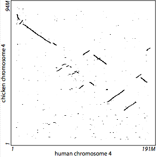
<p class=small>
<table class=holder align=center><tr><td>
<pre>
lastz \
  hg18.chr4.fa galGal3.chr4.fa
</pre>
</td></tr></table>
</td></tr>
</tbody></table>


<!-- Shotgun Reads -->
<div><a name="ex_shotgun"></a></div>
<h3>Aligning Shotgun Reads to a Human Chromosome</h3>

<p>
Short read mapping for close species requires parameters very different from
LASTZ&rsquo;s defaults. This example compares a simulated set of primate shotgun
reads to human chromosome 21. The chromosome can be found in the downloads
section of the <a href="http://genome.ucsc.edu/">UCSC Genome Browser</a>
(it is about 47 megabases). Ten thousand simulated reads were generated by
extracting 60-bp intervals from chimp chr21, subjecting them to mild mutation
(including short gaps), and then truncating them to 50 bp (these are included
in the LASTZ distribution, in <code>test_data/fake_chimp_reads.2bit</code>).

<p>
To see where these reads map onto the human chromosome, use this command:
<pre>
    lastz hg18.chr21.fa[unmask] fake_chimp_reads.2bit \
      --step=10 --seed=match12 --notransition --exact=20 --noytrim \
      --match=1,5 --ambiguous=n \
      --filter=coverage:90 --filter=identity:95 \
      --format=general:name1,start1,length1,name2,strand2 \
      > hg18_21_vs_reads.dat
</pre>

<p>
Attaching <code><a href="#action_unmask">[unmask]</a></code> to the chromosome
filename instructs LASTZ to ignore masking information and treat repeats the
same as any other part of the chromosome, in order to accurately assess the
uniqueness of the read mappings. Since we know the two species are close, we
want to reduce sensitivity. Using
<code><a href="#option_step">&#8209;&#8209;step=10</a></code>, we will only be looking for
seeds at every 10th base. Instead of the default seed pattern, we use
<code><a href="#option_seed_match">&#8209;&#8209;seed=match12</a></code> and
<code><a href="#option_notransition">&#8209;&#8209;notransition</a></code> so our
seeds will be exact matches of 12 bases. Instead of the default
<code><a href="#stage_gapfree">x-drop extension method</a></code> we use
<code><a href="#option_exact">&#8209;&#8209;exact=20</a></code> so that a 20-base
exact match is required to qualify as an HSP. Because we are aligning short
reads, we specify
<code><a href="#option_noytrim">&#8209;&#8209;noytrim</a></code> so the alignment ends will
not be trimmed back to the highest scoring locations during gapped extension.

<p>
We replace the default score set, which is for more distant species, with the
stricter <code><a href="#option_match">&#8209;&#8209;match=1,5</a></code>. This scores
matching bases as +1 and mismatches as &minus;5. We also use
<code><a href="#option_ambign">&#8209;&#8209;ambiguous=n</a></code> so that <code>N</code>s
will be scored appropriately.
We are only interested in alignments that involve nearly an entire read, and
since the species are close we don't want alignments with low identity;
therefore we use <code><a href="#option_coverage">&#8209;&#8209;filter=coverage:90</a></code> and
<code><a href="#option_identity">&#8209;&#8209;filter=identity:95</a></code>.

<p>
For output, we are only interested in where the reads align, so we use the
<code><a href="#option_format">&#8209;&#8209;format=general</a></code> option and specify
that we want the position on the chromosome (<code>name1</code>,
<code>start1</code>, <code>length1</code>) and the read name and orientation
(<code>name2</code>, <code>strand2</code>). This creates a tab-delimited
output file with one line per alignment block, a format that is well-suited for
downstream processing by other programs. For example, to count the number of
different reads we've mapped, we can run this Unix shell command:
<pre>
    cat hg18_21_vs_reads.dat | grep -v "#" | awk '{print $4}' | sort -u | wc
</pre>


<!-- Seeds et al. -->
<div><a name="ex_stages"></a></div>
<h3>Seeds, HSPs, Gapped Alignments, Chaining</h3>

<p>
This example demonstrates the primary
<a href="#stages_detail">alignment processing stages</a>, using the
&alpha;-globin regions of cow and human. This data is included in the LASTZ
distribution in <code>test_data/aglobin.2bit</code>, and consists of a 70K bp
segment of human DNA and a 66K bp segment of cow DNA. We will follow this
example through the major stages of seeding, gap-free extension, chaining, and
gapped extension.

<p>
Figure 2(a) shows the result of default seeding on a small window (3K bp) in the
middle of these segments. Seeds are short near-matches; in this case each seed
is 19 bp and could have as many as 8 mismatches (12-of-19 with one transition).
There are 338 seeds in this window, but regions where there are many seeds are
indistinguishable from line segments.

<p>
Figure 2(b) shows high-scoring segment pairs, the result of gap-free extension
of the seeds. There are 11 HSPs (only 10 are apparent in the figure, but one
of those is split by a 1-bp shift to the next diagonal). Note that many seeds
were discarded because their extensions were low scoring or overlapped.

<p>
Figure 2(c) shows the local alignment blocks resulting from gapped extension of
the HSPs. There are four alignment blocks.

<p>
Then we zoom out and show the results for the full sequences; the red box
indicates the small region shown in the earlier figures. Figure 2(d) shows
the HSPs, 2(e) shows the gapped alignment blocks, and 2(f) illustrates how
chaining reduces the alignment blocks to a single syntenic line (or two lines,
if there were matches on both strands). Note that one can already tell
quite a bit about how the sequences align just from looking at the HSPs.

<p>
<table class=figure><tbody>
<tr><td>
Figure 2(a)
<p class=small>
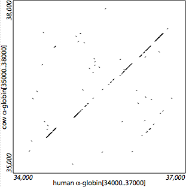
<p class=small>
<table class=holder align=center><tr><td>
<pre>
lastz \
  aglobin.2bit/human[34000..37000] \
  aglobin.2bit/cow[35000..38000] \
  --nogfextend --nochain --nogapped
</pre>
</td></tr></table>
</td><td><span class=wtab></span></td><td>
Figure 2(b)
<p class=small>

<p class=small>
<table class=holder align=center><tr><td>
<pre>
lastz \
  aglobin.2bit/human[34000..37000] \
  aglobin.2bit/cow[35000..38000] \
  --gfextend --nochain --nogapped
</pre>
</td></tr></table>
</td></tr>
<tr><td>
Figure 2(c)
<p class=small>
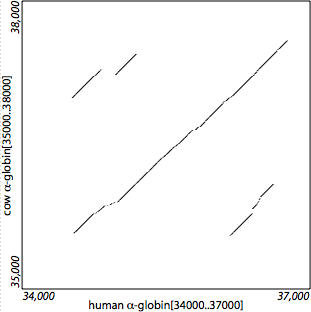
<p class=small>
<table class=holder align=center><tr><td>
<pre>
lastz \
  aglobin.2bit/human[34000..37000] \
  aglobin.2bit/cow[35000..38000] \
  --gfextend --nochain --gapped
</pre>
</td></tr></table>
</td><td><span class=wtab></span></td><td>
Figure 2(d)
<p class=small>
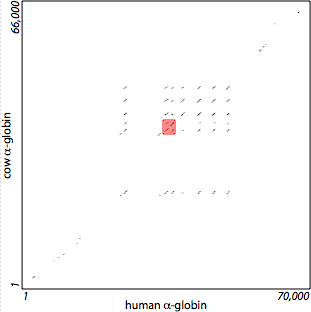
<p class=small>
<table class=holder align=center><tr><td>
<pre>
lastz \
  aglobin.2bit/human \
  aglobin.2bit/cow \
  --gfextend --nochain --nogapped
</pre>
</td></tr></table>
</td></tr>
<tr><td>
Figure 2(e)
<p class=small>

<p class=small>
<table class=holder align=center><tr><td>
<pre>
lastz \
  aglobin.2bit/human \
  aglobin.2bit/cow \
  --gfextend --nochain --gapped
</pre>
</td></tr></table>
</td><td><span class=wtab></span></td><td>
Figure 2(f)
<p class=small>
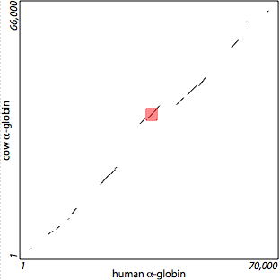
<p class=small>
<table class=holder align=center><tr><td>
<pre>
lastz \
  aglobin.2bit/human \
  aglobin.2bit/cow \
  --gfextend --chain --gapped
</pre>
</td></tr></table>
</td></tr>
</tbody></table>


<!-- Self-Alignment -->
<div><a name="ex_self"></a></div>
<h3>Aligning a Sequence With Itself</h3>

<p>
When a sequence is aligned to itself, the full result will contain mirror-image
copies of each alignment block. It is computationally wasteful to process both
copies. LASTZ can handle this situation in four different ways.
<ol>
<li> Simply give LASTZ the same sequence for both the
<a href="#target">target and query</a>. In this case, LASTZ does not know that
it is aligning a sequence to itself, and performs the full computation on both
copies (Figure 3(a)).
<p>
<li> Specify the <code><a href="#option_notrivial">&#8209;&#8209;notrivial</a></code>
option. This performs the full computation on both copies, but doesn't report
the trivial self-alignment block along the main diagonal (Figure 3(b)).
<p>
<li> Specify the <code><a href="#option_self">&#8209;&#8209;self</a></code> option in place
of the query sequence. LASTZ will save work by computing with only one block
of each mirror-image pair, though it still reports both copies in the output by
reconstructing the second copy from the first. It also invokes
<code>&#8209;&#8209;notrivial</code> automatically to omit the trivial self-alignment block
along the main diagonal. This gives the same output as the previous method,
but runs faster (Figure 3(c)).
<p>
<li> Specify <code><a href="#option_self">&#8209;&#8209;self</a></code> in place of the
query, and also add the <code><a href="#option_nomirror">&#8209;&#8209;nomirror</a></code>
option. In this case LASTZ reports only one copy of each mirror-image pair,
as well as omitting the trivial block (Figure 3(d)).
</ol>

<p>
In the following figure, we suppose we have a sequence with repeated motifs,
in the order
&alpha;1 &beta;1 &gamma;1 &beta;2 &delta;1 &alpha;2 &delta;2&prime; &gamma;2.
That is, &alpha;1 and &alpha;2 are ancient duplications, as are &beta;1 and
&beta;2, and &gamma;1 and &gamma;2. &nbsp;&delta;2&prime; is an inversion, a
reverse-complement duplicate of &delta;1.

<p>
<table class=figure><tbody>
<tr><td>
Figure 3(a)
<p class=small>

<p class=small>
<table class=holder align=center><tr><td>
<pre>
lastz target target
</pre>
</td></tr></table>
</td><td><span class=wtab></span></td><td>
Figure 3(b)
<p class=small>

<p class=small>
<table class=holder align=center><tr><td>
<pre>
lastz target target --notrivial
</pre>
</td></tr></table>
</td></tr>
<tr><td>
Figure 3(c)
<p class=small>
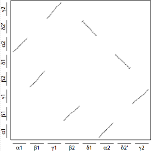
<p class=small>
<table class=holder align=center><tr><td>
<pre>
lastz target --self
</pre>
</td></tr></table>
</td><td><span class=wtab></span></td><td>
Figure 3(d)
<p class=small>
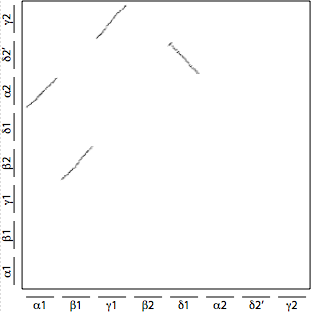
<p class=small>
<table class=holder align=center><tr><td>
<pre>
lastz target --self --nomirror
</pre>
</td></tr></table>
</td></tr>
</tbody></table>


<!---->
<!-- Command-line Syntax -->
<!---->

<hr class=hdr>
<div><a name="syntax"></a></div>
<h2>Command-line Syntax</h2>

<p>
If you are familiar with BLASTZ, you can run LASTZ the same way you ran BLASTZ,
with the same options and input files. In addition to this BLASTZ compatibility,
LASTZ provides other options.

<p>
The general format of the LASTZ command line is
<pre>
    lastz &lt;target&gt; [&lt;query&gt;] [&lt;options&gt;]
</pre>

<p>
The angle brackets <code>&lt;&gt;</code> indicate meta-syntactic variables that
should be replaced with your values, while the square ones <code>[]</code>
indicate elements that are optional. Spaces separate fields on the command
line; a field that needs to contain a space (e.g. within a file name) must be
enclosed in double quotes <code>""</code>. Elements can appear in
any order, the only constraint being that, if present, the
<code>&lt;query&gt;</code> must appear after the <code>&lt;target&gt;</code>. 
Output is generally written to <code>stdout</code>, unless specified otherwise
for a particular option.

<div><a name="target"></a></div>
<p>
The <code>&lt;target&gt;</code> and <code>&lt;query&gt;</code> are usually
just the names of files containing the sequences to be aligned, in either
<a href="#fmt_fasta">FASTA</a>, <a href="#fmt_nib">Nib</a>,
or <a href="#fmt_2bit">2Bit</a> format. However they can be
<a href="#fmt_hsx">HSX</a> index files that refer to the sequences indirectly,
and they also can specify pre-processing actions such as selecting a
subsequence from the file (see <a href="#seq_spec">Sequence Specifiers</a> for
details). With certain options such as
<code><a href="#option_self">&#8209;&#8209;self</a></code> the <code>&lt;query&gt;</code>
is not needed; otherwise if it is left unspecified the query sequences are read
from <code>stdin</code>
(though this does not work with random-access formats
like <a href="#fmt_2bit">2Bit</a>).
As a special case, the <code>&lt;target&gt;</code> is
omitted when the <code><a href="#option_capsule">&#8209;&#8209;targetcapsule</a></code>
option is used, since the target sequence is embedded within the capsule file.

<p>
For options, the general format is <code>&#8209;&#8209;&lt;keyword&gt;</code> or
<code>&#8209;&#8209;&lt;keyword&gt;=&lt;value&gt;</code>, but for BLASTZ compatibility
some options also have an alternative syntax
<code>&lt;letter&gt;=&lt;number&gt;</code>.
(Be careful when copying options from the tables below, as some of the hyphens
here are special characters to avoid awkward line wrapping in certain web
browsers. If you have trouble, replace the pasted hyphens with ordinary typed
ones on your command line.)

<p>
Please understand that LASTZ is a complex program and its options are not all
independent, i.e., some options are not valid in combination with certain
others. It would be difficult and cumbersome to attempt to list every possible
conflict here; instead we just mention some of the major ones. If you are not
sure about a particular combination, go ahead and try it &mdash; LASTZ will
tell you if it&rsquo;s not allowed.

<p>
Running the command <code>lastz</code> without any arguments prints a help
message with the most commonly used options, while running
<pre>
    lastz --help
</pre>
lists all of the options.


<!-- Where to Look -->
<div><a name="options_where"></a></div>
<h3>Where to Look</h3>
<p>
<table class=withlines><tbody>
<tr class=sectend><td>Option</td><td>BLASTZ equivalent</td><td>Meaning</td></tr>

<tr>
<td><a name="option_strand"></a><code>--strand=both</code></td>
<td><code>B=2</code></td>
<td>
Search both strands.
</td>
</tr>

<tr>
<td><code>--strand=plus</code></td>
<td><code>B=0</code></td>
<td>
Search the forward strand only (the one corresponding to the query specifier).
</td>
</tr>

<tr>
<td><code>--strand=minus</code></td>
<td></td>
<td>
Search only the reverse complement of the query specifier.
</td>
</tr>

<tr>
<td><a name="option_self"></a><code>--self</code></td>
<td></td>
<td>
Perform a self-alignment: the target sequence is also the query.
Computation is more efficient than it would be without this option, since only
one of each mirror-image pair of alignment blocks is processed (the other,
redundant one is skipped during processing, but re-created in the output).
Also, the trivial self-alignment block along the main diagonal is omitted from
the output.
This option cannot be used if the target is comprised of multiple sequences.
</td>
</tr>

<tr>
<td><a name="option_nomirror"></a><code>--nomirror</code></td>
<td></td>
<td>
Inhibit the re-creation of mirror-image alignments. Output consists of only
one copy of each meaningful alignment block in a self-alignment. This option
is only applicable when the <code><a href="#option_self">&#8209;&#8209;self</a></code>
option is used.
</td>
</tr>

<tr>
<td><a name="option_queryhsplimit"></a><code>--queryhsplimit=&lt;n&gt;</code></td>
<td></td>
<td>
Discard queries that have more than <code>&lt;n&gt;</code> HSPs. Any queries
that exceed this limit are reported as a warning (to <code>stderr</code>), and
no alignments are reported.
<p class=small>
This is useful for mapping reads to a reference genome, when some reads align
to too many places in the reference.
</td>
</tr>

<tr>
<td><code>--queryhsplimit=nowarn:&lt;n&gt;</code></td>
<td></td>
<td>
Same as <code>&#8209;&#8209;queryhsplimit=&lt;n&gt;</code> but warnings for queries that
exceed the limit are witheld.
</td>
</tr>

<tr>
<td><code>--queryhsplimit=keep,nowarn:&lt;n&gt;</code></td>
<td></td>
<td>
Same as <code>&#8209;&#8209;queryhsplimit=&lt;n&gt;</code> but queries that exceed the
limit are not discarded and warnings are witheld. For such a query, the first
<code>&lt;n&gt;</code> HSPs found are passed along to downstream processing.
<p class=small>
Note that the HSPs reported are not the best <code>&lt;n&gt;</code> HSPs. They
are simply the first <code>&lt;n&gt;</code> found;  they very likely have a
positional bias.
</td>
</tr>

<tr>
<td><a name="option_queryhspbest"></a><code>--queryhspbest=&lt;n&gt;</code></td>
<td></td>
<td>
For queries that have more than <code>&lt;n&gt;</code> HSPs, discard any HSPs
that score below the <code>n</code>th best.
<p class=small>
This is useful for mapping reads to a reference genome, when some reads align
to too many places in the reference.
</td>
</tr>

<tr>
<td><a name="option_querydepth"></a><code>--querydepth=&lt;n&gt;</code></td>
<td></td>
<td>
Stop processing gapped alignments for a query/strand if its ratio of aligned
bases to query length exceeds <code>&lt;n&gt;</code>. A warning is written to
stderr, all alignments for the query/strand are discarded, and processing
continues with the next query (or strand).
<p class=small>
<code>&#8209;&#8209;querydepth=keep:&lt;n&gt;</code> can be used if the preference is to
keep some alignments for such query/strands.
<p class=small>
<code>&lt;n&gt;</code> is a real number and corresponds to a depth of coverage
threshold. For example, a value of <code>5.0</code> would cause termination
once a query/strand has an average of five alignments for every base in the
query. The numerator is the number of matches or substitutions (but not gaps);
the denominator is the length of the query sequence.
<p class=small>
The purpose of this option is one of saving time. It is useful for
automatically terminating the processing of queries with high repeat content,
for which other methods of dealing with repetitive content fail.
<p class=small>
Moreover, <a href="#options_backend">back-end filtering</a> options are
<em>not</em> considered. In other words, matches are counted for any alignment
that meets the scoring threshold, regardless of whether that alignment would be
reported. The justification is that we are trying to abort the processing of
queries that have too many bounding alignments in the DP matrix, and back-end
filtering occurs later in the process.
</td>
</tr>

<tr>
<td><code>--querydepth=keep:&lt;n&gt;</code></td>
<td></td>
<td>
Same as <code>&#8209;&#8209;querydepth=&lt;n&gt;</code> but any alignments discovered for
this query/strand, before it exceeds the threshold, are reported.
<p class=small>
Note that the alignments reported are not guaranteed to be the highest scoring
alignments that would achieve the threshold. They are simply the first
alignments found. In other words, the purpose of this option is one of saving
time, not one of finding optimal alignments.
</td>
</tr>

<tr>
<td><code>--querydepth=nowarn:&lt;n&gt;</code></td>
<td></td>
<td>
Same as <code>&#8209;&#8209;querydepth=&lt;n&gt;</code> but warnings for queries that
exceed the limit are witheld.
</td>
</tr>

<tr>
<td><code>--querydepth=keep,nowarn:&lt;n&gt;</code></td>
<td></td>
<td>
Same as <code>&#8209;&#8209;querydepth=&lt;n&gt;</code> but any alignments discovered for
this query/strand, before it exceeds the threshold, are reported and warnings
are witheld.
</td>
</tr>

<tr>
<td><a name="option_anyornone"></a><code>--anyornone</code></td>
<td></td>
<td>
Stop processing after the first qualifying alignment has been found and written
to the output, and move on to the next query. "Qualifying" means an alignment
that meets all of the thresholds, etc. set by other options as usual. See
<a href="#adv_anyornone">Any-or-None Alignment</a> for more details.
This option is not compatible with <a href="#options_chaining">chaining</a>
or <a href="#options_interpolation">interpolation</a>.
</td>
</tr>

<tr class="newsect shaded">
<td class=indent><i>Defaults:</i></td>
<td></td>
<td>
By default both strands are searched, and the target is assumed to be different
from the query.
<p class=small>
If <code><a href="#option_self">&#8209;&#8209;self</a></code> is used, the default is to
re-create the redundant mirror-image alignment blocks in the output.
</td>
</tr>
</tbody></table>


<!-- Scoring -->
<div><a name="options_scoring"></a></div>
<h3>Scoring</h3>
<p>
These are fundamental parameters for alignment scoring, used in several of the
stages.
<p>
<table class=withlines><tbody>
<tr class=sectend><td>Option</td><td>BLASTZ equivalent</td><td>Meaning</td></tr>

<tr>
<td><a name="option_scores"></a><code>--scores=&lt;scoring_file&gt;</code></td>
<td><code>Q=&lt;file&gt;</code></td>
<td>
Read the substitution scores and gap penalties (and possibly other options)
from a <a href="#fmt_scoring">scoring file</a>. This option cannot be used in
conjunction with <a href="#option_match">&#8209;&#8209;match</a> or
<a href="#option_infer">inference</a>.
</td>
</tr>

<tr>
<td><a name="option_match"></a><code>--match=&lt;reward&gt;[,&lt;penalty&gt;]</code></td>
<td></td>
<td>
Set the score values for a match (+<code class=nopad>&lt;reward&gt;</code>)
and mismatch (&minus;<code class=nopad>&lt;penalty&gt;</code>).
These are both specified as positive values; the "+" and "&minus;" are
implicitly assumed. When <code>&lt;penalty&gt;</code> is not specified,
it is the same as <code>&lt;reward&gt;</code>.
<!-- Terminology-wise, if a positive parameter is applied in the negative
sense, we call it a "penalty" instead of a "score". E.g., gap open is a
positive value that is subtracted from the score. Also, x-drop and y-drop
thresholds are called "dropoff", as raising them actually brings in *more*
alignments, not fewer. -->
<p class=small>
Note that specifying <code>&#8209;&#8209;match</code> changes the defaults for some of
the other options (e.g. the scoring penalties for gaps, and various extension
thresholds), as described in their respective sections. The regular defaults
are chosen for compatibility with BLASTZ, but since BLASTZ doesn't support
<code>&#8209;&#8209;match</code>, LASTZ infers that you are not expecting BLASTZ
compatibility for this run, so it is free to use improved defaults.
<p class=small>
This option cannot be used in conjunction with
<code><a href="#option_scores">&#8209;&#8209;scores</a></code> or
<code><a href="#option_infer">inference</a></code>.
</td>
</tr>

<tr>
<td><a name="option_gap"></a><code>--gap=[&lt;open&gt;,]&lt;extend&gt;</code></td>
<td><code>O=&lt;open&gt;</code><br>
    <code>E=&lt;extend&gt;</code></td>
<td>
Set the score penalties for opening and extending a gap. These are specified
as positive values; subtraction is implicitly assumed. Note that the first
base in a gap incurs the sum of both penalties.
<p class=small>
This option is only valid if <a href="#options_gapped">gapped extension</a> is
being performed, and cannot be used in conjunction with
<code><a href="#option_infer">inference</a></code>. These values specified on
the command line override any corresponding values from a file provided with
<code><a href="#option_scores">&#8209;&#8209;scores</a></code>.
</td>
</tr>

<tr>
<td><a name="option_ambign"></a><code>--ambiguous=n[,&lt;reward&gt;][,&lt;penalty&gt;]</code></td>
<td></td>
<td>
Treat each <code>N</code> in the input sequences as an ambiguous nucleotide.
Substitutions with <code>N</code> are scored as zero, instead of using the
<code>fill_score</code> value from the <a href="#fmt_scoring">scoring file</a>
(which is -100 by default).
<p class=small>
A <code>&lt;penalty&gt;</code> can be specified, which will apply to any
non-match substitution involving an <code>N</code>. If a
<code>&lt;reward&gt;</code> is also specified, it applies to an N versus N
match (otherwise, these matches are scored as zero). Note that the
<code>&lt;penalty&gt;</code> is negated in the scoring matrix, while the
<code>&lt;reward&gt;</code> is not.
<p class=small>
See
<a href="#adv_non-acgt">Non-ACGT Characters</a> for a more thorough discussion.
This option is not valid with <a href="#fmt_qdna">quantum DNA</a>.
<p class=small>
Prior to version 1.02.20, this option was incorrectly implemented, and the fix
has caused a change in behavior, and reported alignments, when
<code>penalty</code> is not specified. See the
<a href="#hist_ambiguous_subs">change history item</a> for details on how to
maintain capatability with the earlier version, if that is desired.
</td>
</tr>

<tr>
<td><a name="option_iupac"></a><code>--ambiguous=iupac[,&lt;reward&gt;][,&lt;penalty&gt;]</code></td>
<td></td>
<td>
Treat each of the IUPAC-IUB ambiguity codes (<code>B, D, H, K, M, R, S, V,
W,</code> and <code>Y</code>, as well as <code>N</code>) in the input sequences
as a <em>completely</em> ambiguous nucleotide. Substitutions with these
characters are scored as zero, instead of using the <code>fill_score</code>
value from the <a href="#fmt_scoring">scoring file</a> (which is -100 by
default).
<p class=small>
A <code>&lt;penalty&gt;</code> can be specified, which will apply to any
non-match substitution involving an ambiguous nucleotide. If a
<code>&lt;reward&gt;</code> is also specified, it applies to a match involving
ambiguous nucleotides (otherwise, these matches are scored as zero). Note that
the <code>&lt;penalty&gt;</code> is negated in the scoring matrix, while the
<code>&lt;reward&gt;</code> is not.
<p class=small>
See <a href="#adv_non-acgt">Non-ACGT Characters</a> for a more thorough
discussion. This option is not valid with <a href="#fmt_qdna">quantum DNA</a>.
<p class=small>
Note that this does <em>not</em> mean that LASTZ considers the specific
ambiguity that is associated with each character (e.g. that <code>R</code>
would be considered a match to an <code>A</code> or <code>G</code> but not to
a <code>C</code> or <code>T</code>). Instead, they are all scored as if they
were an <code>N</code>.
<p class=small>
Prior to version 1.02.20, this option was incorrectly implemented, and the fix
has caused a change in behavior, and reported alignments, when
<code>penalty</code> is not specified. See the
<a href="#hist_ambiguous_subs">change history item</a> for details on how to
maintain capatability with the earlier version, if that is desired.
</td>
</tr>

<tr>
<td><a name="option_infer"></a><code>--infer[=&lt;control_file&gt;]</code></td>
<td></td>
<td>
Infer substitution scores and/or gap penalties from the sequences, then use
them to align the sequences. Parameters controlling the inference process are
read from the <a href="#fmt_inference">control file</a>.
This feature is somewhat experimental, and special builds of LASTZ are required
to enable it. Please see <a href="#adv_inference">Inferring Score Sets</a> for
more information. Inference cannot be used in conjunction with
<code><a href="#option_scores">&#8209;&#8209;scores</a></code>,
<code><a href="#option_match">&#8209;&#8209;match</a></code>, or
<code><a href="#option_gap">&#8209;&#8209;gap</a></code>.
</td>
</tr>

<tr>
<td><a name="option_inferonly"></a><code>--inferonly[=&lt;control_file&gt;]</code></td>
<td></td>
<td>
Infer substitution scores and/or gap penalties, but don't perform the final
alignment (requires <code><a href="#option_infscores">&#8209;&#8209;infscores</a></code>).
</td>
</tr>

<tr>
<td><a name="option_infscores"></a><code>--infscores[=&lt;output_file&gt;]</code></td>
<td></td>
<td>
Save the inferred scoring parameters to the specified file (or to
<code>stdout</code>), in the same <a href="#fmt_scoring">format</a> expected
by <code><a href="#option_scores">&#8209;&#8209;scores</a></code>.
</td>
</tr>

<tr class="newsect shaded">
<td class=indent><i>Defaults:</i></td>
<td></td>
<td>
By default the HOXD70 substitution scores are used
(see <a href="#chiaromonte_2002">[Chiaromonte 2002]</a> for an explanation of
how this scoring matrix was determined).
<p class=small>
<table class=holder><tbody><tr><td class=indent>
<table class=withlines><tbody style="text-align:right">
<tr><td>&nbsp;</td><td>A</td><td>C</td><td>G</td><td>T</td></tr>
<tr><td>A</td><td>91</td><td>&#8209;114</td><td>&#8209;31</td><td>&#8209;123</td></tr>
<tr><td>C</td><td>&#8209;114</td><td>100</td><td>&#8209;125</td><td>&#8209;31</td></tr>
<tr><td>G</td><td>&#8209;31</td><td>&#8209;125</td><td>100</td><td>&#8209;114</td></tr>
<tr><td>T</td><td>&#8209;123</td><td>&#8209;31</td><td>&#8209;114</td><td>91</td></tr>
</tbody></table>
</td></tr></tbody></table>
<p class=small>
Default gap penalties are determined as follows. If
<code><a href="#option_match">&#8209;&#8209;match</a></code> is
specified, the open penalty is 3.25 times the mismatch penalty, and the extend
penalty is 0.24375 times the mismatch penalty. (These are the same ratios as
BLASTZ&rsquo;s defaults.)  Both penalties are rounded up to the nearest integer.
Otherwise, the gap penalties are 400 for open, 30 for extend.
<p class=small>
By default, a run of <code>N</code>s serves as an old-style separator between
shotgun reads or other spliced sequences, rather than indicating ambiguous
nucleotides. This is solely a consequence of the steep
<code><a href="#scorefile_fillscore">fill_score</a></code> handicap imposed for
substitutions with <code>N</code> &mdash; LASTZ doesn't normally search for runs
of <code>N</code>s to treat specially (however, the
<code><a href="#action_separator">separator=N</a></code> action can be
used to accomplish that, and is preferred if <code>N</code>s are intended to be
separators).
</td>
</tr>
</tbody></table>


<!-- Indexing -->
<div><a name="options_indexing"></a></div>
<h3>Indexing</h3>
<p>
<table class=withlines><tbody>
<tr class=sectend><td>Option</td><td>BLASTZ equivalent</td><td>Meaning</td></tr>

<tr>
<td><a name="option_step"></a><code>--step=&lt;offset&gt;</code></td>
<td><code>Z=&lt;offset&gt;</code></td>
<td>
Offset between the starting positions of successive target words considered for
potential seeds. (But this does not apply to the query words, which always use
a step size of 1.)
</td>
</tr>

<tr>
<td><a name="option_mwcount"></a><code>--maxwordcount=&lt;limit&gt;</code></td>
<td></td>
<td>
Words occurring more often than <code>&lt;limit&gt;</code> in the target are
not eligible for seeds. Specifically, after the target seed word position table
is built, any words exceeding this count are removed from the table.
</td>
</tr>

<tr>
<td><code>--maxwordcount=&lt;limit&gt;%</code></td>
<td></td>
<td>
Set <code>maxwordcount</code> to keep a specified percentage of seed word
positions. <code>&lt;limit&gt;</code> is a lower bound on the percentage of
words to be kept (0&nbsp;&lt;&nbsp;<code>limit</code>&nbsp;&lt;&nbsp;100).
<p class=small>
Setting this as a percentage makes it easier to maintain consistency across
runs. The actual count is dependent on sequence length and composition as
well as the step offset and seed pattern. For example, Figure 4
shows the variation among human chromosomes in hg18 for
<code>&#8209;&#8209;seed=match13</code>, <code>&#8209;&#8209;step=15</code>, and
<code>&#8209;&#8209;maxwordcount=90%</code>. The gray bars show the percentage of
seed word positions kept (the red line shows the ideal 90%). The blue numbers
show the equivalent count, which varies greatly.
<p>
Figure 4
<p class=notop>

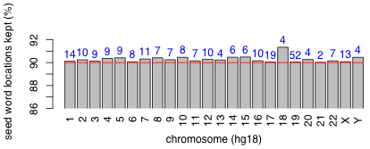
</td>
</tr>

<tr>
<td><a name="option_masking"></a><code>--masking=&lt;count&gt;</code></td>
<td><code>M=&lt;count&gt;</code></td>
<td>
Dynamically mask the target sequence by excluding any positions that appear
in too many alignments from further consideration for seeds.
<p class=small>
Specifically, a cumulative count is maintained of the number of times each
target location is aligned. After each query sequence
and strand is processed, any locations that have been output in at least
<code>&lt;count&gt;</code> alignment blocks are masked, so they will be
excluded from the seeding stage for <em>subsequent</em> query sequences.
Since repetition discovered while processing one sequence strand is only masked
for subsequent sequence strands, this option has no effect on the first strand
of the first sequence in the query file.
<p class=small>
This option requires one, two, or four bytes of memory for each target location,
depending on <code>&lt;count&gt;</code>. If <code>&lt;count&gt;</code> is 254
or less, one byte is used;  if it is 65,534 or less, two bytes are used.
<p class=small>
The resulting masked intervals can be written to a file with the
<code><a href="#option_outputmasking">&#8209;&#8209;outputmasking=&lt;file&gt;</a></code>
option.
</td>
</tr>

<tr>
<td><a name="option_capsule"></a><code>--targetcapsule=&lt;capsule_file&gt;</code></td>
<td></td>
<td>
The target seed word position table and seed (as well as the target sequence)
are read from the specified <a href="#fmt_capsule">file</a>. When this option
is used, the normal target specifier is omitted from the command line, and the
following options are not allowed:
<code><a href="#option_step">&#8209;&#8209;step</a></code>,
<code><a href="#option_mwcount">&#8209;&#8209;maxwordcount</a></code>,
<code><a href="#option_masking">&#8209;&#8209;masking</a></code>,
<code><a href="#options_seeding">&#8209;&#8209;seed</a></code>,
<code><a href="#option_word">&#8209;&#8209;word</a></code>.
</td>
</tr>

<tr>
<td><a name="option_chores"></a><code>--chores=&lt;chores_file&gt;</code></td>
<td></td>
<td>
Restrict alignment to a list of subintervals. The <a href="#fmt_chores">file</a>
describes a list of sequence interval pairs, indicating that the alignment
process is to be restricted to those intervals.
<p class=small>
See <a href="#adv_lotta_subs">Aligning Many Subintervals</a> for advice
on when to use this option.

<tr>
<td><a name="option_segments"></a><code>--segments=&lt;segment_file&gt;</code></td>
<td></td>
<td>
Read anchor segments from a <a href="#fmt_segments">file</a>, instead of discovering
them via seeding.
This replaces any other options related to indexing, seeding, gap-free
extension or chaining. Those stages are skipped, and processing begins with
the gapped extension stage.
<p class=small>
See <a href="#adv_lotta_subs">Aligning Many Subintervals</a> for advice
on when to use this option.
</td>
</tr>

<tr class="newsect shaded">
<td class=indent><i>Defaults:</i></td>
<td></td>
<td>
By default a step of 1 is used, no words are removed from the target seed word
position table, dynamic masking is not performed, and no target capsule or
segment file is used.
</td>
</tr>
</tbody></table>


<!-- Seeding -->
<div><a name="options_seeding"></a></div>
<h3>Seeding</h3>
<p>
<table class=withlines><tbody>
<tr class=sectend><td>Option</td><td>BLASTZ equivalent</td><td>Meaning</td></tr>

<tr>
<td><code>--seed=12of19</code></td>
<td><code>T=1</code> or <code>T=2</code></td>
<td>
Seeds require a 19-bp word with matches in 12 specific positions
(<code>1110100110010101111</code>).
</td>
</tr>

<tr>
<td><code>--seed=14of22</code></td>
<td><code>T=3</code> or <code>T=4</code></td>
<td>
Seeds require a 22-bp word with matches in 14 specific positions
(<code>1110101100110010101111</code>).
</td>
</tr>

<tr>
<td><a name="option_seed_match"></a><code>--seed=match&lt;length&gt;</code></td>
<td><code>W=&lt;length&gt;</code></td>
<td>
Seeds require a <code>&lt;length&gt;</code>-bp word with matches in all
positions.
</td>
</tr>

<tr>
<td><code>--seed=half&lt;length&gt;</code></td>
<td></td>
<td>
Seeds require a <code>&lt;length&gt;</code>-bp word with matches or transitions
in all positions. This option is not valid with
<a href="#fmt_qdna">quantum DNA</a>.
</td>
</tr>

<tr>
<td><code>--seed=&lt;pattern&gt;</code></td>
<td></td>
<td>
Specifies an arbitrary pattern of <code>1</code>s, <code>0</code>s, and
<code>T</code>s for seed discovery. (Note that <code>T</code>s are not valid
with <a href="#fmt_qdna">quantum DNA</a>.)
</td>
</tr>

<tr>
<td><code>--transition</code></td>
<td><code>T=1</code> or <code>T=3</code></td>
<td>
In each seed, allow any one match position to be a transition instead.
This option is not valid with <a href="#fmt_qdna">quantum DNA</a>.
</td>
</tr>

<tr>
<td><code>--transition=2</code></td>
<td></td>
<td>
In each seed, allow any two match positions to be transitions instead.
This option is not valid with <a href="#fmt_qdna">quantum DNA</a>.
</td>
</tr>

<tr>
<td><a name="option_notransition"></a><code>--notransition</code></td>
<td><code>T=2</code> or <code>T=4</code></td>
<td>
Don't allow any match positions in seeds to be satisfied by transitions.
</td>
</tr>

<tr>
<td><code>--filter=[&lt;transv&gt;,]&lt;matches&gt;</code></td>
<td></td>
<td>
Filter the resulting seeds, requiring at least <code>&lt;matches&gt;</code>
exact matches and allowing no more than <code>&lt;transv&gt;</code>
transversions. If <code>&lt;transv&gt;</code> is not specified, any number
of transversions is allowed (they are not limited).
This option is not valid with <a href="#fmt_qdna">quantum DNA</a>.
</td>
</tr>

<tr>
<td><code>--nofilter</code></td>
<td></td>
<td>
Don't filter seeds.
</td>
</tr>

<tr>
<td>
<a name="option_ball"></a><code>--ball=&lt;score&gt;</code></td>
<td></td>
<td>
Set the <a href="#quantum_seeding">quantum seeding</a> threshold, the minimum
score required of a DNA word to be included in the seeding ball.
</td>
</tr>

<tr>
<td>
<code>--ball=&lt;percentage&gt;%</code></td>
<td></td>
<td>
Set the quantum seeding threshold as a percentage of the maximum word score
possible.
</td>
</tr>

<tr>
<td><a name="option_twins"></a><code>--twins=[&lt;minsep&gt;..]&lt;maxsep&gt;</code></td>
<td></td>
<td>
Require two nearby seeds on the same diagonal, separated by a number of bases
in the given range. See the <a href="#adv_patterns">Seed Patterns</a> section
for more information. This option cannot be used in conjunction with
<code><a href="#option_recover">&#8209;&#8209;recoverseeds</a></code>.
</td>
</tr>

<tr>
<td><code>--notwins</code></td>
<td></td>
<td>
Allow single, isolated seeds.
</td>
</tr>

<tr>
<td><a name="option_recover"></a><code>--recoverseeds</code></td>
<td></td>
<td>
Avoid losing seeds in hash collisions. This will slow the alignment process
considerably and cost more memory, and usually does not improve the results
significantly. See the <a href="#stage_gapfree">Gap-free Extension</a> stage
for more information. This option cannot be used in conjunction with
<code><a href="#option_twins">&#8209;&#8209;twins</a></code>.
</td>
</tr>

<tr>
<td><code>--norecoverseeds</code></td>
<td></td>
<td>
Ignore hash collisions, at the expense of missing some seeds. Note that
missing seeds usually does not mean missing alignments, since most alignable
regions have many seed hits.
</td>
</tr>

<tr class="newsect shaded">
<td class=indent><i>Defaults:</i></td>
<td></td>
<td>
By default the 12-of-19 seed is used, one transition is allowed (except with
<a href="#fmt_qdna">quantum DNA</a>), the hits are not filtered, twins are not
required, and hash collisions are not recovered.
<p class=small>
If the <code><a href="#action_quantum">quantum</a></code> action is used in the
query file&rsquo;s <a href="#seq_spec">sequence specifier</a>, the default ball
scoring threshold is 75% of the maximum word score possible.
</td>
</tr>
</tbody></table>


<!-- Finding HSPs -->
<div><a name="options_hsps"></a></div>
<h3>Finding HSPs (Gap-free Extension)</h3>
<p>
<table class=withlines><tbody>
<tr class=sectend><td>Option</td><td>BLASTZ equivalent</td><td>Meaning</td></tr>

<tr>
<td><code>--gfextend</code></td>
<td></td>
<td>
Perform gap-free extension of seeds to HSPs (high scoring segment pairs),
according to the other options in this section.
</td>
</tr>

<tr>
<td><a name="option_nogfextend"></a><code>--nogfextend</code></td>
<td></td>
<td>
Skip the gap-free extension stage, passing the seeds along to the next
specified stage.
</td>
</tr>

<tr>
<td><a name="option_exact"></a><code>--exact=&lt;length&gt;</code></td>
<td></td>
<td>
Find HSPs using the exact match extension method with the given length
threshold, instead of using the x-drop method.
</td>
</tr>

<tr>
<td><a name="option_mismatch"></a><code>--mismatch=&lt;count&gt;,&lt;length&gt;</code></td>
<td></td>
<td>
Find HSPs using the mismatch extension method with the given length threshold
and allowing <code>count</code> mismatches, instead of using the x-drop method.
<p class=small>
<code>count</code> is limited to the range <code>1&le;count&le;50</code>.
</td>
</tr>

<tr>
<td><a name="option_xdrop"></a><code>--xdrop=&lt;dropoff&gt;</code></td>
<td><code>X=&lt;dropoff&gt;</code></td>
<td>
Find HSPs using the x-drop extension method with the given termination
threshold, instead of using the exact match method. The dropoff setting
determines the endpoints of each gap-free segment: the extension of each seed
is stopped when its cumulative score drops off by more than the given
threshold from the maximum seen so far. See the
<a href="#stage_gapfree">Gap-free Extension</a> stage for more details.
</td>
</tr>

<tr>
<td><a name="option_hspthresh"></a><code>--hspthresh=&lt;score&gt;</code></td>
<td><code>K=&lt;score&gt;</code></td>
<td>
Set the score threshold for the x-drop extension method; HSPs scoring lower
are discarded.
</td>
</tr>

<tr>
<td><a name="option_topcount"></a><code>--hspthresh=top&lt;basecount&gt;</code></td>
<td></td>
<td>
Set an <a href="#adaptive_thresh">adaptive</a> score threshold for the x-drop
extension method; HSPs scoring lower are discarded. The score threshold is
chosen to limit the number of target sequence bases in HSPs to about
<code>&lt;basecount&gt;</code>
(or possibly a little higher in case of ties, etc.).
</td>
</tr>

<tr>
<td><a name="option_toppct"></a><code>--hspthresh=top&lt;percentage&gt;%</code></td>
<td></td>
<td>
Set an <a href="#adaptive_thresh">adaptive</a> score threshold for the x-drop
extension method; HSPs scoring lower are discarded. The score threshold is
chosen to limit the number of target sequence bases in HSPs to about
<code>&lt;percentage&gt;</code> percent of the target (or possibly a little
higher in case of ties, etc.).
</td>
</tr>

<tr>
<td><a name="option_entropy"></a><code>--entropy</code></td>
<td><code>P=1</code></td>
<td>
Adjust for entropy when qualifying HSPs in the x-drop extension method.
Those that score just slightly above the HSP threshold are adjusted downward
according to the entropy of their nucleotides, and any that then fall below
the threshold are discarded.
</td>
</tr>

<tr>
<td><code>--entropy=report</code></td>
<td><code>P=2</code></td>
<td>
Adjust for entropy when qualifying HSPs in the x-drop extension method,
and report (to <code>stderr</code>) any HSPs that are discarded as a result.
</td>
</tr>

<tr>
<td><code>--noentropy</code></td>
<td><code>P=0</code></td>
<td>
Don't adjust for entropy when qualifying HSPs.
</td>
</tr>

<tr class="newsect shaded">
<td class=indent><i>Defaults:</i></td>
<td></td>
<td>
By default seeds are extended to HSPs using x-drop extension, with entropy
adjustment.
<p class=small>
If <code><a href="#option_match">&#8209;&#8209;match</a></code> scoring is used, the
default x-drop termination threshold is 10 times the square root of the
mismatch penalty, rounded up to the nearest integer. Otherwise the default
is 10 times the A-vs.-A substitution score.
<p class=small>
If <code><a href="#option_match">&#8209;&#8209;match</a></code> scoring is used, the
default HSP score threshold is 30 times the match reward (equivalent to the
score of a 30-bp exact match). Otherwise the default is 3000.
<p class=small>
<code><a href="#option_help_defaults">&#8209;&#8209;help=defaults</a></code> can be used
to see what values are set.
</td>
</tr>
</tbody></table>


<!-- Chaining -->
<div><a name="options_chaining"></a></div>
<h3>Chaining</h3>
<p>
<table class=withlines><tbody>
<tr class=sectend><td>Option</td><td>BLASTZ equivalent</td><td>Meaning</td></tr>

<tr>
<td><code>--chain</code></td>
<td><code>C=1</code> or <code>C=2</code></td>
<td>
Perform chaining of HSPs
with no penalties.
</td>
</tr>

<tr>
<td><code>--chain=&lt;diag&gt;,&lt;anti&gt;</code></td>
<td><code>C=1</code> or <code>C=2</code><br>
    <code>G=&lt;diag&gt;</code><br>
    <code>R=&lt;anti&gt;</code></td>
<td>
Perform chaining with the given penalties for diagonal and anti-diagonal in the
<a href="#adv_dp">DP matrix</a>. These are specified as positive values;
subtraction from the score is implicitly assumed.
</td>
</tr>

<tr>
<td><a name="option_nochain"></a><code>--nochain</code></td>
<td><code>C=0</code> or <code>C=3</code></td>
<td>
Skip the chaining stage.
</td>
</tr>

<tr class="newsect shaded">
<td class=indent><i>Defaults:</i></td>
<td></td>
<td>
By default the chaining stage is skipped.
</td>
</tr>
</tbody></table>


<!-- Gapped Extension -->
<div><a name="options_gapped"></a></div>
<h3>Gapped Extension</h3>
<p>
<table class=withlines><tbody>
<tr class=sectend><td>Option</td><td>BLASTZ equivalent</td><td>Meaning</td></tr>

<tr>
<td><code>--gapped</code></td>
<td><code>C=0</code> or <code>C=2</code></td>
<td>
Perform gapped extension of HSPs (or seeds, if gap-free extension is not
performed), after first reducing them to anchor points.
</td>
</tr>

<tr>
<td><a name="option_nogapped"></a><code>--nogapped</code></td>
<td><code>C=1</code> or <code>C=3</code></td>
<td>
Skip the gapped extension stage. (This means that
<a href="#options_interpolation">interpolation</a> must also be skipped, since
it is not allowed without gapped extension.)
</td>
</tr>

<tr>
<td><a name="option_ydrop"></a><code>--ydrop=&lt;dropoff&gt;</code></td>
<td><code>Y=&lt;dropoff&gt;</code></td>
<td>
Set the threshold for terminating gapped extension; this restricts the
endpoints of each local alignment by limiting the local region around each
anchor in which extension is performed. The boundary of this region in the
<a href="#adv_dp">DP matrix</a> is formed by the points where the cumulative
score has dropped off by more than the given threshold from the maximum seen
so far. See the <a href="#stage_gapped">Gapped Extension</a> stage for more
details.
</td>
</tr>

<tr>
<td><a name="option_noytrim"></a><code>--noytrim</code></td>
<td></td>
<td>
If y-drop extension encounters the end of the sequence, extend the alignment
to the end of the sequence rather than trimming it back to the location giving
the maximum score. This is highly recommended when either the target or query
sequences are short reads (say, less than 100 bases), to prevent
<a href="#adv_shadow">y-drop mismatch shadow</a>.
</td>
</tr>

<tr>
<td><a name="option_gapthresh"></a><code>--gappedthresh=&lt;score&gt;</code></td>
<td><code>L=&lt;score&gt;</code></td>
<td>
Set the threshold for gapped extension; alignments scoring lower than
<code>&lt;score&gt;</code> are discarded.
When used along with the x-drop method for gap-free extension, this value is
generally set at least as high as the HSP threshold. Setting it lower has no
effect, since at worst the HSP itself would always qualify (both extension
stages use the same scoring matrix).
</td>
</tr>

<tr>
<td><a name="option_allbounds"></a><code>--allgappedbounds</code></td>
<td></td>
<td>
Revert to handling bounding alignments the way they were handled in BLASTZ.
This is discussed in
<a href="#diff_dp_bounds">Bounding Alignments in the DP Matrix</a>.
</td>
</tr>

<tr class="newsect shaded">
<td class=indent><i>Defaults:</i></td>
<td></td>
<td>
By default gapped extension is performed, and alignment ends are trimmed
to the locations giving the maximum score.
<p class=small>
If <code><a href="#option_match">&#8209;&#8209;match</a></code> scoring is used, the
default y-drop threshold is twice the x-drop threshold (or if x-drop extension
was not performed, twice what the default x-drop threshold would have been);
otherwise it is the score of a 300-bp gap.
<p class=small>
The default for the gapped score threshold is to use the same value as the
HSP threshold (which is settable via
<code><a href="#option_hspthresh">&#8209;&#8209;hspthresh</a></code>). If the HSP
threshold was <a href="#adaptive_thresh">adaptive</a>, then the lowest-scoring
HSP that was kept is used for this default. If x-drop extension was not
performed, the value used is whatever the default HSP threshold would have been.
<p class=small>
<code><a href="#option_help_defaults">&#8209;&#8209;help=defaults</a></code> can be used
to see what values are set.
</td>
</tr>
</tbody></table>


<!-- Back-end Filtering -->
<div><a name="options_backend"></a></div>
<h3>Back-end Filtering</h3>
<p>
<table class=withlines><tbody>
<tr class=sectend><td>Option</td><td>BLASTZ equivalent</td><td>Meaning</td></tr>

<tr>
<td><a name="option_identity"></a><code>--filter=identity:&lt;min&gt;[..&lt;max&gt;]</code></td>
<td></td>
<td>
Filter alignments by their percent identity,
0&nbsp;&le;&nbsp;<code class=nopad>min</code>&nbsp;&le;&nbsp;<code
 class=nopad>max</code>&nbsp;&le;&nbsp;100 percent.
<a href="#define_identity">Identity</a> is the percentage of aligned bases that
are matches. Alignment blocks outside the given range are discarded.
This option is not valid with <a href="#fmt_qdna">quantum DNA</a>.
<p class=small>
For backwards compatibility, <code>&#8209;&#8209;identity=&lt;min&gt;[..&lt;max&gt;]</a></code> has the
same meaning.
</td>
</tr>

<tr>
<td><a name="option_continuity"></a><code>--filter=continuity:&lt;min&gt;[..&lt;max&gt;]</code></td>
<td></td>
<td>
Filter alignments by how much of the input sequence aligns as matches or
mismatches, rather than gaps,
0&nbsp;&le;&nbsp;<code class=nopad>min</code>&nbsp;&le;&nbsp;<code
 class=nopad>max</code>&nbsp;&le;&nbsp;100 percent.
<a href="#define_continuity">Continuity</a> is the percentage of alignment
columns that are <em>not</em> gaps. Alignment blocks outside the given range
are discarded.
<p class=small>
For backwards compatibility, <code>&#8209;&#8209;continuity=&lt;min&gt;[..&lt;max&gt;]</a></code> has the
same meaning.
</td>
</tr>

<tr>
<td><a name="option_coverage"></a><code>--filter=coverage:&lt;min&gt;[..&lt;max&gt;]</code></td>
<td></td>
<td>
Filter alignments by how much of the input sequence they cover,
0&nbsp;&le;&nbsp;<code class=nopad>min</code>&nbsp;&le;&nbsp;<code
 class=nopad>max</code>&nbsp;&le;&nbsp;100 percent.
<a href="#define_coverage">Coverage</a> is the percentage of the entire target
or query sequence (whichever is shorter) that is included in the alignment
block. Blocks outside the given range are discarded.
<p class=small>
For backwards compatibility, <code>&#8209;&#8209;coverage=&lt;min&gt;[..&lt;max&gt;]</a></code> has the
same meaning.
</td>
</tr>

<tr>
<td><a name="option_filter_nmatch"></a><code>--filter=nmatch:&lt;min&gt;</code></td>
<td></td>
<td>
Filter alignments by how many bases match, requiring at least <code>min</code>
matched bases, <code class=nopad>min</code>&nbsp;&gt;&nbsp;0.
<a href="#define_nmatch">Match count</a>, or <code>nmatch</code>, is the number
of matched bases in the alignment. This option is not valid with
<a href="#fmt_qdna">quantum DNA</a>.
<p class=small>
For backwards compatibility, <code>&#8209;&#8209;matchcount=&lt;min&gt;</a></code> has the
same meaning.
</td>
</tr>

<tr>
<td><a name="option_filter_nmatch_pct"></a><code>--filter=nmatch:&lt;min&gt;%</code></td>
<td></td>
<td>
Filter alignments by how many bases match, with the threshold specified as a
percentage of the query length.
</td>
</tr>

<tr>
<td><a name="option_filter_nmismatch"></a><code>--filter=nmismatch:0..&lt;max&gt;</code></td>
<td></td>
<td>
Filter alignments by the number of mismatches, allowing no more than
<code>max</code> mismatched bases,
<code class=nopad>max</code>&nbsp;&ge;&nbsp;0.
<a href="#define_nmismatch">Mismatch count</a>, or <code>nmismatch</code>, is
the number of aligned bases in the alignment that are mismatches
(substitutions). This option is not valid with
<a href="#fmt_qdna">quantum DNA</a>.
</td>
</tr>

<tr>
<td><a name="option_filter_ngap"></a><code>--filter=ngap:0..&lt;max&gt;</code></td>
<td></td>
<td>
Filter alignments by the number of gaps, allowing no more than
<code>max</code> gaps, <code class=nopad>max</code>&nbsp;&ge;&nbsp;0.
<a href="#define_ngap">Gap count</a>, or <code>ngap</code>, is the
number of runs of gapped columns in the alignment (each run is counted as one
gap).
</td>
</tr>

<tr>
<td><a name="option_filter_cgap"></a><code>--filter=cgap:0..&lt;max&gt;</code></td>
<td></td>
<td>
Filter alignments by the number of gap columns, allowing no more than
<code>max</code> gaps, <code class=nopad>max</code>&nbsp;&ge;&nbsp;0.
<a href="#define_cgap">Gap column count</a>, or <code>cgap</code>, is the
number of gapped columns in the alignment (each column is counted as one gap).
</td>
</tr>

<tr>
<td><a name="option_notrivial"></a><code>--notrivial</code></td>
<td></td>
<td>
Do not output a trivial self-alignment block if the target and query sequences
are identical. Note that using <code><a href="#option_self">&#8209;&#8209;self</a></code>
automatically enables this option.
</td>
</tr>

<tr class="newsect shaded">
<td class=indent><i>Defaults:</i></td>
<td></td>
<td>
By default no back-end filtering is performed, and the trivial block is
included if the sequences happen to be identical.
</td>
</tr>
</tbody></table>


<!-- Interpolation -->
<div><a name="options_interpolation"></a></div>
<h3>Interpolation</h3>
<p>
<table class=withlines><tbody>
<tr class=sectend><td>Option</td><td>BLASTZ equivalent</td><td>Meaning</td></tr>

<tr>
<td><a name="option_inner"></a><code>--inner=&lt;score&gt;</code></td>
<td><code>H=&lt;score&gt;</code></td>
<td>
Perform additional alignment between the gapped alignment blocks, using
(presumably) more sensitive alignment parameters. <code>&lt;score&gt;</code>
is used as the threshold for both the gap-free and gapped extension sub-stages;
see the discussion of <a href="#stage_interpolation">interpolation</a> for more
details.
<p class=small>
This option is only valid if <a href="#options_gapped">gapped extension</a> is
performed.
</td>
</tr>

<tr class="newsect shaded">
<td class=indent><i>Defaults:</i></td>
<td></td>
<td>
By default interpolation is not performed.
</td>
</tr>
</tbody></table>


<!-- Output -->
<div><a name="options_output"></a></div>
<h3>Output</h3>
<p>
<table class=withlines><tbody>
<tr class=sectend><td>Option</td><td>BLASTZ equivalent</td><td>Meaning</td></tr>

<tr>
<td><a name="option_output"></a><code>--output=&lt;output_file&gt;</code></td>
<td></td>
<td>
Write the alignments to the specified file name instead of <code>stdout</code>.
</td>
</tr>

<tr>
<td><a name="option_format"></a><code>--format=&lt;type&gt;</code></td>
<td></td>
<td>
Specifies the output format:
<code><a href="#fmt_lav">lav</a></code>,
<code><a href="#fmt_lav">lav+text</a></code>,
<code><a href="#fmt_axt">axt</a></code>,
<code><a href="#fmt_axt">axt+</a></code>,
<code><a href="#fmt_maf">maf</a></code>,
<code><a href="#fmt_maf">maf+</a></code>,
<code><a href="#fmt_maf">maf-</a></code>,
<code><a href="#fmt_sam">sam</a></code>,
<code><a href="#fmt_sam">softsam</a></code>,
<code><a href="#fmt_sam">sam-</a></code>,
<code><a href="#fmt_sam">softsam-</a></code>,
<code><a href="#fmt_cigar">cigar</a></code>,
<code><a href="#fmt_blastn">BLASTN</a></code>,
<code><a href="#fmt_diffs">differences</a></code>,
<code><a href="#fmt_rdotplot">rdotplot</a></code>,
<code><a href="#fmt_text">text</a></code>,
<code><a href="#fmt_general">general[:&lt;fields&gt;]</a></code>,
or
<code><a href="#fmt_general">general-[:&lt;fields&gt;]</a></code>.
<p class=small>
<code>&#8209;&#8209;format=none</code> can be used when no alignment output is desired.
</td>
</tr>

<tr>
<td><code>--rdotplot=&lt;file&gt;</code></td>
<td></td>
<td>
Create an additional output file suitable for plotting the alignment blocks
with the <a href="http://www.r-project.org/">R statistical package</a>. The
output file is the same as would be produced by
<code>&#8209;&#8209;format=<a href="#fmt_rdotplot">rdotplot</a></code>, but this option
allows you to create the dotplot file without having to run the alignment twice.
</td>
</tr>

<tr>
<td><a name="option_readgroup"></a><code>--readgroup=&lt;tags&gt;</code></td>
<td></td>
<td>
Used in conjuction with the <a href="#fmt_sam">SAM</a> file format, allowing
the specification of tags for SAM's <code>&#8209;RG</code> header line.
<code>&lt;tags&gt;</code> is a tab-delimited list of
<code>&lt;tag&gt;:&lt;value&gt;</code> items. See the SAM specification for
details about which tags are required. LASTZ does not validate whether the
list is a valid SAM tag list.
<p class=small>
Since the list is tab-delimited, you may need to surround this option with
quotes to satisfy the command line shell. Alternately, you can use
<code>--readgroup</code> more than once, and the lists are concatenated.
</td>
</tr>

<tr>
<td><code>--markend</code></td>
<td></td>
<td>
Just before normal completion, write a marker line
<pre>
    <code># lastz end-of-file</code>
</pre>
to the output file. This option can be useful with pipelines or batch servers,
where there may be a question as to whether or not LASTZ completed successfully.
Note that in some output formats this marker is not a legal line, in which case
you must remove it before any downstream processing.
</td>
</tr>

<tr>
<td><code>--census[=&lt;output_file&gt;]</code></td>
<td><code>c=1</code></td>
<td>
Count and report how many times each target base aligns, up to 255.
<code>N</code>s are included in the count (both bases that are <code>N</code>s
and bases aligning to <code>N</code>s), and even bases aligning to gaps are
counted. Requires one byte of memory for each target location.
<p class=small>
For any of the <code>lav</code> formats, if <code>&lt;output_file&gt;</code>
is omitted the census is included as a special stanza in the output.
For all other formats <code>&lt;output_file&gt;</code> is mandatory.
<p class=small>
</td>
</tr>

<tr>
<td><code>--census16[=&lt;output_file&gt;]</code></td>
<td></td>
<td>
Count and report how many times each target base aligns, up to &asymp;65
thousand. Requires two bytes of memory for each target location.
</td>
</tr>

<tr>
<td><code>--census32[=&lt;output_file&gt;]</code></td>
<td></td>
<td>
Count and report how many times each target base aligns, up to &asymp;4
billion. Requires four bytes of memory for each target location.
</td>
</tr>

<tr>
<td><code>--nocensus</code></td>
<td><code>c=0</code></td>
<td>
Do not report a census of aligning bases.
</td>
</tr>

<tr>
<td><a name="option_outputmasking"></a><code>--outputmasking=&lt;file&gt;</code></td>
<td></td>
<td>
Used in conjuction with the
<code><a href="#option_masking">&#8209;&#8209;masking=&lt;count&gt;</a></code> option.
The masked target intervals, resulting from alignment with all queries, are
written to a file in 
<a href="#fmt_mask">sequence masking file</a> format. The file is suitable
for later use with the
<code><a href="#action_softmask">softmask</a></code>,
<code><a href="#action_xmask">xmask</a></code>, and
<code><a href="#action_nmask">nmask</a></code> sequence specifier actions.
<p class=small>In contrast with 
<code><a href="#option_outputmaskingsoft">&#8209;&#8209;outputmasking:soft=&lt;file&gt;</a></code>,
only those intervals created by the
<code><a href="#option_masking">&#8209;&#8209;masking=&lt;count&gt;</a></code> option
are reported.
</td>
</tr>

<tr>
<td><a name="option_outputmaskingplus"></a><code>--outputmasking+=&lt;file&gt;</code></td>
<td></td>
<td>
The same as
<code><a href="#option_outputmasking">&#8209;&#8209;outputmasking=&lt;file&gt;</a></code>,
except that masked intervals are written to a file in 
<a href="#fmt_mask_3fields">three field sequence masking file</a> format, which
includes sequence names. The file is <em>not</em> suitable for later use as
input to LASTZ.
<p>
This is useful when the target file contains more than one sequence.
</td>
</tr>

<tr>
<td><a name="option_outputmaskingsoft"></a><code>--outputmasking:soft=&lt;file&gt;</code></td>
<td></td>
<td>
Soft-masked target intervals (lowercase bases) are written to a file in 
<a href="#fmt_mask">sequence masking file</a> format. The file is suitable
for later use with the
<code><a href="#action_softmask">softmask</a></code>,
<code><a href="#action_xmask">xmask</a></code>, and
<code><a href="#action_nmask">nmask</a></code> sequence specifier actions.
<p class=small>In contrast with 
<code><a href="#option_outputmasking">&#8209;&#8209;outputmasking=&lt;file&gt;</a></code>,
all masked intervals in the target sequence are reported, regardless of whether
they were created by the
<code><a href="#option_masking">&#8209;&#8209;masking=&lt;count&gt;</a></code> option
or were in the sequence as it was originally input.
</td>
</tr>

<tr>
<td><a name="option_outputmaskingplussoft"></a><code>--outputmasking+:soft=&lt;file&gt;</code></td>
<td></td>
<td>
The same as
<code><a href="#option_outputmaskingsoft">&#8209;&#8209;outputmasking:soft=&lt;file&gt;</a></code>,
except that masked intervals are written to a file in 
<a href="#fmt_mask_3fields">three field sequence masking file</a> format, which
includes sequence names. The file is <em>not</em> suitable for later use as
input to LASTZ.
<p>
This is useful when the target file contains more than one sequence.
</td>
</tr>

<tr>
<td><code>--tableonly</code></td>
<td></td>
<td>
Just write out the target seed word position table and quit; don't search for
seeds or perform any subsequent stages.
</td>
</tr>

<tr>
<td><code>--tableonly=count</code></td>
<td></td>
<td>
Just write out the target word count table and quit; don't search for seeds or
perform any subsequent stages.
</td>
</tr>

<tr>
<td><code>--writecapsule=&lt;capsule_file&gt;</code></td>
<td></td>
<td>
Just write out a <a href="#adv_capsule">target capsule file</a> and quit; don't
search for seeds or perform any subsequent stages. The capsule file contains
the target sequence,
the seed, the target seed word position table,
and other related information.
</td>
</tr>

<tr>
<td><a name="option_writeseg"></a><code>--writesegments=&lt;segment_file&gt;</code></td>
<td></td>
<td>
Write out alignments as segments, in the same <a href="#fmt_segments">format</a>
used for input by the <code><a href="#option_segments">&#8209;&#8209;segments</a></code>
option. These <dfn>anchor segments</dfn> can then be used to anchor alignments
in a subsequent run of LASTZ. This can be useful if you want to filter HSPs in
some way before performing gapped extension, for example filtering them by
length. Since anchor segments must be gap-free, this option cannot be used in
conjunction with gapped extension.


<p class=small>


</td>
</tr>

<tr>
<td><a name="option_progress"></a><code>--progress[=&lt;N&gt;]</code></td>
<td><code></code></td>
<td>
Report the count and name of every <code>N</code>th query to stderr, as
processing begins on that query. If N is omitted, every query is reported.
</td>
</tr>

<tr>
<td><a name="option_progress_masking"></a><code>--progress+masking[=&lt;N&gt;]</code></td>
<td><code></code></td>
<td>
Report the count and name of every <code>N</code>th query to stderr, with 
statistics relating to <a href="#option_masking">dynamic masking</a>, as
processing begins on that query. If N is omitted, every query is reported.
</td>
</tr>

<tr>
<td><a name="option_show_defaults"></a><code>--show=defaults</code></td>
<td><code></code></td>
<td>
List the option values lastz is using. This can be helpful if you are unsure
what the default value is for most common settings.
<p class=small>
This gives the same information as
<code><a href="#option_help_defaults">&#8209;&#8209;help=defaults</a></code>, but writes
them to the output file. For some formats, this renders the output file as
non-conformant.
</td>
</tr>

<tr class="newsect shaded">
<td class=indent><i>Defaults:</i></td>
<td></td>
<td>
By default alignments are written to <code>stdout</code> in <code>lav</code>
format, no census is reported, and no target table or capsule is written out.
</td>
</tr>
</tbody></table>


<!-- Housekeeping -->
<div><a name="options_housekeeping"></a></div>
<h3>Housekeeping</h3>
<p>
<table class=withlines><tbody>
<tr class=sectend><td>Option</td><td>BLASTZ equivalent</td><td>Meaning</td></tr>

<tr>
<td><a name="option_include"></a><code>--include=&lt;file&gt;</code></td>
<td></td>
<td>
Read arguments from a text file. The arguments are parsed the same as they
would be from the command-line, with the exception that they may appear on
multiple lines in the file. <code>&#8209;&#8209;include</code> can be used in conjunction
with other command line arguments.
<p class=small>
Note that any shell-performed substitutions that would be performed on the
command line are not performed on the contents of the text file.
</td>
</tr>

<tr>
<td><a name="option_alloc_traceback"></a><code>--allocate:traceback=&lt;bytes&gt;</code></td>
<td><code>m=&lt;bytes&gt;</code></td>
<td>
Set the amount of memory to allocate (in RAM) for trace-back information during
the gapped extension stage. <code>&lt;bytes&gt;</code> may contain an
<code>M</code> or <code>K</code> unit suffix if desired (indicating a
multiplier of 1,024 or 1,048,576, respectively). For example,
<code>&#8209;&#8209;allocate:traceback=80.0M</code> is the same as
<code>&#8209;&#8209;allocate:traceback=83886080</code>.
<p class=small>
For backwards compatibility, <code>&#8209;&#8209;traceback=&lt;bytes&gt;</code> is also
accepted.
</td>
</tr>

<tr>
<td><a name="option_alloc_target"></a><code>--allocate:target=&lt;bytes&gt;</code></td>
<td></td>
<td>
Predict the amount of memory (in RAM) that will be needed for target sequence
data. Normally LASTZ incrementally predicts the amount of memory needed as it
parses the file. In some instances that incremental allocation can lead to
memory overuse (depending on details of how the operating system handles memory
allocation). Predicting the memory needed prevents that.
<p class=small>
The memory needed for a sequence is <code>L+1</code>, where
<code>L</code> is the length of the sequence. When
<code><a href="#action_multiple">multiple</a></code> is used, the total memory
needed is the sum of that needed for each sequence.
</td>
</tr>

<tr>
<td><a name="option_alloc_query"></a><code>--allocate:query=&lt;bytes&gt;</code></td>
<td></td>
<td>
Predict the amount of memory (in RAM) that will be needed for query sequence
data. See
<code><a href="#option_alloc_target">&#8209;&#8209;allocate:target</a></code> for further
details.
<p class=small>
The memory needed for a sequence is <code>L+1</code>, where
<code>L</code> is the length of the sequence. When the query file contains
more than one sequence and
<code><a href="#action_multiple">multiple</a></code> is <em>not</em> used, the
memory needed is that needed for the longest sequence.
</td>
</tr>

<tr>
<td><a name="option_word"></a><code>--word=&lt;bits&gt;</code></td>
<td></td>
<td>
Set the maximum number of bits for the word hash. Use this to spend less
memory (in exchange for more time) and thereby avoid thrashing for heavy seeds.
</td>
</tr>

<tr class="newsect shaded">
<td class=indent><i>Defaults:</i></td>
<td></td>
<td>
The default traceback space is <code>80.0M</code>,
target and query memory is allocated as needed,
and the default word hash is 28 bits.
</td>
</tr>
</tbody></table>


<!-- Shortcuts for Yasra -->
<div><a name="options_yasra"></a></div>
<h3>Shortcuts for Yasra</h3>
<p>
There are several shortcut options to support the
<a href="http://www.bx.psu.edu/~ratan/yasra.tar.gz">Yasra</a> mapping assembler. These
provide canned sets of option settings that work well for aligning an assembled
reference sequence (as the target) with a set of shotgun reads (as the query).
They are selected based on the expected level of identity between the sequences.
For example, <code>&#8209;&#8209;yasra90</code> should be used when we expect 90% identity.
The <code>&#8209;&#8209;yasraXXshort</code> options are appropriate when the reads are very
short (less than 50 bp).

<p>
<table class=withlines><tbody>
<tr class=sectend><td>Option       </td><td>Equivalent</td></tr>
<tr><td><code>--yasra98</code>     </td><td><code>T=2 Z=20 &#8209;&#8209;match=1,6 O=8 E=1 Y=20 K=22 L=30 &#8209;&#8209;filter=identity:98 &#8209;&#8209;ambiguousn &#8209;&#8209;noytrim</code></td></tr>
<tr><td><code>--yasra95</code>     </td><td><code>T=2 Z=20 &#8209;&#8209;match=1,5 O=8 E=1 Y=20 K=22 L=30 &#8209;&#8209;filter=identity:95 &#8209;&#8209;ambiguousn &#8209;&#8209;noytrim</code></td></tr>
<tr><td><code>--yasra90</code>     </td><td><code>T=2 Z=20 &#8209;&#8209;match=1,5 O=6 E=1 Y=20 K=22 L=30 &#8209;&#8209;filter=identity:90 &#8209;&#8209;ambiguousn &#8209;&#8209;noytrim</code></td></tr>
<tr><td><code>--yasra85</code>     </td><td><code>T=2 &nbsp;&nbsp;&nbsp;&nbsp; &#8209;&#8209;match=1,2O=4 E=1 Y=20 K=22 L=30 &#8209;&#8209;filter=identity:85 &#8209;&#8209;ambiguousn &#8209;&#8209;noytrim</code></td></tr>
<tr><td><code>--yasra75</code>     </td><td><code>T=2 &nbsp;&nbsp;&nbsp;&nbsp; &#8209;&#8209;match=1,1O=3 E=1 Y=20 K=22 L=30 &#8209;&#8209;filter=identity:75 &#8209;&#8209;ambiguousn &#8209;&#8209;noytrim</code></td></tr>
<tr><td><code>--yasra95short</code></td><td><code>T=2 &nbsp;&nbsp;&nbsp;&nbsp; &#8209;&#8209;match=1,7O=6 E=1 Y=14 K=10 L=14 &#8209;&#8209;filter=identity:95 &#8209;&#8209;ambiguousn &#8209;&#8209;noytrim</code></td></tr>
<tr><td><code>--yasra85short</code></td><td><code>T=2 &nbsp;&nbsp;&nbsp;&nbsp; &#8209;&#8209;match=1,3O=4 E=1 Y=14 K=11 L=14 &#8209;&#8209;filter=identity:85 &#8209;&#8209;ambiguousn &#8209;&#8209;noytrim</code></td></tr>
</tbody></table>

<p>
Occasionally, newer releases of LASTZ change the Yasra shortcut options. This
is done as an improvement, so most users will want to use the shortcuts shown
above. Hoever, in order to support backward compatibility for users that want
to reproduce previous results, all previous versions of the shortcuts are
included. The syntax is <code>&#8209;&#8209;&lt;shortcut&gt;:&lt;version&gt;</code>, where
<code>&lt;version&gt;</code> is the LASTZ version number that contained the
shortcut.

<p>
<table class=withlines><tbody>
<tr class=sectend><td>Option                       </td><td>LASTZ version     </td><td>Equivalent</td></tr>
<tr><td><code>--yasra98:&lt;version&gt;</code>     </td><td>1.02.45 or earlier</td><td><code>T=2 Z=20 &#8209;&#8209;match=1,6 O=8 E=1 Y=20 K=22 L=30 &#8209;&#8209;filter=identity:98</code></td></tr>
<tr><td><code>--yasra95:&lt;version&gt;</code>     </td><td>1.02.45 or earlier</td><td><code>T=2 Z=20 &#8209;&#8209;match=1,5 O=8 E=1 Y=20 K=22 L=30 &#8209;&#8209;filter=identity:95</code></td></tr>
<tr><td><code>--yasra90:&lt;version&gt;</code>     </td><td>1.02.45 or earlier</td><td><code>T=2 Z=20 &#8209;&#8209;match=1,5 O=6 E=1 Y=20 K=22 L=30 &#8209;&#8209;filter=identity:90</code></td></tr>
<tr><td><code>--yasra85:&lt;version&gt;</code>     </td><td>1.02.45 or earlier</td><td><code>T=2 &nbsp;&nbsp;&nbsp;&nbsp; &#8209;&#8209;match=1,2O=4 E=1 Y=20 K=22 L=30 &#8209;&#8209;filter=identity:85</code></td></tr>
<tr><td><code>--yasra75:&lt;version&gt;</code>     </td><td>1.02.45 or earlier</td><td><code>T=2 &nbsp;&nbsp;&nbsp;&nbsp; &#8209;&#8209;match=1,1O=3 E=1 Y=20 K=22 L=30 &#8209;&#8209;filter=identity:75</code></td></tr>
<tr><td><code>--yasra95short:&lt;version&gt;</code></td><td>1.02.45 or earlier</td><td><code>T=2 &nbsp;&nbsp;&nbsp;&nbsp; &#8209;&#8209;match=1,7O=6 E=1 Y=14 K=10 L=14 &#8209;&#8209;filter=identity:95</code></td></tr>
<tr><td><code>--yasra85short:&lt;version&gt;</code></td><td>1.02.45 or earlier</td><td><code>T=2 &nbsp;&nbsp;&nbsp;&nbsp; &#8209;&#8209;match=1,3O=4 E=1 Y=14 K=11 L=14 &#8209;&#8209;filter=identity:85</code></td></tr>
</tbody></table>


<!-- Help -->
<div><a name="options_help"></a></div>
<h3>Help</h3>
<p>
<table class=withlines><tbody>
<tr class=sectend><td>Option</td><td>Meaning</td></tr>

<tr>
<td><code>--version</code></td>
<td>
Report the program version and quit.
</td>
</tr>

<tr>
<td><code>--help</code></td>
<td>
List all options.
</td>
</tr>

<tr>
<td><a name="option_help_defaults"></a><code>--help=defaults</code></td>
<td>
List the option values lastz would use given the rest of the command line.
This can be helpful if you are unsure what the default value is for most common
settings.
<p class=small>
This gives the same information as
<code><a href="#option_show_defaults">&#8209;&#8209;show=defaults</a></code>.
</td>
</tr>

<tr>
<td><code>--help=files</code></td>
<td>
Describe the syntax for sequence specifiers.
</td>
</tr>

<tr>
<td><code>--help=formats</code></td>
<td>
Describe the available output formats.
</td>
</tr>

<tr>
<td><code>--help=shortcuts</code></td>
<td>
List BLASTZ-compatible shortcuts.
</td>
</tr>

<tr>
<td><code>--help=yasra</code></td>
<td>
List Yasra-specific shortcuts.
</td>
</tr>
</tbody></table>


<!-- Sequence Specifiers -->
<div><a name="seq_spec"></a></div>
<h3>Sequence Specifiers</h3>

<p>
A target or query sequence specifier normally just indicates a file to be
used in the alignment; however various pre-processing actions can also be
specified. These are performed as the sequences are read from the file,
and may include selecting a particular sequence and/or subrange, masking,
adjusting sequence names, etc.

<p>
The format of a sequence specifier is
<pre>
    &lt;file_name&gt;[<b>[</b>&lt;actions&gt;<b>]</b>]*
</pre>

<p>
The <code>&lt;file_name&gt;</code> field is required; the actions list is
optional. Note that the <code>&lt;actions&gt;</code> are enclosed in literal
square brackets (in addition to the meta ones that just indicate they are
optional), and consist of a comma-separated list (with no spaces), e.g.
<code>[action1,action2,...]</code>. The <code>*</code> indicates that
several action lists can be appended; they are treated the same as if they were
in a single list.

<p>
Note that the actions apply to every sequence in the file. For example, if you
specify a subrange of, say, <code>[100..]</code>, you will skip the first 99 bp
in every sequence.

<p>
The following actions are supported:
<p class=small>
<table class=withlines><tbody>
<tr class=sectend><td>Action</td><td>Meaning</td></tr>

<tr>
<td><a name="action_subrange"></a><code>&lt;subrange&gt;</code></td>
<td>
Only a subrange of the sequence is processed. The usual form of a subrange
is <code>[&lt;start&gt;]..[&lt;end&gt;]</code>. Either
<code>&lt;start&gt;</code> or <code>&lt;end&gt;</code> can be omitted, in which
case the start or end of the sequence is used. Subrange indices begin with 1
and are inclusive
(i.e., they use the <a href="#adv_coords">origin-one, closed</a> position
numbering system). For example, <code>201..300</code> is a 100-bp subrange
that skips the first 200 bp in the sequence.
<p class=small>
For BLASTZ compatibility, the alternative syntax
<code>&lt;start&gt;,&lt;end&gt;</code> is also recognized. In this case
both <code>&lt;start&gt;</code> and <code>&lt;end&gt;</code> are required.

<p class=small>
A &#147;zoom out factor&#148; can also be included, using the syntax
<code>&lt;start&gt;..&lt;end&gt;+&lt;zoom&gt;%</code>. The specified interval
is expanded on each end by <code>&lt;zoom&gt;</code> percent. This is useful
when you know, for example, the location of a gene, and would like to include
flanking regions in the alignment.

<p class=small>
Another useful syntax for this is <code>&lt;start&gt;#&lt;length&gt;</code>,
which is handy for specifying an interval of known length at a given position;
it is equivalent to <code>&lt;start&gt;..&lt;start+length&minus;1&gt;</code>.
Similarly, <code>&lt;center&gt;^&lt;length&gt;</code> specifies an interval
of known length centered at the given position. Large lengths can be
specified using <code>M</code> or <code>K</code> units if desired, e.g.
<code>10.2M</code>.
<p class=small>
Additionally, if a subrange has <code>&lt;start&gt;</code> larger than
<code>&lt;end&gt;</code>, the reverse complement of the extracted region is
used. However, this can lead to non-obvious interactions with other features
such as strand reporting, sequence masking, and segment files, so it should
be used with care. Usually it is simpler to use the
<code><a href="#option_strand">&#8209;&#8209;strand</a></code> options instead.
<p class=small>
Note that subrange positions are always measured from the start of the
sequence provided in the file (i.e., <a href="#adv_coords">counting along the
forward strand</a>), even if the sequence is being reverse complemented.
</td>
</tr>

<tr>
<td><a name="action_multiple"></a><code>multiple</code></td>
<td>
The file&rsquo;s sequences are internally treated as a single sequence. This
action is required when the target (not the query) is comprised of multiple
sequences.
<p class=small>
There is rarely any reason to use the <code>multiple</code> action for the
query file. Doing so can negatively affect memory use and run time.
</td>
</tr>

<tr>
<td><a name="action_separator"></a><code>separator=&lt;character&gt;</code></td>
<td>
The file&rsquo;s sequences are internally broken in pieces wherever the
specified <code>&lt;character&gt;</code> occurs, so that alignments will not
cross that separator. The separation action is performed after any masking
action
(such as <code><a href="#action_xmask">xmask</a></code> or
<code><a href="#action_nmask">nmask</a></code>), so it is possible to use the
masking operation to mark the sequence with separators.
<p class=small>
The character can be any printable ASCII character. However, characters that
are important in the input format being used (for example a &ldquo;&gt;&rdquo;
in fasta) should not be used for this purpose. Moreover, many input formats
have limited capability to represent characters other than nucleotides. There
is no error checking regarding the specified <code>&lt;character&gt;</code>
&mdash; if that character does not occur at all in the input, no separation is
performed.
<p class=small>
See <a href="#adv_separator">Non-ACGT Characters, Splicing, and Separation</a>
for further details.
</td>
</tr>

<tr>
<td><a name="action_subset"></a><code>subset=&lt;names_file&gt;</code></td>
<td>
Process only a specified subset of the sequences in the file.
<code>&lt;names_file&gt;</code> is the name of a
<a href="#fmt_names">file</a> containing a list of desired
sequence names; only these sequences will be processed. The names can be
piped in by specifying <code>/dev/stdin</code> as the file. This action is
only valid for <a href="#fmt_fasta">FASTA</a>, <a href="#fmt_2bit">2Bit</a>,
or <a href="#fmt_hsx">HSX</a> input files.
</td>
</tr>

<tr>
<td><a name="action_subsample"></a><code>subsample=&lt;k&gt;/&lt;n&gt;</code></td>
<td>
Process only the <code>k</code>th sequence of every group of <code>n</code>
sequences. <code>k</code> ranges from 1 to <code>n</code>. This action is
only valid for <a href="#fmt_fasta">FASTA</a>, <a href="#fmt_2bit">2Bit</a>,
or <a href="#fmt_hsx">HSX</a> input files.
</td>
</tr>

<tr>
<td><a name="action_chores"></a><code>chores=&lt;chores_file&gt;</code></td>
<td>
Restrict alignment to a list of subintervals. This is equivalent to the
the <a href="#option_chores"><code>&#8209;&#8209;chores=&lt;chores_file&gt;</code></a>
option.
</td>
</tr>

<tr>
<td><a name="action_unmask"></a><code>unmask</code></td>
<td>
Convert any lowercase bases to uppercase. Lowercase bases usually indicate
instances of biological repeats, and are excluded from the seeding stage
of the alignment process.
</td>
</tr>

<tr>
<td><a name="action_softmask"></a><code>softmask=&lt;mask_file&gt;</code></td>
<td>
Mask the segments specified in
<code><a href="#fmt_mask">&lt;mask_file&gt;</a></code> by replacing them with
lowercase equivalents. Lowercase bases usually represent instances of
biological repeats, and are excluded from the seeding stage of the alignment
process but not from later stages.
Note that soft masking is performed <em>after</em> any unmasking.
</td>
</tr>

<tr>
<td><code>softmask=keep:&lt;mask_file&gt;</code></td>
<td>
Mask the segments <em>not</em> specified in
<code><a href="#fmt_mask">&lt;mask_file&gt;</a></code> by replacing them with
lowercase equivalents. Any base <em>not</em> in one of the specified intervals
is replaced, and thereby excluded from the seeding stage (but not later stages)
of the alignment process.
</td>
</tr>

<tr>
<td><a name="action_xmask"></a><code>xmask=&lt;mask_file&gt;</code></td>
<td>
Mask the segments specified in
<code><a href="#fmt_mask">&lt;mask_file&gt;</a></code> by replacing them with
<code>X</code>s. (Note that this always masks with actual <code>X</code>s,
even if the <a href="#fmt_scoring">scoring file</a> specifies a different
character as "bad".)  See
<a href="#adv_non-acgt">Non-ACGT Characters, Splicing, and Separation</a> for
information on how <code>X</code>s affect the alignment process.
</td>
</tr>

<tr>
<td><a name="action_xmask_keep"><code>xmask=keep:&lt;mask_file&gt;</code></td>
<td>
Mask the segments <em>not</em> specified in
<code><a href="#fmt_mask">&lt;mask_file&gt;</a></code> by replacing them with
<code>X</code>s. Any base <em>not</em> in one of the specified intervals is
replaced. 
</td>
</tr>

<tr>
<td><a name="action_nmask"></a><code>nmask=&lt;mask_file&gt;</code></td>
<td>
Mask the segments specified in
<code><a href="#fmt_mask">&lt;mask_file&gt;</a></code> by replacing them with
<code>N</code>s. See
<a href="#adv_non-acgt">Non-ACGT Characters, Splicing, and Separation</a> for
information on how <code>N</code>s affect the alignment process.
</td>
</tr>

<tr>
<td><code>nmask=keep:&lt;mask_file&gt;</code></td>
<td>
Mask the segments <em>not</em> specified in
<code><a href="#fmt_mask">&lt;mask_file&gt;</a></code> by replacing them with
<code>N</code>s. Any base <em>not</em> in one of the specified intervals is
replaced.
</td>
</tr>

<tr>
<td><a name="action_full"></a><code>nameparse=full</code></td>
<td>
<!-- Nameparsing is not allowed for HSX files, so the remarks in this section
about its validity are unchanged. -->
Report full sequence names in the output, instead of short names. As described
in <a href="#adv_mangling">Sequence Name Mangling</a>, LASTZ normally shortens
<a href="#fmt_fasta">FASTA</a> and <a href="#fmt_2bit">2Bit</a> sequence names
in an attempt to include only the distinguishing core of the name. This action
is provided in case LASTZ&rsquo;s choice of names is not helpful. It is only
valid for <a href="#fmt_fasta">FASTA</a> or <a href="#fmt_2bit">2Bit</a>
sequence files.
</td>
</tr>

<tr>
<td><a name="action_darkspace"></a><code>nameparse=darkspace</code></td>
<td>
Extract the first word from the sequence header line, keeping only a
non-whitespace string. If the first word is a filename, any directory/folder
information is discarded. See
<a href="#adv_mangling">Sequence Name Mangling</a> for more information on how
the name used for output is derived.
This action is currently only valid for <a href="#fmt_fasta">FASTA</a> or
<a href="#fmt_2bit">2Bit</a> sequence files.
</td>
</tr>

<tr>
<td><a name="action_alphanum"></a><code>nameparse=alphanum</code></td>
<td>
Extract the first word from the sequence header line, keeping only an
alphanumeric string. If the first word is a filename, any directory/folder
information is discarded; then the name is truncated at the first character
that is not a letter, digit, or underscore. See
<a href="#adv_mangling">Sequence Name Mangling</a> for more information on how
the name used for output is derived.
This action is currently only valid for <a href="#fmt_fasta">FASTA</a>
or <a href="#fmt_2bit">2Bit</a> sequence files.
</td>
</tr>

<tr>
<td><a name="action_tag"></a><code>nameparse=tag:&lt;marker&gt;</code></td>
<td>
Use the specified marker to extract a short name from the sequence header line.
For example, <code>nameparse=tag:foo</code> will look for the string
<code>foo</code> in the header line, and copy the name from the text following
that, up to the next non-alphanumeric character. See
<a href="#adv_mangling">Sequence Name Mangling</a> for more information on how
the name used for output is derived. This action is only valid for
<a href="#fmt_fasta">FASTA</a> or <a href="#fmt_2bit">2Bit</a> sequence files.
</td>
</tr>

<tr>
<td><a name="action_nickname"></a><code>nickname=&lt;name&gt;</code></td>
<td>
Ignore any sequence names in the input file, instead using
<code>&lt;name&gt;</code> in the output. See
<a href="#adv_mangling">Sequence Name Mangling</a> for more information on
how the name used for output is derived.
</td>
</tr>

<tr>
<td><a name="action_namejoin"></a><code>namejoin</code></td>
<td>
Replace any spaces in the name with underscores. This is applied after the
effect of any <code>nameparse</code> action. It is most useful with
<code>nameparse=full</code>, and when the output format is such that having
spaces in names is problematic.
</td>
</tr>

<tr>
<td><a name="action_quantum"></a><code>quantum</code></td>
<td>
The sequence contains <a href="#fmt_qdna">quantum DNA</a>.
Note that this changes the game significantly, and many of LASTZ&rsquo;s other
actions and options are not valid with quantum sequences. Operations such as
reverse complement, masking, special treatment of <code>N</code>s and
<code>X</code>s, seeding options that need to recognize
matches&nbsp;/ transitions&nbsp;/ transversions, and computation of percent
identity do not apply because of the arbitrary quantum alphabet and the ability
of its symbols to encode ambiguity.
</td>
</tr>

<tr>
<td><code>quantum=&lt;code_file&gt;</code></td>
<td>
The sequence contains <a href="#fmt_qdna">quantum DNA</a> corresponding to
the specified <code><a href="#fmt_qcode">&lt;code_file&gt;</a></code>, which
assigns nucleotide probabilities for the quantum alphabet. These are only used
to augment the display of alignment blocks in the
<a href="#fmt_text">Human-Readable Text</a> output format.
</td>
</tr>

</tbody></table>

<p>
In addition to the sequence specifier syntax shown above, LASTZ supports a
more complicated syntax. This is to maintain compatibility with BLASTZ and
early versions of LASTZ. All of the functionality described here can be
performed using the newer syntax above.

<p>
The complete format of a sequence specifier is
<pre>
    [&lt;nickname&gt;<b>::</b>]&lt;file_name&gt;[<b>/</b>&lt;select_name&gt;][<b>{</b>&lt;mask_file&gt;<b>}</b>][<b>[</b>&lt;actions&gt;<b>]</b>][<b>-</b>]
</pre>

<p>
As with the simpler syntax, the <code>&lt;file_name&gt;</code> field is
required; all other fields are optional. The <code>&lt;file_name&gt;</code>
and <code>&lt;actions&gt;</code> fields have the same meaning as in the simpler
syntax.

<p>
<code>&lt;nickname&gt;::</code> is equivalent to the <code>&lt;name&gt;</code>
field in the <code>nickname=&lt;name&gt;</code> action.

<p>
<code>/&lt;select_name&gt;</code> is only valid for the
<a href="#fmt_2bit">2Bit</a> file format, and only when the file name ends with
".2bit". It specifies a single sequence from the file to use, rather than all
sequences. This is similar to the <code>subset=&lt;names_file&gt;</code>
action, except that here a single sequence name is given instead of a file of
names. Note that the name must match the <a href="#adv_mangling">mangled</a>
sequence name extracted from the file.

<p>
<code>{&lt;mask_file&gt;}</code> is identical to the
<code>xmask=&lt;mask_file&gt;</code> action.

<p>
A <code>-</code> (minus sign) is equivalent to swapping the endpoints in the
<code>&lt;subrange&gt;</code> action; it causes the reverse complement of the
sequence to be used instead of the sequence itself. Again, this should be
used with care, as it can lead to murky interactions with other features.
In BLASTZ it was needed for searching only the minus strand, but LASTZ provides
a <code><a href="#option_strand">&#8209;&#8209;strand</a></code> option for that.


<!---->
<!-- Processing Stages in Detail -->
<!---->

<hr class=hdr>
<div><a name="stages_detail"></a></div>
<h2>Processing Stages in Detail</h2>


<!-- Target Sequence Input -->
<div><a name="stage_input"></a></div>
<h3>Target Sequence Input</h3>

<p>
The target sequence is read at the beginning and kept in memory throughout
the run of the program. Actions such as masking, unmasking, or reverse
complement are applied when the file is read. If there are multiple sequences
in the target file, they are treated internally as one long sequence (you must
use the <code><a href="#action_multiple">multiple</a></code> action in the
target file&rsquo;s <a href="#seq_spec">sequence specifier</a> to enable this).

<p>
In contrast, queries are processed individually and sequentially. Each query
sequence is read just before its seeding stage. The seeding through output
stages are performed, comparing the query to the target. Then by default, the
same stages are repeated to compare the reverse complement of the query to the
target, before moving on to the next sequence in the query file.


<!-- Scoring Inference -->
<div><a name="stage_inference"></a></div>
<h3>Scoring Inference</h3>

<p>
Scoring inference is <em>not normally performed</em>. As described in
<a href="#adv_inference">Inferring Score Sets</a>, LASTZ can iteratively
perform the complete alignment process on the target and query, to derive a
suitable scoring set. This is only available for special builds of LASTZ, and
will usually be too time-consuming to perform for all sequences being aligned.
The typical application is to use it once on some sample sequences from the
species of interest, save the scoring file, then use that scoring file for
subsequent alignments.


<!-- Indexing Target Seed Words -->
<div><a name="stage_indexing"></a></div>
<h3>Indexing Target Seed Words</h3>

<p>
This pre-processing stage parses the target sequence(s) into overlapping
<dfn>seed words</dfn> of some constant length (you can think of these as
12-mers; the actual length is determined by the seed pattern). Each word is
converted to a number, called the <dfn>packed seed word</dfn>, according to the
specified <a href="#adv_patterns">seed pattern</a>. These (word, position)
pairs are collected into the <dfn>target seed word position table</dfn>.
Conceptually, this table is a mapping from a packed seed word to a list of the
target sequence positions where that seed word occurs.

<p>
This table is one of the major space requirements of the program. Both the
memory and time required for seeding can be decreased by using sparse spacing.
The <code><a href="#option_step">&#8209;&#8209;step</a></code> option sets a
<dfn>step size</dfn>: instead of examining every position, seed words are
stored only for multiples of the step size. Large step sizes (say,
<code>&#8209;&#8209;step=100</code>) incur a loss of sensitivity, at least at the seeding
stage. However, to discover any gapped alignment block we only need to
discover one seed (of many) in that alignment, so the actual sensitivity loss
is small in most cases. Section 6.2 of <a href="#harris_2007">[Harris 2007]</a>
discusses some experimental results on the effect of step size on the end
result.

<p>
The presence of biological repeats in the target and query can also be
addressed during the building of the position table. A large number of repeats
can adversely affect the speed of the program, by increasing the number of
irrelevant alignments the program considers in the early stages. LASTZ has
three techniques for dealing with repeats.
<p class=small>
<ol class=notop>
<li> Bases in the target and/or query sequences can be marked as repeats in
advance, by using lower case. Target and query words containing lower case
bases are left out of the seed word position table and skipped during seeding,
respectively, so they do not participate in the seeding stage.
<li> If repeat locations are not known, the option
<code><a href="#option_mwcount">&#8209;&#8209;maxwordcount</a></code> can be used to remove
frequently occurring target seed words from the position table before query
processing begins.
<li> Dynamic masking (<code><a href="#option_masking">&#8209;&#8209;masking</a></code>) can
be used to mask target positions that have occurred in too many alignments;
however this only affects subsequent query sequences.
</ol>


<!-- Seeding -->
<div><a name="stage_seeding"></a></div>
<h3>Seeding</h3>

<p>
Seeds are short near-matches between target and query sequences.
They identify likely regions of homology that warrant further investigation,
and serve as starting points for bootstrapping the alignment process. "Short"
typically means less than 20 bp. Early alignment programs used exact matches
(e.g. of length 12) as seeds, but more recent programs have used spaced seeds
(these are described in more detail in the <a href="#adv_patterns">Seed
Patterns</a> section). For the purposes of this section, a seed can be
thought of as a 12-mer exact match.

<p>
To locate seeds, the query sequence is parsed into seed words the same
way the target is (except that
<code><a href="#option_step">&#8209;&#8209;step</a></code> does not apply to the query;
we look at every seed word).
Each packed seed word is used as an index into the target seed word position
table to find the target positions that have a <dfn>seed match</dfn> for this
query position. Query seed words containing lower case bases are skipped, so
that repeats will not participate in the seeding stage.

<div><a name="quantum_seeding"></a></div>
<h4>Quantum Seeding:</h4>
For alignments with <a href="#fmt_qdna">quantum DNA</a> it is not possible to
do a direct lookup into the target seed word position table. The position
table is for DNA words (consisting of <code>A</code>, <code>C</code>,
<code>G</code>, and <code>T</code>), whereas the query consists of symbols from
an arbitrary alphabet. The quantum sequence is parsed into seed words as
before, but instead of a direct lookup, each word, called a <dfn>q-word</dfn>,
is first converted to a <dfn>quantum seeding ball</dfn> of those DNA words that
are most similar to it. Similarity is determined by the scoring matrix; all
words with a combined substitution score above the quantum seeding threshold
(set by the <code><a href="#option_ball">&#8209;&#8209;ball</a></code> option) are
considered to be in the ball. Then each word in the ball is looked up in the
target seed word position table as usual, with all such hits considered to be
seed matches for the q-word.
<p class=small>
The quantum seeding threshold can also be set as a percentage of the maximum
word score possible. If an exact match seed is used, the maximum word score is
the highest value in the substitution matrix multiplied by the seed length. If
a spaced seed is used, the multiplier is the number of <code>1</code> positions
in the pattern.
<p class=small>
Note that the <a href="#options_seeding">seeding options</a> that provide
special treatment for transitions (<code>T</code>s in the seed pattern,
half-weight seeds, allowing one or two match positions to be transitions, etc.)
are <em>not</em> supported for quantum alignments. These options would make
the quantum seeding procedure more complex, and are not really necessary
because the quantum mechanism itself provides an alternative way to increase
the alignment sensitivity. Also note that q-words containing lower case bases
are <em>not</em> discarded, since the quantum alphabet is arbitrary and many
ASCII bytes do not even have upper/lowercase versions.


<!-- Gap-free Extension -->
<div><a name="stage_gapfree"></a></div>
<h3>Gap-free Extension</h3>

<p>
<!-- Terminology: An HSP is a high scoring segment pair, and there are two
extension heuristics for finding them. One is x-drop extension, the other
is exact match extension. In the future other extension heuristics could
be implemented, such as one-mismatch extension. -->

<p>
In this stage, each seed is extended without allowing gaps to determine
whether it is part of a high-scoring segment pair (HSP). The seed is extended
along its <a href="#adv_dp">DP matrix</a> diagonal independently in both
directions according to an extension rule, currently either
<dfn>exact match</dfn>, <dfn>M-mismatch</dfn>, or <dfn>x-drop</dfn>.

<p>
Exact match extension (<code><a href="#option_exact">&#8209;&#8209;exact</a></code>) simply
extends the seed until a mismatch is found. If the resulting length is enough,
the extended seed is kept as an HSP for further processing. Exact match
extension is most useful when the target and query are expected to be very
similar, e.g. when aligning short reads to a similar reference genome.

<p>
M-mismatch extension
(<code><a href="#option_mismatch">&#8209;&#8209;&lt;M&gt;mismatch</a></code>) extends the
seed to find the longest interval that includes the entire seed and contains
no more than <code>M</code> mismatches. If the resulting length is enough,
the extended seed is kept as an HSP for further processing. M-mismatch
extension is most useful when the approximate divergence between the target
and query is known, and HSPs of a known length are desired.
It provides a way to specify both length and identity thresholds together,
with more flexibility than <code>&#8209;&#8209;exact</code>.

<p>
In x-drop extension (<code><a href="#option_xdrop">&#8209;&#8209;xdrop</a></code>), as we
extend in each direction we track the cumulative score for the extended match
according to the substitution scoring matrix. The extension is stopped when
the score drops off by more than the given x-drop threshold; that is, when the
difference between the peak score seen so far and the current score is more
than <code>&lt;dropoff&gt;</code>.
(Another way to think of it is that the segment ends when a section scoring
worse than &minus;<code class=nopad>&lt;dropoff&gt;</code> is encountered.)
The extension is then trimmed back to the peak point. If the combined score
of the seed plus both extensions meets the threshold set by the
<code><a href="#option_hspthresh">&#8209;&#8209;hspthresh</a></code> option, it qualifies
as an HSP and is kept for further processing. Matches that do not meet the
score threshold are discarded.
The <code><a href="#option_entropy">&#8209;&#8209;entropy</a></code> options control
whether or not the scores are adjusted for nucleotide entropy when they are
compared to the threshold.

<div><a name="adaptive_thresh"></a></div>
<h4>Adaptive Score Threshold:</h4>
Often it is not clear in advance what value to use for the x-drop method&rsquo;s
HSP score threshold &mdash; set it too high and hardly anything will align, but
too low and the program will be swamped and not finish. LASTZ&rsquo;s adaptive
scoring options
(<code><a href="#option_topcount">&#8209;&#8209;hspthresh=top&lt;basecount&gt;</a></code>
and
<code><a href="#option_toppct">&#8209;&#8209;hspthresh=top&lt;percentage&gt;%</a></code>)
allow you to set the threshold indirectly to align the desired amount of the
target (as an approximate number of bases or as a percentage, respectively).
This way you can set it for, say, 10% (which will run quickly regardless of the
data), then examine the scores in those results and make an informed choice for
your real threshold.

<h4>Diagonal Hashing:</h4>
LASTZ includes a time and space optimization that deals with multiple seeds in
the same HSP. The number of seeds in an HSP is generally proportional to both
the length of the HSP and the similarity of the sequences being compared. For
long HSPs or very similar sequences, performing extension over and over for
many seeds in the same HSP would adversely affect the run time. To prevent
this, LASTZ maintains a <dfn>diagonal extent table</dfn> that tracks the latest
seed extension on each diagonal (only the latest is needed because of the way
the seeds are sorted). As new seeds "arrive", if they overlap an earlier
extension, they are simply ignored. While this saves time, a direct
implementation could require a lot of space. For two human chromosomes of size
250M bp, the <a href="#adv_dp">DP matrix</a> has 500 million diagonals, and
storing one position for each diagonal would require 2G bytes. To save memory,
LASTZ hashes diagonals to 16-bit values and tracks extensions only by the hash
value. While this saves space, it results in a miniscule loss of sensitivity
&mdash; LASTZ may miss some seeds due to hash collisions. Using
<code><a href="#option_recover">&#8209;&#8209;recoverseeds</a></code> will prevent losing
these seeds, but will slow the program significantly. Moreover, since most
true alignments contain many HSPs, with many seeds in each HSP, the vast
majority of lost seeds have no effect on the final results.


<!-- HSP Chaining -->
<div><a name="stage_chaining"></a></div>
<h3>HSP Chaining</h3>


<p>
The chaining stage aims to find a series of HSPs that forms a high-scoring path
through the <a href="#adv_dp">DP matrix</a>, aligning as much as possible while
avoiding backtracking in either sequence. Conceptually it does this by
examining all combinations of HSPs and scoring the chains according to the
relative positions of the HSPs (e.g. the distances between them along the
diagonal and anti-diagonal) as well as their individual scores. All HSPs not
in the highest-scoring chain are discarded.

<p>
Ideally this process selects the "real" alignments, filtering out noise (such
as extra alignments due to repeats), and producing a set of HSPs where each
base is aligned at most once; however this is not guaranteed. LASTZ&rsquo;s
implementation is primarily intended for the case where elements are
known to appear in the same relative order and orientation in the query as in
the target. (However, note that because the forward and reverse strands are
processed in separate pipelines, it will not necessarily cause inversions to be
discarded.)  If LASTZ&rsquo;s implementation of chaining is not suitable, it is
possible to substitute another chaining program by first running LASTZ with the
<code><a href="#option_nogapped">&#8209;&#8209;nogapped</a></code> and
<code><a href="#option_writeseg">&#8209;&#8209;writesegments</a></code>
options to get the HSPs, running a separate chaining program to filter them,
and then running the final stages of LASTZ on that output via the
<code><a href="#option_segments">&#8209;&#8209;segments</a></code> option.

<p>
Figure 5(a) shows an alignment without chaining, while 5(b) shows the same
alignment with chaining.

<div><a name="fig_5"></a></div>
<p>
<table class=figure><tbody>
<tr><td>
Figure 5(a)
<p class=small>
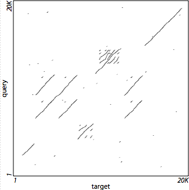
<p class=small>
<table class=holder align=center><tr><td>
<pre>
lastz target query --nochain
</pre>
</td></tr></table>
</td><td><span class=wtab></span></td><td>
Figure 5(b)
<p class=small>
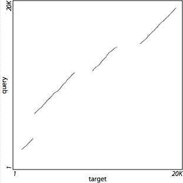
<p class=small>
<table class=holder align=center><tr><td>
<pre>
lastz target query --chain
</pre>
</td></tr></table>
</td></tr>
</tbody></table>


<!-- Gapped Extension -->
<div><a name="stage_gapped"></a></div>
<h3>Gapped Extension</h3>

<p>
Before the HSPs are extended further by allowing gaps, each HSP is first
reduced to a single anchor point;
this allows for the possibility that the optimal alignment may include gaps
within the region occupied by the HSP. The gap-free HSP is only an indication
of likely homology in that vicinity; other paths through the same region that
allow gaps may have a higher score, so we don't want to just extend from the
ends of the HSP. Instead we run the gapped algorithm from a single point that
we think is most likely to lie on the optimal path, namely the middle of the
highest-scoring 31-bp interval in the HSP. A more general (and expensive)
approach would be to examine all paths through the square region defined by the
HSP, instead of starting from a single anchor point.

<p>
Figure 6(a) illustrates the relationship of seeds, HSPs, and anchors. Heavy
lines are seeds, which were extended without gaps (see <a href="#overview"
>Overview</a>) to create HSPs (thin lines). Blue dots are anchors. Seeds with
no HSP shown (gray lines) had low-scoring extensions and were discarded at the
gap-free extension stage.

<p>
<table class=figure><tbody>
<tr><td>
Figure 6(a)
<p class=small>

</td><td><span class=wtab></span></td><td>
Figure 6(b)
<p class=small>
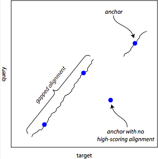
</td></tr>
</tbody></table>

<p>
The anchors are then processed in the order of their HSP&rsquo;s score (highest
first). Gapped extension is performed
independently in both directions from the anchor point, and the two resulting
alignments are joined at the anchor. If the total score meets the threshold
specified by the <code><a href="#option_gapthresh">&#8209;&#8209;gappedthresh</a></code>
option, the joined alignment is kept and passed to the next stage; otherwise it
is discarded. If the extension from one anchor happens to go through one or
more other anchors, the redundant anchors are dropped from the list.

<p>
Figure 6(b) shows the relationship of anchors and their gapped extensions.
The blue dots are the anchors from 6(a), which are extended in both directions
to form gapped alignments (squiggly lines; the gaps are too small to be visible
at this scale). One anchor had low-scoring extensions that did not meet the
threshold. Another had an extension that ran directly through a nearby anchor;
that anchor did not need to be processed separately.

<p>
The gapped extensions are computed using a typical
<a href="#adv_dp">dynamic programming</a> recurrence for affine gap alignment
(e.g. <a href="#myers_1989">[Myers 1989]</a> or
<a href="#gusfield_1997">[Gusfield 1997]</a>), beginning at the anchor and
terminating at the point with the highest cumulative score. The portion of
the DP matrix examined is reduced by disallowing low-scoring regions (see
<a href="#zhang_1998">[Zhang 1998]</a>): wherever the alignment score drops
below the peak score seen so far by more than the threshold specified in the
<code><a href="#option_ydrop">&#8209;&#8209;ydrop</a></code> option, the DP matrix is
truncated and no further cells are computed along that row or column.
By default the extension is then trimmed back to the location of the peak
score; thus the extension normally ends when all remaining sub-alignment
possibilities (paths in the DP matrix) begin with sections that score worse
than &minus;<code class=nopad>&lt;dropoff&gt;</code>. However for alignments
where the extension reaches the end of the sequence, you can suppress this
trimming by specifying the <code><a href="#option_noytrim">&#8209;&#8209;noytrim</a></code>
option, which is recommended when aligning short reads.

<p>
Figure 7 shows the effect of the y-drop threshold in more detail. Extension
is performed in two directions from the anchor (in this example, to the upper
right and lower left, because both sequences are on the positive strand).
The gray region is the portion of the DP matrix explored by the extension
algorithm; its boundary is formed by the points where the score dropped from
the maximum by more than the y-drop threshold.

<p>
<table class=figure><tbody>
<tr><td>
Figure 7
<p class=small>

</td></tr>
</tbody></table>


<!-- Back-end Filtering -->
<div><a name="stage_backend"></a></div>
<h3>Back-end Filtering</h3>

<p>
Whatever alignment blocks have made it through the above gauntlet are then
subjected to
identity, continuity, coverage and match count filtering (as specified by the
<code><a href="#option_identity">&#8209;&#8209;filter=identity</a></code>,
<code><a href="#option_continuity">&#8209;&#8209;filter=continuity</a></code>,
<code><a href="#option_coverage">&#8209;&#8209;filter=coverage</a></code>,
<code><a href="#option_filter_nmatch">&#8209;&#8209;filter=nmatch</a></code>,
<code><a href="#option_filter_nmismatch">&#8209;&#8209;filter=nmismatch</a></code>,
<code><a href="#option_filter_ngap">&#8209;&#8209;filter=ngap</a></code>and
<code><a href="#option_filter_cgap">&#8209;&#8209;filter=cgap</a></code> options,
respectively). Blocks that do not meet the specified range for each feature are
discarded.

<div><a name="define_identity"></a></div>
<p>
<dfn>Identity</dfn> is the fraction of aligned bases (excluding columns
containing gaps or <a href="#adv_non-acgt">non-ACGT characters</a>) that are
matches, expressed as a percentage. The numerator is the number of matches in
the alignment block, while the denominator is the number of matches plus the
number of mismatches.
Characters that differ only in upper vs. lower case are
counted as matches. Columns containing gaps or non-ACGT characters play no
part in this computation, and it is independent of the settings for
<code><a href="#option_ambign">&#8209;&#8209;ambiguous=n</a></code> and
<code><a href="#fmt_scoring_keywords">bad_score</a></code>. Identity cannot
be determined for alignments with <a href="#fmt_qdna">quantum DNA</a>, because
of the potential ambiguity of the symbols.

<div><a name="define_continuity"></a></div>
<p>
<dfn>Continuity</dfn> is the fraction of alignment columns that do not contain
gaps, expressed as a percentage. The numerator is the number of matches plus
mismatches in the alignment block, while the denominator is the number of
columns.

<div><a name="define_coverage"></a></div>
<p>
<dfn>Coverage</dfn> is the fraction of bases in the entire input sequence
(target or query, whichever is shorter) that are included in the alignment
block, expressed as a percentage. Such bases are aligned in the block to
either bases or gaps in the other sequence. Note that if there are multiple
sequences in the target and/or query, only the current one is considered;
however if an input sequence is spliced with runs of <code>N</code>s or
<code>X</code>s, then the combination of all its subsequences (including the
splice characters between them) is considered as one input sequence, because
LASTZ does not explicitly recognize the splicing.
Further, if a <a href="#adv_separator">separator character</a> is used,
again the combination of all subsequences is considered as one input sequence
(including the separator characters). Also note that each block&rsquo;s
coverage is computed independently of other blocks, and each must meet any
specified filter range by itself; blocks cannot be combined to meet coverage
requirements.

<div><a name="define_nmatch"></a></div>
<p>
<dfn>Match Count</dfn>, or <dfn>nmatch</dfn>, is the number of matched bases in
the alignment. Characters that differ only in upper vs. lower case are counted
as matches, columns containing gaps or non-ACGT characters are not. Match
count cannot be determined for alignments with <a href="#fmt_qdna">quantum
DNA</a>, because of the potential ambiguity of the symbols.

<div><a name="define_nmismatch"></a></div>
<p>
<dfn>Mismatch Count</dfn>, or <dfn>nmismatch</dfn>, is the number of aligned
bases in the alignment that are not matches. This includes substitutions as
well as non-ACGT characters (even if they are identical), but not gaps.
Mismatch count cannot be determined for alignments with
<a href="#fmt_qdna">quantum DNA</a>, because of the potential ambiguity of the
symbols.

<div><a name="define_ngap"></a></div>
<p>
<dfn>Gap Count</dfn>, or <dfn>ngap</dfn>, is the number of gaps in the block,
counting each run of gapped columns as a single gap.

<div><a name="define_cgap"></a></div>
<p>
<dfn>Gap Column Count</dfn>, or <dfn>cgap</dfn>, is the number of gaps in the
block, counting each gapped column as a separate gap.


<!-- Interpolation -->
<div><a name="stage_interpolation"></a></div>
<h3>Interpolation</h3>

<p>
Once the above stages have been performed, it is not uncommon to have regions
left over in which no alignment has been found. In the interpolation stage
(activated by the <code><a href="#option_inner">&#8209;&#8209;inner</a></code> option) we
repeat the seeding through gapped extension stages in these leftover regions,
at a presumably higher sensitivity. Using such high sensitivity from the
outset would be computationally prohibitive (due to the excessive number of
false, low-scoring matches), but is feasible on the smaller, leftover regions.

<p>
Another complete alignment round (seeding, gap-free extension, chaining, and
gapped extension, even if some of these were skipped in the main alignment;
but not back-end filtering) is performed in the small areas between the
alignment blocks found in the preceding main alignment stage. Only regions
within 20K bp from the endpoints of the passed-in alignment blocks are searched.
Seeding for this alignment requires a 7-bp exact match with no transitions, and
uses the specified scoring threshold for both its gap-free and gapped extension
sub-stages. (This threshold should generally be set lower than the
corresponding ones in the main alignment, in order to increase the sensitivity
of the interpolation.)  All other parameters are the same as those used for the
main alignment stages.

<p>
Figure 8 shows the operation in more detail. The alignment blocks resulting
from gapped extension are shown in 8(a) as squiggly lines. After interpolation,
in 8(b), additional alignment blocks have been discovered in the red areas.
Note that there are still some holes remaining, where these sequences just
don't align well.

<p>
<table class=figure><tbody>
<tr><td>
Figure 8(a)
<p class=small>
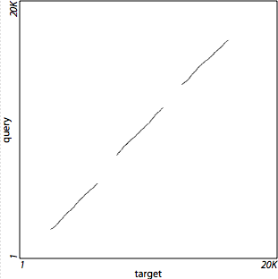
<p class=small>
<table class=holder align=center><tr><td>
<pre>
lastz target query
</pre>
</td></tr></table>
</td><td><span class=wtab></span></td><td>
Figure 8(b)
<p class=small>

<p class=small>
<table class=holder align=center><tr><td>
<pre>
lastz target query --inner=1000
</pre>
</td></tr></table>
</td></tr>
</tbody></table>


<!-- Alignment Output -->
<div><a name="stage_output"></a></div>
<h3>Alignment Output</h3>

<p>
The alignment blocks found by the preceding pipeline of stages are written to
<code>stdout</code> (or to a file specified with the
<code><a href="#option_output">&#8209;&#8209;output</a></code> option) in the requested
<a href="#option_format">format</a>.
These may be seeds, gap-free HSPs, or gapped local alignments, depending on
which stages were performed. There is no particular order to the alignment
blocks for an individual query sequence (e.g. they are <em>not</em> sorted by
score or position). However, since the query sequences are processed serially,
the blocks for each one will appear together in the output.


<!---->
<!-- File Formats -->
<!---->

<hr class=hdr>
<div><a name="formats"></a></div>
<h2>File Formats</h2>

<p>
LASTZ typically receives two sequence files and possibly a scoring file as
inputs, and produces an alignment file as output.
<p>
DNA sequences can be provided in <a href="#fmt_fasta">FASTA</a>,
<a href="#fmt_fastq">FASTQ</a>,
<a href="#fmt_nib">Nib</a>, or <a href="#fmt_2bit">2Bit</a> format, or
indirectly via an <a href="#fmt_hsx">HSX</a> index. These
sequences contain a series of <code>A</code>, <code>C</code>, <code>G</code>,
<code>T</code>, and <code>N</code> characters in upper or lower case.
Lower case indicates repeat-masked bases, while <code>N</code>s represent
unknown bases if the <code><a href="#option_ambign">&#8209;&#8209;ambiguous=n</a></code>
option is specified. (By default, a run of <code>N</code>s or <code>X</code>s
is used to separate sequences that have been catenated together for processing,
but this is now deprecated; see
<a href="#adv_non-acgt">Non-ACGT Characters, Splicing, and Separation</a>
for a discussion of the use of <code>N</code>s and <code>X</code>s.)  As an
alternative to DNA sequence, <a href="#fmt_qdna">quantum DNA</a> using an
abstract alphabet can be used as the query
(but not as the target).
<p>
The FASTA, FASTQ, 2Bit and HSX formats support more than one sequence within
the same file.
Files containing multiple sequences are normally only used as the query;
however invoking the <code><a href="#action_multiple">multiple</a></code>
action in the file&rsquo;s <a href="#seq_spec">sequence specifier</a> allows
them to be used for the target as well. Also, the
<code><a href="#action_subset">subset</a></code> action allows one or more
sequences to be selected from such a file.
<p>
The FASTQ format carries base-calling quality values as well as DNA.


<!-- FASTA -->
<div><a name="fmt_fasta"></a></div>
<h3>FASTA (sequence input)</h3>

<p>
FASTA format stores DNA sequences as plain text. The first line begins with
a <code>&gt;</code> followed by the name of the sequence, and all subsequent
lines contain nucleotide characters. The lines can be of any length.
If the file contains multiple sequences, each should start with its own
<code>&gt;</code> header line.
<span class=stab></span>
<a href="http://www.ncbi.nlm.nih.gov/blast/fasta.shtml"
>NCBI&nbsp;FASTA&nbsp;specification</a>
<p>
Note that although the official FASTA specification allows the character
<code>X</code> only in amino acid sequences, LASTZ accepts it in DNA sequences
as a splicing character. However, LASTZ does <em>not</em> currently support
IUPAC-IUB ambiguity codes other than <code>N</code> (such as <code>R</code>,
<code>W</code>, etc.),
beyond the treatment afforded by <code>&#8209;&#8209;ambiguous=iupac</code>.
<p>
A special case, non-conforming to the official standard, is made to allow a
special user-specified <a href="#adv_separator">separator character</a>.
Usually this will be <code>N</code> or <code>X</code>, but any other printable
ASCII character that suits the user&rsquo;s needs is acceptible.
<p>
It has become common for suppliers of FASTA files to pack a plethora of
additional information into a sequence&rsquo;s header line. This extra
information
can create difficulties for many sequence processing tools. For example,
headers often contain spaces but file formats such as <a href="#fmt_maf">MAF</a>
do not allow spaces in sequence names. To compensate for this, LASTZ provides
several options for extracting a concise name from sequence headers; see
<a href="#adv_mangling">Sequence Name Mangling</a> for details.


<!-- FASTQ -->
<div><a name="fmt_fastq"></a></div>
<h3>FASTQ (sequence input)</h3>

<p>
FASTQ format stores DNA and base-calling quality sequences as plain text, and
is primarily used to describe the results of short-read sequencing runs. As
explained in <a href="#cock_2009">[Cock 2009]</a>, this format has evolved
over time in the Bioformatics community. LASTZ only supports a subset of this
format, prohibiting line-wrapping within DNA or quality sequences.
<p>
Each sequence consists of four lines. The first line begins with a
<code>&#8209;</code> followed by the name of the sequence. The second line contains
nucleotide characters. The third line begins with a <code>+</code>, optionally
followed by the name of the sequence (which, if present must match that of the
first line). The fourth line contains quality characters.
<p>
There are several conflicting standards for encoding quality values in FASTQ
files, but (as of this writing) the differences are not relevant to LASTZ.
LASTZ currently does not make any computational use of the qualities, and
simply copies them into the output file when appropriate.
<p>
LASTZ treats IUPAC-IUB ambiguity codes in FASTQ files the same as those in
FASTA files.


<!-- Nib -->
<div><a name="fmt_nib"></a></div>
<h3>Nib (sequence input)</h3>

<p>
Nib format stores a single unnamed DNA sequence, packed as two bases per byte.
<span class=stab></span>
<a href="http://genome.ucsc.edu/FAQ/FAQformat#format8"
>UCSC&nbsp;Nib&nbsp;specification</a>


<!-- 2Bit -->
<div><a name="fmt_2bit"></a></div>
<h3>2Bit (sequence input)</h3>

<p>
2Bit format stores multiple DNA sequences, encoded as four bases per byte with
some additional information describing runs of masked bases or <code>N</code>s.
<span class=stab></span>
<a href="http://genome.ucsc.edu/FAQ/FAQformat#format7"
>UCSC&nbsp;2Bit&nbsp;specification</a>
<p>
Sequence names in 2Bit files have all the same problems as in FASTA files,
so <a href="#adv_mangling">Sequence Name Mangling</a> applies to these files
as well.


<!-- Quantum DNA -->
<div><a name="fmt_qdna"></a></div>
<h3>Quantum DNA (sequence input)</h3>

<p>
A quantum DNA file describes a single sequence of "quantum" DNA, which uses
an abstract, user-defined alphabet. Each position in the sequence is a byte
with a value in the range <code>0x01</code>..<code>0xFF</code>, which can
represent an ambiguity code, amino acid, or any other meaning you desire.
LASTZ does not try to interpret these in any way; it just aligns them as
abstract symbols corresponding to columns in the scoring matrix. Note that
the value <code>0x00</code> is prohibited.
<p>
The file itself is stored in a binary format described by the table below.
It can be written on either a big-endian or little-endian machine; LASTZ
determines the byte order of multi-byte fields by examining the magic number
at the start of the file.
Be sure to use the <code><a href="#action_quantum">quantum</a></code> action
in the file&rsquo;s <a href="#seq_spec">sequence specifier</a> to notify LASTZ
that it contains quantum DNA.

<p>
<table class=withlines><tbody>
<tr class=sectend><td>File Offset</td><td>Data</td><td>Meaning</td></tr>

<tr>
<td><code>0x00</code></td>
<td>
<code>C4&nbsp;B4&nbsp;71&nbsp;97</code>
<br><span class=stab></span> &mdash;or&mdash;
<br><code>97&nbsp;71&nbsp;B4&nbsp;C4</code>
</td>
<td>
Magic number indicating big-endian byte order.
<br>
<br>Magic number indicating little-endian byte order.
</td>
</tr>

<tr>
<td><code>0x04</code></td>
<td><code>00&nbsp;00&nbsp;02&nbsp;00</code></td>
<td>File conforms to version 2.0 of the Quantum DNA file format.</td>
</tr>

<tr>
<td><code>0x08</code></td>
<td><code>00&nbsp;00&nbsp;00&nbsp;14</code></td>
<td>Header length in bytes, including this field through the all-zero
field.</td>
</tr>

<tr>
<td><code>0x0C</code></td>
<td><code>xx&nbsp;xx&nbsp;xx&nbsp;xx</code></td>
<td><code class=nopad>SOFF</code>:<span class=ttab></span>
offset (from file start) to sequence data.</td>
</tr>

<tr>
<td><code>0x10</code></td>
<td><code>xx&nbsp;xx&nbsp;xx&nbsp;xx</code></td>
<td><code class=nopad>NOFF</code>:<span class=ttab></span>
offset (from file start) to name; 0 indicates no name.</td>
</tr>

<tr>
<td><code>0x14</code></td>
<td><code>xx&nbsp;xx&nbsp;xx&nbsp;xx</code></td>
<td><code class=nopad>SLEN</code>:<span class=ttab></span>
length of sequence data.</td>
</tr>

<tr>
<td><code>0x18</code></td>
<td><code>00&nbsp;00&nbsp;00&nbsp;00</code></td>
<td>Must be zero.</td>
</tr>

<tr>
<td><code>NOFF</code></td>
<td><span class=pad>&hellip;</span></td>
<td>Name:<span class=ttab></span>
a zero-terminated ASCII string.</td>
</tr>

<tr>
<td><code>SOFF</code></td>
<td><span class=pad>&hellip;</span></td>
<td>
Sequence data:<span class=ttab></span>
a series of <code>SLEN</code> bytes, each of which is one quantum symbol
in the sequence.
</td>
</tr>

</tbody></table>


<!-- Quantum Code File -->
<div><a name="fmt_qcode"></a></div>
<h3>Quantum Code File</h3>

<p>
This file is used with the <code><a href="#action_quantum">quantum</a></code>
action in a <a href="#seq_spec">sequence specifier</a>. It defines a mapping
from <a href="#fmt_qdna">quantum DNA</a> symbols to vectors of values for the
four nucleotides <code>A</code>, <code>C</code>, <code>G</code>, and
<code>T</code>. Usually these indicate the nucleotide probability distribution
for each symbol in the quantum alphabet. However, LASTZ doesn't interpret the
values, and only uses them to to augment the display of alignment blocks in the
<a href="#fmt_text">Human-Readable Text</a> output format.

<p>
Each line in the file gives the mapping for one symbol. Lines beginning
with a <code>#</code> are considered to be comments and are ignored, as are
blank lines. Data lines have five columns, separated by whitespace. The first
field contains the symbol, as either a single character or two hexadecimal
digits, while the remaining four fields contain values for
<code>A</code>, <code>C</code>, <code>G</code>, and <code>T</code>,
respectively. Each value can be either a single floating-point number or a
fraction (two floating-point numbers with a <code>/</code> between them,
without spaces). Any symbols in the quantum alphabet that aren't listed in
this file receive zeroes for all four values.

<p>
Here is an example.
<pre>
    # sym p(A|sym) p(C|sym) p(G|sym) p(T|sym)
      01  0.125041 0.080147 0.100723 0.694088
      02  0.111162 0.053299 0.025790 0.809749
      03  0.065313 0.007030 0.004978 0.922679
       ... more rows here ...
      FF  0.209476 0.014365 0.755682 0.020477
</pre>


<!-- Sequence Name File -->
<div><a name="fmt_names"></a></div>
<h3>Sequence Name File</h3>

<p>
This file is used with the <code><a href="#action_subset">subset</a></code>
action in a <a href="#seq_spec">sequence specifier</a> to select particular
sequences for processing. It consists of one sequence name per line. Lines
beginning with a <code>#</code> are considered to be comments and are ignored,
as are blank lines. Only the first whitespace-delimited word in any line is
read as the name; the rest of the line is ignored.
<p>
Note that when used in conjunction with a
<a href="#fmt_fasta">FASTA</a> or
<a href="#fmt_2bit">2Bit</a> file, the names must appear in the same order as
they appear in the corresponding sequence file, and must match the
<a href="#adv_mangling">mangled</a> name extracted from that file. When used
with an
<a href="#fmt_hsx">HSX</a> file, the names can be in any order but must
match names indexed in the HSX file.


<!-- Sequence Masking File -->
<div><a name="fmt_mask"></a></div>
<h3>Sequence Masking File</h3>

<p>

This file is used with the <code><a href="#action_xmask">xmask</a></code> and
<code><a href="#action_nmask">nmask</a></code> actions in a
<a href="#seq_spec">sequence specifier</a>.
It can also be created by using the 
<code><a href="#option_outputmasking">&#8209;&#8209;outputmasking=&lt;file&gt;</a></code>
or
<code><a href="#option_outputmaskingsoft">&#8209;&#8209;outputmasking:soft=&lt;file&gt;</a></code>
options.
It consists of one interval per
line, without sequence names. Lines beginning with a <code>#</code> are
considered to be comments and are ignored, as are blank lines. Only the first
two whitespace-delimited words in any line are interpreted as the interval; the
rest of the line is ignored.
<p>
Each interval describes a region to be masked, and consists of
<pre>
    &lt;start&gt; &lt;end&gt;
</pre>
Locations are one-based and inclusive on both ends (i.e., they use the
<a href="#adv_coords">origin-one, closed</a> position numbering system).
Note that the masking intervals are
<a href="#adv_coords">counted along the forward strand</a>, even if we are only
aligning to the reverse complement of the query specifier (i.e. for
<code><a href="#option_strand">&#8209;&#8209;strand</a>=minus</code>).

<p>
Here is an example. If the target sequence is hg18.chr1, this would mask the
5' UTRs from several genes. Note that the third column is neither required
nor interpreted by LASTZ, and acts as a comment.
<pre>
     884484  884542  NM_015658
     885830  885936  NM_198317
     891740  891774  NM_032129
     925217  925333  NM_021170
     938742  938816  NM_005101
     945366  945415  NM_198576
    1016787 1016808  NM_001114103
    1017234 1017346  NM_001114103
    1041303 1041486  NM_001114103
</pre>


<!-- Sequence Masking File, Three Fields -->
<div><a name="fmt_mask_3fields"></a></div>
<h3>Sequence Masking File, Three Fields</h3>

This file format is output only. LASTZ does not recognize input files in this
format.
<p>
This file is created by using the 
<code><a href="#option_outputmaskingplus">&#8209;&#8209;outputmasking+=&lt;file&gt;</a></code>
or
<code><a href="#option_outputmaskingplussoft">&#8209;&#8209;outputmasking+:soft=&lt;file&gt;</a></code>
options.
It consists of one interval per line, with sequence names.
<p>
Each interval describes a region that has been masked, and consists of
<pre>
    &lt;name&gt; &lt;start&gt; &lt;end&gt;
</pre>
Locations are one-based and inclusive on both ends (i.e., they use the
<a href="#adv_coords">origin-one, closed</a> position numbering system).
Note that the masking intervals are
<a href="#adv_coords">counted along the forward strand</a>, even if we are only
aligning to the reverse complement of the query specifier (i.e. for
<code><a href="#option_strand">&#8209;&#8209;strand</a>=minus</code>).


<!-- Scoring File -->
<div><a name="fmt_scoring"></a></div>
<h3>Scoring File</h3>


<p>
This file is used with the <code><a href="#option_scores">&#8209;&#8209;scores</a></code>
option to specify a set of (mostly) scoring-related parameters en masse.
The score set consists of a substitution matrix and other settings. The other
settings come first and are individually explained in the
<a href="#fmt_scoring_keywords">table</a> below. All settings are optional,
and most of them have exact correspondence to command-line options and the same
defaults (unless otherwise specified in the table). Command-line settings
always override settings in this file. Any line may end with a comment
(<code>#</code> is the comment character).

<div><a name="matrix_labels"></a></div>
<p>
In the matrix, rows correspond to characters in the target sequence, while
columns correspond to characters in the query. Matrix labels can be specified
either as single ASCII characters or as two-digit hexadecimal values in the
range <code>01</code>..<code>FF</code> (do not add a leading <code>0x</code>).
Note that the value <code>00</code> is not allowed.
The rows and columns of the matrix need not have the same set of labels, so
for example, a matrix might describe scoring between the 4-letter DNA alphabet
and the 15-letter ambiguity alphabet. Any labels other than <code>A</code>,
<code>C</code>, <code>G</code>, and <code>T</code> (or their hex equivalents)
are treated as <a href="#fmt_qdna">quantum DNA</a>.
<p>
Score values can be floating-point if the <code>lastz_D</code> version of the
executable is used instead of <code>lastz</code>.

<p>
Here is an example:
<pre>
    # This matches the default scoring set for BLASTZ
    
    bad_score          = X:-1000  # used for sub['X'][*] and sub[*]['X']
    fill_score         = -100     # used when sub[*][*] is not defined
    gap_open_penalty   =  400
    gap_extend_penalty =   30

         A     C     G     T
    A   91  -114   -31  -123
    C -114   100  -125   -31
    G  -31  -125   100  -114
    T -123   -31  -114    91
</pre>


<p>
BLASTZ scoring files are also accepted. These only contain a substitution
matrix, and row labels must be absent (they are assumed to be the same as the
column labels). No other settings are allowed.
<pre>
       A     C     G     T
      91  -114   -31  -123
    -114   100  -125   -31
     -31  -125   100  -114
    -123   -31  -114    91
</pre>

<div><a name="fmt_scoring_keywords"></a></div>
<p class=large>
<table class=withlines><tbody>
<tr class=sectend><td>Keyword</td><td>Setting</td><td>Meaning</td></tr>

<tr>
<td><code>bad_score</code></td>
<td>
<code>&lt;score&gt;</code><br>
<code>&lt;row&gt;:&lt;col&gt;:&lt;score&gt;</code>
</td>
<td>
This score fills a single row and column of the substitution matrix, so that
any occurrences of the corresponding characters are severely penalized. By
default the "bad" character for both the target and query is <code>X</code>
for DNA sequences or the null byte (<code>00</code>) for
<a href="#fmt_qdna">quantum DNA</a> sequences, and the associated score is
&minus;1000.
<p class=small>
This option allows you to change these characters and/or the score they receive.
The &lt;row&gt; and &lt;col&gt; fields are character codes (as explained
<a href="#matrix_labels">above</a>); if they are absent <code>X</code> (and/or
<code>00</code>) is assumed. Note that these characters are case sensitive. The
bad_score row and column cannot be removed entirely, but you can achieve the
same effect by setting them to invalid characters that will never occur in your
sequences. There is no corresponding command-line option.
</td>
</tr>

<tr>
<td><a name="scorefile_fillscore"></a><code>fill_score</code></td>
<td><code>&lt;score&gt;</code></td>
<td>
This is used as a default for all cells of the scoring matrix that are not
otherwise set (either by the user or by LASTZ&rsquo;s defaults). This is the
score used for <code>N</code>s (unless
<code><a href="#option_ambign">&#8209;&#8209;ambiguous=n</a></code> is specified on the
command line).
<p class=small>
The default value is &minus;100. There is no corresponding command-line option.
</td>
</tr>

<tr>
<td><code>gap_open_penalty</code></td>
<td><code>&lt;penalty&gt;</code></td>
<td>
This is identical to the <code>&lt;open&gt;</code> field of the
<code><a href="#option_gap">&#8209;&#8209;gap</a></code> command line option.
</td>
</tr>

<tr>
<td><code>gap_extend_penalty</code></td>
<td><code>&lt;penalty&gt;</code></td>
<td>
This is identical to the <code>&lt;extend&gt;</code> field of the
<code><a href="#option_gap">&#8209;&#8209;gap</a></code> command line option.
</td>
</tr>

<tr>
<td><code>step</code></td>
<td><code>&lt;offset&gt;</code></td>
<td>
This is identical to the
<code><a href="#option_step">&#8209;&#8209;step</a></code> command line option.
</td>
</tr>

<tr>
<td><code>seed</code></td>
<td><code>&lt;strategy&gt;</code></td>
<td>
This corresponds to the <a href="#options_seeding"><code>&#8209;&#8209;seed</code> and
<code>&#8209;&#8209;transition</code></a> command line options.
<code>&lt;strategy&gt;</code> must be one of the following, with no spaces:
	<br><span class=mtab></span><code>12of19,transition</code>
	<br><span class=mtab></span><code>12of19,notransition</code>
	<br><span class=mtab></span><code>14of22,transition</code>
	<br><span class=mtab></span><code>14of22,notransition</code>
</td>
</tr>

<tr>
<td><code>ball</code></td>
<td><code>&lt;score&gt;</code><br>
    <code>&lt;percentage&gt;%</code></td>
<td>
This is identical to the
<code><a href="#option_ball">&#8209;&#8209;ball</a></code> command line option.
</td>
</tr>

<tr>
<td><code>x_drop</code></td>
<td><code>&lt;dropoff&gt;</code></td>
<td>
This is identical to the
<code><a href="#option_xdrop">&#8209;&#8209;xdrop</a></code> command line option.
</td>
</tr>

<tr>
<td><code>hsp_threshold</code></td>
<td><code>&lt;score&gt;</code></td>
<td>
This is identical to the
<code><a href="#option_hspthresh">&#8209;&#8209;hspthresh</a></code> command line option,
except that it does not currently support the
<code>&#8209;&#8209;hspthresh=top&lt;basecount&gt;</code> or
<code>&#8209;&#8209;hspthresh=top&lt;percentage&gt;%</code> variants.
</td>
</tr>

<tr>
<td><code>y_drop</code></td>
<td><code>&lt;dropoff&gt;</code></td>
<td>
This is identical to the
<code><a href="#option_ydrop">&#8209;&#8209;ydrop</a></code> command line option.
</td>
</tr>

<tr>
<td><code>gapped_threshold</code></td>
<td><code>&lt;score&gt;</code></td>
<td>
This is identical to the
<code><a href="#option_gapthresh">&#8209;&#8209;gappedthresh</a></code> command line option.
</td>
</tr>

</tbody></table>


<!-- Inference Control File -->
<div><a name="fmt_inference"></a></div>
<h3>Inference Control File</h3>

<p>
When LASTZ is asked to infer substitution scores and/or gap penalties from the
input sequences (e.g. via the <code><a href="#option_infer">&#8209;&#8209;infer</a></code>
option), this file is used to set parameters that control the inference
process.

<p>
Here is an example (note that currently the parsing of this file is less
flexible than some of the others, and <code>*</code> is the only arithmetic
operator supported):

<p>
<pre>
    # base the inference on alignments in the middle half by identity
    min_identity       = 25.0%    # 25th percentile
    max_identity       = 75.0%    # 75th percentile

    # scale scores so max substitution score will be 100, and only use
    # alignments scoring at least as well as 20 ideal matches
    inference_scale    = 100      # max substitution score
    hsp_threshold      = 20*inference_scale
    gapped_threshold   = hsp_threshold

    # allow substitution score inference to iterate at most 20 times;
    # don't perform gap penalty inference -- instead hardwire gap penalties
    # relative to max substitution
    max_sub_iterations = 20
    max_gap_iterations = 0
    gap_open_penalty   = 4*inference_scale
    gap_extend_penalty = 0.3*inference_scale

    # use all seedword positions (don't sample)
    step               = 1

    # adjust for entropy when qualifying HSPs
    entropy            = on
</pre>

<p>
<code>min_identity</code> and <code>max_identity</code> specify the range of
sequence <a href="#define_identity">identity</a> upon which inference is based;
only alignment blocks within this range contribute to the inference. If the
value ends with a percent sign, it represents a percentile of the identity
distribution over all the blocks; otherwise it is a fixed percent identity
value. For example, <code>min_identity=70</code> and
<code>max_identity=90</code> indicates that blocks with identity ranging from
70 to 90 percent will be used, while <code>min_identity=25%</code> and
<code>max_identity=75%</code> indicates that half of the blocks will be used
(from the middle of the distribution).
The defaults are <code>min_identity=0</code> and <code>max_identity=100</code>
(i.e., no blocks are excluded from inference due to percent identity).

<p>
<code>inference_scale</code> specifies a value for the largest substitution
score (i.e., the score for the best match). All other scores are scaled
proportionally. If this is set to <code>none</code>, the scores will be
log-odds using base 2 logarithms.
The default is <code>inference_scale=100</code>.

<p>
<code>hsp_threshold</code> and <code>gapped_threshold</code> correspond to
the command line <code><a href="#option_hspthresh">&#8209;&#8209;hspthresh</a></code> and
<code><a href="#option_gapthresh">&#8209;&#8209;gappedthresh</a></code> options.
The defaults are <code>hsp_threshold=3000</code> and
<code>gapped_threshold=hsp_threshold</code>.

<p>
<code>max_sub_iterations</code> and <code>max_gap_iterations</code> specify
limits on the number of inference iterations that will be performed. For
example, if you only want a substitution scoring matrix, you can set
<code>max_gap_iterations=0</code>.
The defaults are <code>max_sub_iterations=30</code> and
<code>max_gap_iterations=0</code>.

<p>
<code>gap_open_penalty</code> and <code>gap_extend_penalty</code> correspond to
the command line
<code><a href="#option_gap">&#8209;&#8209;gap=[&lt;open&gt;,]&lt;extend&gt;</a></code>
option. These are used for the first iteration of gap-scoring inference.
The defaults are <code>gap_open_penalty=3.25*worst_substitution</code> and
<code>gap_extend_penalty=0.24375*worst_substitution</code>.

<p>
<code>step</code> corresponds to the command line
<code><a href="#option_step">&#8209;&#8209;step</a></code> option. A large step, e.g.
<code>step=100</code>, could potentially speed up the inference process.
Ideally, this would base the inference on a sample of only one percent of the
whole. However, the sample actually ends up larger than that and is biased
toward HSPs that are either longer or have a lower substitution rate. This
happens because sampling occurs at the seed level, and such HSPs generally
have more seeds. Future versions of LASTZ may include a means to compensate
for this bias.
The default is <code>step=1</code>.

<p>
<code>entropy</code> corresponds to the command line
<code><a href="#option_entropy">&#8209;&#8209;entropy</a></code> option. Legal values are
<code>on</code> or <code>off</code>. If on, sequence entropy is incorporated
when filtering HSPs. The default is <code>entropy=on</code>.

<p>
The value of <code>worst_substitution</code> cannot be set directly.
Instead, it is computed from the initial scoring matrix. It is the minimum
score in the scoring matrix for any of the symbols A, C, G or T (equivalently,
the most negative score or the maximum penalty).

<p>
Note that these parameters apply to the inference process only. If the
corresponding command line options are also set, those will apply for the
final, "real" alignment stages (and will also override the inferred values if
there is a conflict), but will not affect the inference itself.
Inference cannot be used in conjunction with a scores file.


<!-- HSX -->
<div><a name="fmt_hsx"></a></div>
<h3>HSX (Hashed Sequence Index)</h3>

<p>
An HSX file is an index of sequences in other files, allowing fast random
access to those sequences. The current implementation of LASTZ only supports
indexing <a href="#fmt_fasta">FASTA</a> files. Future versions may include
<a href="#fmt_nib">Nib</a> and <a href="#fmt_2bit">2Bit</a> sequences.
The following is a brief overview of the
file format. For more detailed information, see the 
<span class=stab></span>
<a href="hsx_format.html">HSX&nbsp;specification</a>

<p>
An HSX file can be created using the <code>build_fasta_hsx.py</code> utility
(included in the <code>tools</code> directory of the LASTZ distribution), using
a command like this:
<pre>
    build_fasta_hsx sequences.fa [more_sequences.fa ...] > index.hsx
</pre>

<p>
It is important that the HSX file has the extension <code>.hsx</code> and
resides in the same directory as the files being indexed. Further, the files
being indexed must have the extension <code>.fa</code> or <code>.fasta</code>.
These rules allow LASTZ to determine the sequence file type when it reads the
HSX file, and to locate the files containing the sequences.

<p>
The index file includes names to be used for the sequences, which do not have
to match the original names or headers in the sequence files. This feature
obviates the need for LASTZ to perform <a href="#adv_mangling">sequence name
mangling</a>, so most of those actions are not supported for HSX files.
Instead, it is the responsibility of the program that creates the index to
select suitable names.


<!-- Target Capsule File -->
<div><a name="fmt_capsule"></a></div>
<h3>Target Capsule File</h3>

<p>
A target capsule file is essentially a memory dump of several internal data
structures related to the target sequence and the target seed word position
table. At the present time the authors do not wish to create an official
specification for this format, but please see
<a href="#adv_capsule">Using Target Capsule Files</a> for information on
how to create and utilize them.


<!-- Segment File -->
<div><a name="fmt_chores"></a></div>
<h3>Alignment Chores File</h3>

<p>

<p>
A chores file describes a list of sequence interval pairs, indicating that the
alignment process is to be restricted to those intervals.

<p>
The file contains two intervals per line, one from the target and one from the
query, with sequence names. Optionally, the query strand can be specified, as
well as an identifying tag. Lines beginning with a <code>#</code> are
considered to be comments and are ignored, as are blank lines. <code>#</code>
can also be used to put comments at the end of lines, but must be preceeding by
whitespace.

<p>
Each line looks like
<pre>
    &lt;name1&gt; &lt;start1&gt; &lt;end1&gt; &lt;name2&gt; [&lt;start2&gt; &lt;end2&gt;] [&lt;strand2&gt;] [id=&lt;tag&gt;] [#&lt;comment&gt;]
</pre>
where &lt;name1&gt;, etc. correspond to the target sequence and &lt;name2&gt;,
etc. correspond to the query. Fields are delimited by whitespace.

<p>
When the target name is irrelevant (i.e. when there is only one name in the
target sequence file), <code>*</code> can replace &lt;name1&gt;. Similarly, if
we don't have a target (or query) subrange, <code>* *</code> can be used in
place of start and end. Note that the query subrange and strand are optional,
as is the tag. When the strand is not specified, both strands are searched.

<p>
Locations are one-based and inclusive on both ends, i.e.
<a href="#adv_coords">origin-one, closed</a> (thus the interval "154 228" has
length 75 and is preceded by 153 bases in its sequence). All target intervals
are on the positive strand. All query intervals are
<a href="#adv_coords">counted along the forward strand</a>, regardless of which
strand is specified.

<p>
Target sequence names may appear in any order. Sequence names for the query
must appear in the same order as they do in the query file. Because alignment
output ordering is on a chore-by-chore basis, it is good practice to include
all positive strand intervals for a query before any negative strand intervals
for that query. Some downstream tools may depend on this ordering.

<p>
The tag can be any short string the user wants to associate with the chore
(excluding whitespace). As of this writing, the only use of the tag field is
that it can be copied to the output file by use of the 
<code><a href="#fmt_gen_chore">chore</a></code> field for
<code><a href="#option_format">&#8209;&#8209;format=general</a></code>.

<p>
Here is an example.
<pre>
    chr9  116517410 116518409  READ_00070 *   *   + id=DFZ
    chr3  157707345 157708344  READ_00070 *   *   + id=EDZ
    chr9  112944437 112945436  READ_00078 101 200 + id=FAC
    chr1  3377578   3378577    READ_00078 *   *   + id=LLH
    chr2  175604671 175605670  READ_00078 *   *   - id=DFZ
    chr2  230613705 230614704  READ_00079           id=DFZ
    chr9  20387422  20388421   READ_00355 *   *   + id=DFZ
    chr8  16396215  16397214   READ_00355 *   *   + id=MNQ
    chr14 *         *          READ_00355 *   *   - id=MNQ
    chr4  50534096  50535095   READ_00355 *   *   - id=QOY
    chr6  58308766  58309765   READ_00376 *   *   - id=EDZ
    chr5  172249269 172250268  READ_00376 *   *   - id=FAC
    chr9  123860065 123861064  READ_00376 *   *   - id=MNQ
</pre>


<!-- Segment File -->
<div><a name="fmt_segments"></a></div>
<h3>Segment File</h3>

<p>
A segment file describes a list of segments representing gap-free alignments.
This list is either produced internally by LASTZ as a result of the
gap-free extension stage (see <a href="#overview">Overview</a>), or read from
a user-supplied file via the
<code><a href="#option_segments">&#8209;&#8209;segments</a></code> option. The latter
causes LASTZ to skip the indexing, seeding, and gap-free extension stages and
begin with the chaining stage (or the next specified stage, if chaining is not
requested).

<p>
The file contains two intervals per line, one from the
target and one from the query, with sequence names. Lines beginning with a
<code>#</code> are considered to be comments and are ignored, as are blank
lines. <code>#</code> can also be used to put comments at the end of lines.

<p>
Each line looks like
<pre>
    &lt;name1&gt; &lt;start1&gt; &lt;end1&gt; &lt;name2&gt; &lt;start2&gt; &lt;end2&gt; &lt;strand2&gt; [&lt;score&gt;] [#&lt;comment&gt;]
</pre>
where &lt;name1&gt;, etc. correspond to the target sequence and &lt;name2&gt;,
etc. correspond to the query. Fields are delimited by whitespace.

<p>
Locations are one-based and inclusive on both ends,
i.e. <a href="#adv_coords">origin-one, closed</a> (thus the interval "154 228"
has length 75 and is preceded by 153 bases in its sequence). Negative strand
intervals are measured from the 5' end of the query&rsquo;s <em>negative</em>
strand
(corresponding to the <em>rightmost</em> end of the given query sequence,
i.e. <a href="#adv_coords">counted along the reverse strand</a>). All target
intervals are on the positive strand. The two intervals must have the same
length (since these alignments are gap-free).
 The score is used to determine the
processing order during gapped extension.
Segments without scores are given a score of zero.

<p>
Query sequence names must appear in the same order as they do in the query file.
For each query sequence, normally all positive strand intervals must appear
before any negative strand intervals.
Sequence names for the target may appear in any
order, and are only meaningful if the
<code><a href="#action_multiple">multiple</a></code> action is used; otherwise
they are ignored. Intervals with names not found in the target or query are not
allowed. In cases where sequence names are either unknown or of no importance
(e.g. when all sequences in the file have the same name), a <code>*</code> can
be used as a generic sequence name.


<p>
Here is an example.
<pre>
    R36QBXA37A3EQH 151 225  Q81JBBY19D81JM 14  88 +  6875
    R36QBXA37D4L6V  26 100  Q81JBBY19D81JM 10  84 +  6808
    R36QBXA37EVLNU  19  93  Q81JBBY19D81JM  7  81 +  6842
    R36QBXA37CEBPD   8  81  Q81JBBY19D81JM  9  82 +  7108
    R36QBXA37BLO6X 132 205  Q81JBBY19D81JM 11  84 -  7339
    R36QBXA37A2W3P 162 214  Q81JBBY19D81JM  2  54 -  5024
    R36QBXA37A9395  62 136  Q81JBBY19A323K 18  92 +  7231
    R36QBXA37DNC74  18  82  Q81JBBY19A323K  2  66 +  6418
    R36QBXA37CTR26  83 167  Q81JBBY19ASA7F 19 103 +  8034
    R36QBXA37C2TAC  95 181  Q81JBBY19ASA7F 15 101 +  8272
</pre>


<!-- LAV -->
<div><a name="fmt_lav"></a></div>
<h3>LAV (alignment output)</h3>

<p>
LAV is the format produced by BLASTZ, and is the default. It reports the
alignment blocks grouped by "contig" (chromosome, scaffold, read, etc.) and
strand, and describes them by listing the coordinates of gap-free segments.
This format is compact because it does not include the nucleotides, but
consequently interpretation usually requires access to the original sequence
files, and it is not easy for humans to read.
<span class=stab></span>
<a href="lav_format.html">LAV&nbsp;specification</a>
<span class=stab></span>
(same specification at <a href="http://www.bx.psu.edu/miller_lab/">PSU</a>)

<p>
The option <code><a href="#option_format">&#8209;&#8209;format=lav+text</a></code> adds
<a href="#fmt_text">textual output</a> for each alignment block (in the same
format as the <code>&#8209;&#8209;format=text</code> option), intermixed with the LAV
format. Such files are unlikely to be recognized by any LAV-reading program.


<!-- AXT -->
<div><a name="fmt_axt"></a></div>
<h3>AXT (alignment output)</h3>

<p>
AXT is a pairwise alignment format popular at UCSC and PSU.
<span class=stab></span>
<a href="http://genome.ucsc.edu/goldenPath/help/axt.html"
>UCSC&nbsp;AXT&nbsp;specification</a>
<p>
The option <code><a href="#option_format">&#8209;&#8209;format=axt+</a></code> reports
additional statistics with each block, in the form of comments. The exact
content of these comment lines may change in future releases of LASTZ.


<!-- MAF -->
<div><a name="fmt_maf"></a></div>
<h3>MAF (alignment output)</h3>

<p>
MAF is a multiple alignment format developed at UCSC. The MAF files produced
by LASTZ have exactly two sequences per block: the first row always comes from
the target sequence, and the second from the query.
<span class=stab></span>
<a href="http://genome.ucsc.edu/FAQ/FAQformat#format5"
>UCSC&nbsp;MAF&nbsp;specification</a>
<p>
The option <code><a href="#option_format">&#8209;&#8209;format=maf+</a></code> reports
additional statistics with each block, in the form of comments. The exact
content of these comment lines may change in future releases of LASTZ.
<p>
The option <code><a href="#option_format">&#8209;&#8209;format=maf-</a></code> suppresses
the MAF header and any comments. This makes it suitable for concatenating
output from multiple runs.
<p>
UCSC&rsquo;s MAF should not be confused with other formats that have the same
name. For example, the MIRA sequence assembler project has a file format named
MAF, but it is a completely unrelated file format and is not supported by LASTZ. 


<!-- SAM -->
<div><a name="fmt_sam"></a></div>
<h3>SAM (alignment output)</h3>


<p>
SAM is a pairwise alignment format used primarily for short-read mapping, and
supported by the SAMtools programming suite. This format is described in
<a href="#li_2009">[Li 2009]</a>, and as of May 2011 a specification for it
can be found at the <a href="http://samtools.sourceforge.net/">SAMtools page</a>
at SourceForge.

<p>
For SAM files, LASTZ assumes that the target sequence is the reference and
that query sequence(s) are short reads. For alignments that don't reach the
end of a query, <code><a href="#option_format">&#8209;&#8209;format=sam</a></code> uses
"hard clipping", while <code><a href="#option_format">&#8209;&#8209;format=softsam</a></code>
uses "soft clipping". See the section on "clipped alignment" in the SAM
specification for an explanation of what this means.

<p>
The options <code><a href="#option_format">&#8209;&#8209;format=sam-</a></code> and
<code><a href="#option_format">&#8209;&#8209;format=softsam-</a></code> suppress the SAM
header lines. This makes them suitable for concatenating output from multiple
runs.


<!-- CIGAR -->
<div><a name="fmt_cigar"></a></div>
<h3>CIGAR (alignment output)</h3>

<p>
<p>
CIGAR is an acronym for Concise Idiosyncratic Gapped Alignment Report, a
pairwise alignment format defined originally by the
<a href="http://www.ebi.ac.uk/~guy/exonerate/">Exonerate</a> alignment program.
The format has since been adapted in different forms, as
<a href="http://www.ensembl.org/Help/Results?_referer=;result=glossary_13">ensembl cigar format</a>
and as an
<a href="http://samtools.sourceforge.net/SAM1.pdf">extended cigar string</a>
in <a href="http://samtools.sourceforge.net">SAMtools</a>. For
<code><a href="#option_format">&#8209;&#8209;format=cigar</a></code>, LASTZ implements
Exonerate CIGAR. LASTZ implements other CIGAR variants for
<code><a href="#option_format">&#8209;&#8209;format=sam</a></code>
and as fields for <code><a href="#option_format">&#8209;&#8209;format=general</a></code>.

<p>
<a href="http://www.ebi.ac.uk/~guy/exonerate/exonerate.man.html/">Exonerate CIGAR</a>
format does not include nucleotides; instead it describes the locations of
indels (but not substitutions) using run-length encoding. An alignment is
characterized as runs of <code>M</code> (match and/or substitution),
<code>I</code> (query contains a base not in target), and <code>D</code>
(target contains a base not in query). Each run is encoded by the letter code,
whitespace, and the length;  multiple runs are separated by whitespace. The
format also includes positional information for the start of the alignment. An
<code><a href="#ex_cigar">example</a></code> is shown at the end of this
section. While there seems to be no complete, definitive specification for
CIGAR, the CIGAR files produced by LASTZ are believed to match the format
produced by Exonerate.

<p>
In the other variants of CIGAR, whitespace is removed and the order of the
letter code and length are reversed (length appears before letter code). In
some variants the length is omitted if it is 1;  in other variants 
<code>M</code> runs are divided into <code>=</code> (match) and <code>X</code>
(substitution). SAMtools extended cigar strings allow <code>S</code> and
<code>H</code> runs to describe clipping operations for short sequences.
LASTZ implements combinations of these variants where appropriate;  details
are described in
<code><a href="#fmt_gen_cigar">&#8209;&#8209;format=general:cigar</a></code>,
<code><a href="#fmt_gen_cigarx">&#8209;&#8209;format=general:cigarx</a></code>
and <code><a href="#fmt_sam">&#8209;&#8209;format=sam</a></code>.

<p>
<div><a name="ex_cigar"></a></div>
To understand the differences between different types of CIGAR strings,
consider the following alignment of a short 61-bp query to a longer target.

<p>
<pre>
    target:  ...GAT<b>TAAGAGTCTGTCCGACCTTCTTCT---GGGTTTACCGAAGCCCACTTAGCTGATA</b>TTCGA...
                   ||||||||||||||||X|||||||   |||||||  X||||||||||||||||||
     query:     ACC<b>TAAGAGTCTGTCCGACATTCTTCTACGGGGTTTA--TAAGCCCACTTAGCTGATA</b>AGGTT
                   &uarr;      <b>1         2         3           4         5</b>    &uarr;    6
                012<b>3456789012345678901234567890123456--7890123456789012345</b>67890

</pre>

<p>
For <code>&#8209;&#8209;format=cigar</code>, the alignment would be described by this line:
<pre>
    cigar: query 3 56 + target &lt;start&gt; &lt;end&gt; &lt;strand&gt; &lt;score&gt; M 24 I 3 M 7 D 2 M 19
</pre>

<p>
For <code><a href="#fmt_gen_cigar">&#8209;&#8209;format=general:cigar</a></code>, the
alignment path would be described by this field:
<pre>
    24M3I7M2D19M
</pre>

<p>
For <code><a href="#fmt_gen_cigarx">&#8209;&#8209;format=general:cigarx</a></code>, the
alignment path would be described by this field:
<pre>
    16=X7=3I7=2DX18=
</pre>

<p>
For <code><a href="#fmt_sam">&#8209;&#8209;format=sam</a></code>, the alignment path would
be described by this field:
<pre>
    3H24M3I7M2D19M5H
</pre>


<!-- BLASTN -->
<div><a name="fmt_blastn"></a></div>
<h3>BLASTN (alignment output)</h3>


<p>
The BLASTN format reports pairwise alignments in a format similar to
NCBI&rsquo;s BLASTN program. Output is modeled upon version 2.2.24+ of the
standalone version of BLASTN available from
<a href="ftp://ftp.ncbi.nlm.nih.gov/blast/executables/blast+/LATEST/">
NCBI&rsquo;s BLAST ftp site</a>. Output should be similar that produced by the
command
<pre>
    blastn -task blastn -db &lt;target&gt; -query &lt;query&gt; -outfmt 7
</pre>
It is important to realize that a couple of the fields, specifically
<code>evalue</code> and <code>bit score</code>, are written as crude
approximations of the value that BLASTN would produce, as described below.

<p>
The format is tab-delimited with one alignment reported per line, plus an
additional header. Here is some sample output:
<pre>
    # lastz --format=blastn
    # Query: orange
    # Database: apple
    # Fields: query id, subject id, % identity, alignment length, mismatches, gap opens, q. start, q. end, s. start, s. end, evalue, bit score
    orange apple 82.14  2072 142 67 2    1926 103  2093 0     1972
    orange apple 100.00 14   0   0  1906 1919 2086 2073 0.043 26.5
    orange apple 93.33  15   1   0  1763 1777 2004 1990 0.53  22.9
</pre>

<p>
Most of the fields correspond directly to fields available in the
<a href="#fmt_general">General</a> output format. These are
<code>query id=name2</code>,
<code>subject id=name1</code>,
<code>%identity=blastid%</code>,
<code>alignment length=ncolumn</code>,
<code>mismatches=nmismatch</code>,
<code>gap opens=ngap</code>,
<code>q.start=start2</code>,
<code>and q.end=end2</code>.
The fields <code>s.start</code> and <code>s.end</code> are nearly equivalent
to  <code>start1</code> and <code>end1</code>, but when the alignment is to the
reverse strand, they appear in the other order (i.e.
<code>s.start</code> &gt; <code>s.end</code>).

<p>
The two remaining fields, evalue and bit score, are <em>crudely estimated</em>
from LASTZ&rsquo;s <code>score</code> field, but <em>are not strictly
correct</em>. Further, these approximations assume that default LASTZ scores
are used. Otherwise they are unlikely to be good approximations. The
approximation formulas are
<pre>
     evalue    = 3.0e9*exp(-0.01421*score)
     bit score = 0.0205*score
</pre>


<!-- Differences -->
<div><a name="fmt_diffs"></a></div>
<h3>Differences (alignment output)</h3>

<p>
LASTZ&rsquo;s Differences format reports each difference between target and query
on a separate line, where a <dfn>difference</dfn> is any indel or run of
mismatches. It is intended for comparisons between close sequences, such as
when comparing reads from a human individual to the human reference genome, or
reads from a bacterial strain to a reference sequence for the same bacterium.
The format is a tab-delimited table with one line per difference; it is
well-suited for use with spreadsheets and the
<a href="http://www.r-project.org/">R statistical package</a>.

<p>
The columns reported in this format are the name, start &amp; end of the
difference, strand, and overall size for the target; the name, start &amp; end
of the difference, strand, and overall size for the query; the text of the
difference in the target, then in the query; and finally the text of the
complete alignment block containing the difference, first in the target, then
in the query. Intervals are <a href="#adv_coords">origin-zero, half-open</a>
and <a href="#adv_coords">counted along the forward strand</a>.

<p>
The example below compares output in this format to similar results using the
<a href="#fmt_general">General</a> output format for the same input sequences.
For the Differences output, column numbers have been added for discussion (they
are not in the actual output file). Each line in the output represents
<em>slight</em> evidence that a mutation occurred changing the target sequence
(chr22 here) to the query sequence (column 6). Columns 11 and 12 indicate the
specific mutation that has putatively occurred. For example, the first line
suggests that either an A has been
inserted into
chr22 at position 14485783, or an A has been
deleted from
EAYGRGI02GQ0SL at position 167 (actually, between positions 166 and 167).
Note that there are three differences reported for
EAYGRGI02GQ0SL, so it appears on three lines. The fifth line shows a putative
SNP at chr22 position 15234401, with a C in the reference and a G in the read,
while the seventh line shows evidence for an inversion of neighboring bases
(AG vs. GA).
Note that there are no lines for EAYGRGI01BIQCW, indicating a
perfect match for that block (i.e., no differences).

<p>
Sample output for <code>&#8209;&#8209;format=differences</code>.
<pre>
     (1)     (2)      (3)  (4)   (5)         (6)       (7) (8) (9) (10) (11)(12)  (13)     (14)
    chr22 14485783 14485784 + 49691432  EAYGRGI02GQ0SL 167 167  +  303   A   -   TGAGA... TGAGA...
    chr22 14485791 14485792 + 49691432  EAYGRGI02GQ0SL 174 174  +  303   A   -   TGAGA... TGAGA...
    chr22 14485843 14485843 + 49691432  EAYGRGI02GQ0SL 225 226  +  303   -   A   TGAGA... TGAGA...
    chr22 14731895 14731895 + 49691432  EAYGRGI01EAV19 228 229  -  298   -   A   CTTCT... CTTCT...
    chr22 15234401 15234402 + 49691432  EAYGRGI02H5ZGS 99  100  -  180   C   G   CGAAT... CGAAT...
    chr22 15255536 15255537 + 49691432  EAYGRGI01BTT7U 56  56   -  267   A   -   TTTGC... TTTGC...
    chr22 15255552 15255554 + 49691432  EAYGRGI01BTT7U 71  73   -  267   AG  GA  TTTGC... TTTGC...
    chr22 15255617 15255618 + 49691432  EAYGRGI01BTT7U 136 136  -  267   A   -   TTTGC... TTTGC...
    chr22 15255624 15255625 + 49691432  EAYGRGI01BTT7U 142 142  -  267   A   -   TTTGC... TTTGC...
</pre>

<p>
Sample output for
<code>&#8209;&#8209;format=general:name1,zstart1,end1,strand1,size1,name2,zstart2+,end2+,strand2,size2,text1,text2</code>.
<pre>
    chr22 14485616 14485920 + 49691432  EAYGRGI02GQ0SL 0   303  +  303   TGAGA... TGAGA...
    chr22 14731668 14731964 + 49691432  EAYGRGI01EAV19 0   297  -  298   CTTCT... CTTCT...
    chr22 15234302 15234482 + 49691432  EAYGRGI02H5ZGS 0   180  -  180   CGAAT... CGAAT...
    chr22 15238845 15239070 + 49691432  EAYGRGI01BIQCW 0   225  -  225   TGGAA... TGGAA...
    chr22 15255480 15255750 + 49691432  EAYGRGI01BTT7U 0   267  -  267   TTTGC... TTTGC...
</pre>

<p>
(This example aligns reads from the genome of James Watson (available from
<a href="http://www.ncbi.nlm.nih.gov/Traces/home">NCBI&rsquo;s trace archive</a>
by querying for CENTER_NAME = 'CSHL' and CENTER_PROJECT = 'Project Jim')
vs. the human reference genome hg18.)


<!-- R Dotplot -->
<div><a name="fmt_rdotplot"></a></div>
<h3>R Dotplot (alignment output)</h3>

<p>
This is a home-grown format designed to facilitate plotting the alignment
blocks with the <a href="http://www.r-project.org/">R statistical package</a>.
Alignments are reduced to a series of gap-free segments, each of which is
written in three lines as shown below. Endpoints are
<a href="#adv_coords">origin-one, closed</a>, and alignments on the reverse
strand have
<code>&lt;..._query_end&gt;</code> less than
<code>&lt;..._query_start&gt;</code> so that R will draw them in the reverse
(slope=&minus;1) orientation.

<p>
<pre>
    &lt;target_name&gt;            &lt;query_name_&gt;
    &lt;segment1_target_start&gt;  &lt;segment1_query_start&gt;
    &lt;segment1_target_end&gt;    &lt;segment1_query_end&gt;
    NA                       NA
    &lt;segment2_target_start&gt;  &lt;segment2_query_start&gt;
    &lt;segment2_target_end&gt;    &lt;segment2_query_end&gt;
    NA                       NA
     ...
</pre>

<p>
The file can then be plotted in R with commands like these:
<pre>
    dots = read.table("your_file",header=T)
    plot(dots,type="l")
</pre>

<p>
When the the query file contains more than one sequence, alignments for each
query sequence are written as shown above. This includes a new header line
for each query. Unfortunately the simple R commands shown above will not
work to plot a file with more than one query.

<p>
When the the target file contains more than one sequence, alignments for target
sequences are intermixed in the output file. In this case the entire target
is treated as a single sequence, and the target positions reported are relative
to this concatenated sequence. This can still be plotted using the simple R
commands above, but the target sequences will appear as one concatenated
sequence in the plot.


<!-- Human-Readable Text -->
<div><a name="fmt_text"></a></div>
<h3>Human-Readable Text (alignment output)</h3>

<p>
This textual output is intended to be read by people rather than programs.
Each alignment block is displayed with gap characters and a row of
match/transition characters, and lines are wrapped at a reasonable width
to allow printing to paper. The exact format of this output may change in
future releases of LASTZ, so programs are better off reading more stable
formats like <a href="#fmt_lav">LAV</a>, <a href="#fmt_axt">AXT</a>, or
<a href="#fmt_maf">MAF</a>.


<!-- General Output -->
<div><a name="fmt_general"></a></div>
<h3>General Output (alignment output)</h3>

<p>
LASTZ&rsquo;s General format is a tab-delimited table with one line per
alignment block and configurable columns. This format is well-suited for use
with spreadsheets and the
<a href="http://www.r-project.org/">R statistical package</a>,
and for <a href="#adv_shell">filtering with shell commands</a>.

<p>
The syntax for this option is:
<pre>
    &#8209;&#8209;format=general[:&lt;fields&gt;]
</pre>
where <code>&lt;fields&gt;</code> is a comma-separated list of field names in
any desired order, with no spaces. For example
<pre>
    &#8209;&#8209;format=general:nmismatch,name1,strand1,start1,end1,name2,strand2,start2,end2
</pre>
will report each aligned interval pair and the number of mismatches in the
alignment of that pair, like this:
<pre>
    #nmismatch name1   strand1 start1 end1 name2    strand2 start2 end2
    41         apple8  +       130    930  orange2  -       119    931
    35         apple15 +       113    930  orange3  +       87     909
    52         apple4  +       131    952  orange5  -       111    932
    46         apple7  +       131    930  orange10 +       111    909
    37         apple12 +       131    930  orange11 -       111    909
    38         apple3  +       127    939  orange12 +       107    926
</pre>

<p>
The recognized field names are shown in the table below. Positions (<code>start</code> and
<code>end</code> fields) are counted from the 5' end of the aligning strand,
unless otherwise indicated in the table.
Please see <a href="#adv_coords">Interval Coordinates</a> for more information
about the position numbering systems used in LASTZ.

<p>
If the field list is absent, the following
fields are printed, in this order:&nbsp;
<code>score</code>, <code>name1</code>, <code>strand1</code>,
<code>size1</code>, <code>zstart1</code>, <code>end1</code>,
<code>name2</code>, <code>strand2</code>, <code>size2</code>,
<code>zstart2</code>, <code>end2</code>, <code>identity</code>,
<code>coverage</code>.&nbsp;

<p>
The option <code>&#8209;&#8209;format=mapping</code> is a shortcut for <code>&#8209;&#8209;format=general</code>
with the following fields:&nbsp;
<code>name1</code>, <code>zstart1</code>, <code>end1</code>,
<code>name2</code>, <code>strand2</code>, <code>zstart2+</code>,
<code>end2+</code>, <code>identity</code>, <code>coverage</code>,
<code>cigarx-</code>.

<p>
Field names are normally included as column headers in the first row of the
output, preceded by a <code>#</code>. The options
<code><a href="#option_format">&#8209;&#8209;format=general-[:&lt;fields&gt;]</a></code>
and <code>&#8209;&#8209;format=mapping-</code> suppress column headers. This makes
them suitable for concatenating output from multiple runs.

<p>
<table class=withlines><tbody>
<tr class=sectend><td>Field</td><td>Meaning</td></tr>

<tr>
<td><code>score</code></td>
<td>Score of the alignment block. The scale and meaning of this number will
vary, depending on the final stage performed and other command-line options.
</td>
</tr>

<tr>
<td><code>name1</code></td>
<td>Name of the target sequence.</td>
</tr>

<tr>
<td><code>number1</code></td>
<td>
<a name="fmt_gen_number1"></a>
Number of the target sequence within the target file. The first sequence
is numbered zero.
</td>
</tr>

<tr>
<td><code>strand1</code></td>
<td>Target sequence strand, either "+" or "&minus;".</td>
</tr>

<tr>
<td><code>size1</code></td>
<td>Size of the entire target sequence.</td>
</tr>

<tr>
<td><code>start1</code></td>
<td>Starting position of the alignment block in the target, origin-one.</td>
</tr>

<tr>
<td><code>zstart1</code></td>
<td>Starting position of the alignment block in the target, origin-zero.</td>
</tr>

<tr>
<td><code>end1</code></td>
<td>
Ending position of the alignment block in the target, expressed either as
origin-one closed or origin-zero half-open (the ending value is the same in
both systems).
</td>
</tr>

<tr>
<td><code>length1</code></td>
<td>Length of the alignment block in the target (excluding gaps).</td>
</tr>

<tr>
<td><code>text1</code></td>
<td>Aligned characters in the target, including gap characters.
 <code>align1</code> can be used as a
synonym for <code>text1</code>.
</td>
</tr>

<tr>
<td><code>qalign1</code></td>
<td>
<a name="fmt_gen_qalign1"></a>
The target quality sequence (if there is one) correpsonding to aligned
characters. Gaps are indicated as a tilde (<code>~</code>).
</td>
</tr>

<tr>
<td><code>nucs1</code></td>
<td>
<a name="fmt_gen_nucs1"></a>
The entire target sequence, after modifications due to specifier actions such
as <code>subrange</code> or <code>softmask</code>.
<p class=small>
This is output in order along the target&rsquo;s forward strand, regardless of
the strand of the alignment.
</td>
</tr>

<tr>
<td><code>quals1</code></td>
<td>
<a name="fmt_gen_quals1"></a>
The entire target quality sequence (if there is one), after modifications due
to specifier actions such as <code>subrange</code>.
<p class=small>
This is output in order along the target&rsquo;s forward strand, regardless of
the strand of the alignment.
</td>
</tr>

<tr>
<td><code>name2</code></td>
<td>Name of the query sequence.</td>
</tr>

<tr>
<td><code>number2</code></td>
<td>
<a name="fmt_gen_number2"></a>
Number of the query sequence within the query file. The first sequence
is numbered zero.
</td>
</tr>

<tr>
<td><code>strand2</code></td>
<td>Query sequence strand, either "+" or "&minus;".</td>
</tr>

<tr>
<td><code>size2</code></td>
<td>Size of the entire query sequence.</td>
</tr>

<tr>
<td><code>start2</code></td>
<td>Starting position of the alignment block in the query, origin-one.</td>
</tr>

<tr>
<td><code>zstart2</code></td>
<td>Starting position of the alignment block in the query, origin-zero.</td>
</tr>

<tr>
<td><code>end2</code></td>
<td>
Ending position of the alignment block in the query, expressed either as
origin-one closed or origin-zero half-open (the ending value is the same in
both systems).
</td>
</tr>

<tr>
<td><code>start2+</code></td>
<td>
Starting position of the alignment block in the query, counting along the query
sequence&rsquo;s positive strand (regardless of which query strand was aligned),
origin-one.
Note that if <code>strand2</code> is "&minus;", then this is the other end of
the block from <code>start2</code>.
</td>
</tr>

<tr>
<td><code>zstart2+</code></td>
<td>
Starting position of the alignment block in the query, counting along the query
sequence&rsquo;s positive strand (regardless of which query strand was aligned),
origin-zero.
Note that if <code>strand2</code> is "&minus;", then this is the other end of
the block from <code>zstart2</code>.
</td>
</tr>

<tr>
<td><code>end2+</code></td>
<td>
Ending position of the alignment block in the query, counting along the query
sequence&rsquo;s positive strand (regardless of which query strand was aligned),
expressed either as origin-one closed or origin-zero half-open (the ending
value is the same in both systems).
Note that if <code>strand2</code> is "&minus;", then this is the other end of
the block from <code>end2</code>.
</td>
</tr>

<tr>
<td><code>length2</code></td>
<td>Length of the alignment block in the query (excluding gaps).</td>
</tr>

<tr>
<td><code>text2</code></td>
<td>Aligned characters in the query, including gap characters.
 <code>align2</code> can be used as a
synonym for <code>text2</code>.
</td>
</tr>

<tr>
<td><code>qalign2</code></td>
<td>
<a name="fmt_gen_qalign2"></a>
The query quality sequence (if there is one) correpsonding to aligned
characters. Gaps are indicated as a tilde (<code>~</code>).
</td>
</tr>

<tr>
<td><code>nucs2</code></td>
<td>
<a name="fmt_gen_nucs2"></a>
The entire query sequence, after modifications due to specifier actions such
as <code>subrange</code> or <code>softmask</code>.
<p class=small>
This is output in order along the query&rsquo;s forward strand, regardless of
the strand of the alignment.
</td>
</tr>

<tr>
<td><code>quals2</code></td>
<td>
<a name="fmt_gen_quals2"></a>
The entire query quality sequence (if there is one), after modifications due
to specifier actions such as <code>subrange</code>.
<p class=small>
This is output in order along the query&rsquo;s forward strand, regardless of
the strand of the alignment.
</td>
</tr>

<tr>
<td><code>nmatch</code></td>
<td>
<a href="#define_nmatch">Match count</a>, the number of aligned bases in the
block that are matches.
</td>
</tr>

<tr>
<td><code>nmismatch</code></td>
<td>
<a href="#define_nmismatch">Mismatch count</a>, the number of aligned bases in
the block that are mismatches (substitutions).
</td>
</tr>

<tr>
<td><code>ncolumn</code></td>
<td>
Number of columns in the block. This includes matches, mismatches
(substitutions), and gaps.
</td>
</tr>

<tr>
<td><code>npair</code></td>
<td>
Number of aligned bases in the block that are matches or mismatches
(substitutions).
</td>
</tr>

<tr>
<td><code>ngap</code></td>
<td>
<a href="#define_ngap">Gap count</a>, the number of gaps in the block, counting
each run of gapped columns as a single gap.
</td>
</tr>

<tr>
<td><code>cgap</code></td>
<td>
<a href="#define_cgap">Gap column count</a>, the number of gaps in the block,
counting each gapped column as a separate gap.
</td>
</tr>

<tr>
<td><code>diff</code></td>
<td>
Differences between what would be written for <code>text1</code> and
<code>text2</code>. Matches are written as <code>.</code> (period), transitions
as <code>:</code> (colon), transversions as <code>X</code>, and gaps as
<code>-</code> (hyphen).
</td>
</tr>

<tr>
<td><code>cigar</code></td>
<td>
<a name="fmt_gen_cigar"></a>
A <a href="#fmt_cigar">CIGAR</a>-like representation of the alignment&rsquo;s
path through the
<a href="#adv_dp">DP matrix</a>. This is the short representation,
without spaces, described in the
<a href="http://may2005.archive.ensembl.org/Docs/wiki/html/EnsemblDocs/CigarFormat.html"
>Ensembl&nbsp;CIGAR&nbsp;specification</a>.
<p class=small>
For more information, see the section about CIGAR and its
<code><a href="#ex_cigar">example</a></code>.
</td>
</tr>

<tr>
<td><code>cigarx</code></td>
<td>
<a name="fmt_gen_cigarx"></a>
Same as <code>cigar</code>, but uses a newer syntax that distinguishes matches
from substitutions and omits the run length when it is 1.
<p class=small>
For more information, see the section about <a href="#fmt_cigar">CIGAR</a> and
its <code><a href="#ex_cigar">example</a></code>.
</td>
</tr>

<tr>
<td><code>identity</code></td>
<td>
Fraction of aligned bases in the block that are matches (see
<a href="#define_identity">Identity</a>). This is written as two fields.
The first field is a fraction, written as <code>&lt;n&gt;/&lt;d&gt;</code>.
The second field contains the same value, computed as a percentage.
</td>
</tr>

<tr>
<td><code>idfrac</code></td>
<td>
Fraction of aligned bases in the block that are matches (see
<a href="#define_identity">Identity</a>), written as a fraction.
</td>
</tr>

<tr>
<td><code>id%</code></td>
<td>
Fraction of aligned bases in the block that are matches (see
<a href="#define_identity">Identity</a>), written as a percentage.
</td>
</tr>

<tr>
<td><code>blastid%</code></td>
<td>
Fraction of the alignment block that is matches, as would be reported by NCBI
BLAST. The numerator is the number of matches, and the denominator is the
number of alignment columns. The value is written as a percentage but without
a percent sign.
<p class=small>
This is <em>not</em> the same as LASTZ normally reports for identity, since
NCBI BLAST includes gaps in the computation.
</td>
</tr>

<tr>
<td><code>continuity</code></td>
<td>
Rate of non-gaps (non-indels) in the alignment block (see
<a href="#define_continuity">Continuity</a>). This is written as two fields.
The first field is a fraction, written as <code>&lt;n&gt;/&lt;d&gt;</code>.
The second field contains the same value, computed as a percentage.

<tr>
<td><code>confrac</code></td>
<td>
Rate of non-gaps (non-indels) in the alignment block (see
<a href="#define_continuity">Continuity</a>), written as a fraction.
</td>
</tr>

<tr>
<td><code>con%</code></td>
<td>
Rate of non-gaps (non-indels) in the alignment block (see
<a href="#define_continuity">Continuity</a>), written as a percentage.
</td>
</tr>

<tr>
<td><code>coverage</code></td>
<td>
<a name="fmt_gen_coverage"></a>
Fraction of the entire input sequence (target or query, whichever is shorter)
that is covered by the alignment block (see
<a href="#define_coverage">Coverage</a>). This is written as two fields.
The first field is a fraction, written as <code>&lt;n&gt;/&lt;d&gt;</code>.
The second field contains the same value, computed as a percentage.
</td>
</tr>

<tr>
<td><code>covfrac</code></td>
<td>
Fraction of the entire input sequence (target or query, whichever is shorter)
that is covered by the alignment block (see
<a href="#define_coverage">Coverage</a>), written as a fraction.
</td>
</tr>

<tr>
<td><code>cov%</code></td>
<td>
Fraction of the entire input sequence (target or query, whichever is shorter)
that is covered by the alignment block (see
<a href="#define_coverage">Coverage</a>), written as a percentage.
</td>
</tr>

<tr>
<td><code>diagonal</code></td>
<td>
The diagonal of the start of the alignment block in the
<a href="#adv_dp">DP matrix</a>, expressed as an identifying number
<code>start1-start2</code>.
</td>
</tr>

<tr>
<td><code>shingle</code></td>
<td>
A measurement of the <a href="#adv_shingle">shingle overlap</a> between the
target and the query. This is intended for the case where both the target and
query are relatively short, and their ends are expected to overlap.
</td>
</tr>

<tr>
<td><code>number</code></td>
<td>
<a name="fmt_gen_number"></a>
The alignment number, counted as alignments are written to output. The count
begins at one.
</td>
</tr>

<tr>
<td><code>znumber</code></td>
<td>
<a name="fmt_gen_znumber"></a>
The alignment number, counted as alignments are written to output. The count
begins at zero.
</td>
</tr>

<tr>
<td><code>chore</code></td>
<td>
<a name="fmt_gen_chore"></a>
The identifying tag corresponding to the chore that produced the alignment.
The tag is defined in the <a href="#fmt_chores">alignment chores file</a>.
</td>
</tr>

</tbody></table>


<!-- Other Output -->
<div><a name="fmt_other"></a></div>
<h3>Other Output</h3>

<p>
LASTZ includes support for other output formats which are intended mainly
for the convenience of the developers. If you have specific questions,
please <a href="#intro">contact us</a>.


<!---->
<!-- Advanced Topics -->
<!---->

<hr class=hdr>
<div><a name="advanced"></a></div>
<h2>Advanced Topics</h2>


<!-- Aligning to Whole Genomes -->
<div><a name="adv_whole_genome"></a></div>
<h3>Aligning to Whole Genomes</h3>

<p>
Aligning queries to a whole genome can be accomplished in a single run of
<code>lastz</code> by using the
<code><a href="#action_multiple">multiple</a></code> action in the
target file&rsquo;s <a href="#seq_spec">sequence specifier</a>. This causes
<code>lastz</code> to load all of the target&rsquo;s sequences into memory.
However, sequence indexing inside <code>lastz</code> is limited to 31-bit
positions, which limits the overall size of the target to 2 gigabases.

<p>
To facilitate larger genomes, an additional executable (<code>lastz_32</code>)
can be built. The two executables are basically the same; the only difference
is that sequence indexing in <code>lastz</code> is limited to 31-bit positions,
while <code>lastz_32</code> uses 32-bit positions. The use of smaller positions
in <code>lastz</code> reduces memory usage and improves performance, but limits
the size of the target sequence to 2 gigabases.

<p>
To build the <code>lastz_32</code> executable, enter the following commands
from bash or a similar command-line shell (Solaris users should substitute
<code>gmake</code> for <code>make</code>). This will build the executable and
copy it into your <code>installDir</code>.
<pre>
    cd &lt;somepath&gt;/lastz-distrib-X.XX.XX/src
    make lastz_32
    make install_32
</pre>

<p>
<code>lastz_32</code> can then be used as a replacement for <code>lastz</code>
in any command line, e.g.
<pre>
    lastz_32 hg18.fa[multiple] galGal3.fa \
      --notransition --step=20 --nogapped \
      --progress=1 \
      --format=maf > hg18_vs_galGal3.maf
</pre>


<!-- Adjacent Indels -->
<div><a name="adv_adjacent_indels"></a></div>
<h3>Adjacent Indels</h3>

<p>
Occasionly the sequences being compared contain unrelated segments of DNA
flanked by segments that are related. If the unrelated segments are long enough
(and
different enough) that two gaps are cheaper than a series of substitutions,
the optimal-scoring alignment should contain adjacent indels, like this:
<p>
<pre>
    ...ATAAATTATTATTATTAAATTTTA-------------------CCCCCCCCCCCCCCCCCCTTTTTA...
    ...ATAAATTATTATTATTAAATTTTAGGGGGGGGGGGGGGGGGAG-------------------TTTTA...
</pre>

<p>
However, by default, lastz does not allow an insertion to follow a deletion, or
vice versa. So it ends up reporting an alignment like this instead:
<p>
<pre>
    ...ATAAATTATTATTATTAAATTTT------------------ACCCCCCCCCCCCCCCCCCTTTTTA...
    ...ATAAATTATTATTATTAAATTTTAGGGGGGGGGGGGGGGGGA------------------GTTTTA...
</pre>

<p>
The latter alignment doesn't make any sense biologically. However, to maintain
backward compatibility with previous versions of LASTZ (and BLASTZ), the default
version of LASTZ will produce the latter alignment.

<p>
Users that want to allow allow alignments with adjacent indels can build any
LASTZ executable with <code>allowBackToBackGaps</code> enabled. This is
accomplished by adding <code>allowBackToBackGaps=ON</code> to the
<code>make</code> command line, like this:

<p>
<pre>
    make clean
    make lastz_32 allowBackToBackGaps=ON
    make install_32
</pre>


<!-- Interval Coordinates -->
<div><a name="adv_coords"></a></div>
<h3>Interval Coordinates</h3>

<p>
The biological research community has established several competing standards
describing intervals on a strand of DNA. Different programs often use
different standards. Since LASTZ supports several input and output formats, it
is inevitable that it uses more than one way of describing an interval. We
describe the different conventions here.

<p>
For this discussion, suppose we have a 50-nucleotide strand of DNA as follows:
<p>
<pre>
        origin-one, closed: 1234567890<b>1</b>234567<b>8</b>90123456789012345678901234567890
                                      &darr;      &darr;
                     5' &gt;&gt;&gt; CGACCTTACG<b>ATTACCTA</b>CTTAACACGTAAACTGAGGGATCAAAAGGAAA &gt;&gt;&gt; 3'
                                      &uarr;       &uarr;
    origin-zero, half-open: 0123456789<b>0</b>1234567<b>8</b>9012345678901234567890123456789
</pre>

<p>
Note that since this is DNA it has 5' and 3' ends;
we assume that all input sequences follow the standard practice of listing the
bases with the 5' end on the left.
Here we've highlighted the subsequence <code><b>ATTACCTA</b></code> so we can
discuss how to describe the interval it occupies. There are two commonly used
ways to do this. Both count from 5' to 3' (left to right). One way,
<dfn>origin-one</dfn>, starts counting from one. The other way,
<dfn>origin-zero</dfn>, starts counting from zero. So in origin-one,
<code>ATTACCTA</code> begins at position 11, while in origin-zero it begins at
position 10.

<p>
To describe the ending position, there are also two commonly used methods.
One way is <dfn>closed</dfn>, in which the position of the last nucleotide is
given. The other is <dfn>half-open</dfn>, in which the position following the
last nucleotide is given. These are theoretically independent of the
conventions for the origin, but in practice only two of the combinations are
commonly used: <dfn>origin-one, closed</dfn> and
<dfn>origin-zero, half-open</dfn>. In the former, <code>ATTACCTA</code> is
said to occupy the interval (11,18), while in the latter it is said to occupy
the interval (10,18). Notice that only the first number changes between these
two paradigms; the second number stays the same.

<p>
Another factor to consider is that DNA is usually double stranded, which would
look like this:
<p>
<pre>
        along forward:        12345678901234567890123456789012345678901234567890
                                        &darr;      &darr;
       forward strand: 5' &gt;&gt;&gt; CGACCTTACG<b>ATTACCTA</b>CTTAACACGTAAACTGAGGGATCAAAAGGAAA &gt;&gt;&gt; 3'
    complement strand: 3' &lt;&lt;&lt; GCTGGAATGC<b>TAATGGAT</b>GAATTGTGCATTTGACTCCCTAGTTTTCCTTT &lt;&lt;&lt; 5'
                                        &uarr;      &uarr;
        along reverse:        0987654321<b>0</b>987654<b>3</b>21098765432109876543210987654321
</pre>

<p>
In some cases it makes sense to refer to the interval along the complement
strand. For example, if the above sequence was a query and the target
contained <code>TAGGTAAT</code>, how should the query position of an alignment
of those two be described?  One way would be to still refer to the interval
along the forward strand (which we also call the <dfn>plus</dfn> or
<dfn>positive</dfn> strand), and just indicate that in fact it was the reverse
complement of that interval that aligned. We call this
<dfn>counting along the forward strand</dfn>. Another way is to count from the
other end, from the 5' end of the complement strand (which we also call the
<dfn>reverse</dfn>, <dfn>minus</dfn> or <dfn>negative</dfn> strand). We call
this <dfn>counting along the reverse strand</dfn>, and for clarity we might add
"from its 5' end". In this example, if we were using origin-one, closed
counting, we would say that <code>TAGGTAAT</code> occurs at (33,40) along the
reverse strand.
Unless noted otherwise (e.g. for the
<a href="#fmt_rdotplot">R Dotplot</a> output format), when counting along the
forward or reverse strand LASTZ swaps the interval&rsquo;s endpoints if
necessary, so
the position called <code>start</code> is numerically &le; the position called
<code>end</code>. This is a common convention, but there are other programs
that leave them unswapped.

<p>
Note that when counting positions all characters in the sequence are counted,
including runs of <code>N</code>s or <code>X</code>s and even invalid
characters. This is important so that other programs can use the reported
positions to index directly into the original sequences.


<!-- Non-ACGT Characters, Splicing, and Separation -->
<div><a name="adv_non-acgt"></a></div>
<h3>Non-ACGT Characters, Splicing, and Separation</h3>
<p>
The handling of characters other than <code>A</code>, <code>C</code>,
<code>G</code>, and <code>T</code> in sequences that are supposed to represent
DNA is problematic.
In ordinary (non-quantum) DNA sequences, LASTZ currently supports two of these,
<code>N</code> and <code>X</code>. They can either be present in the original
input file (except that the <a href="#fmt_nib">Nib</a> and
<a href="#fmt_2bit">2Bit</a> formats are incapable of containing
<code>X</code>s), or added by using an
<code><a href="#action_xmask">xmask</a></code> or
<code><a href="#action_nmask">nmask</a></code> action in the
<a href="#seq_spec">sequence specifier</a>.
LASTZ can also be configured to tolerate the other IUPAC-IUB ambiguity codes
(<code>B, D, H, K, M, R, S, V, W,</code> and <code>Y</code>), and to recognize
a special user-specified <a href="#adv_separator">separator character</a>.

<p>
Many database sequences contain <code>N</code>s to represent bases for which
the actual nucleotide is not known (at least, not known with any level of
confidence). <code>N</code>s (or better, <code>X</code>s) can also be used to
mask out regions that have previously been identified as being of no interest,
and therefore should not be aligned. And unfortunately, there is also a
tradition of using strings of <code>X</code>s or <code>N</code>s to splice
together multiple sequences to gain efficiency when dealing with programs that
were limited to operating on a single sequence.

<p>
Although splicing was useful in BLASTZ, it is no longer needed for LASTZ.
Since LASTZ can handle multiple target sequences (via the
<code><a href="#action_multiple">multiple</a></code> action in the target
file&rsquo;s sequence specifier), it is preferred that users <em>not</em>
resort to splicing.
If splicing is necessary, the preferred method is to specify a
<a href="#adv_separator">separator character</a> to tell LASTZ explicitely
where the splices have occurred.

<p>
Replacing BLASTZ with LASTZ in an existing
pipeline may still involve spliced sequences, so LASTZ&rsquo;s default
interpretation of non-ACGT characters is the same as BLASTZ&rsquo;s:&nbsp;
<code>X</code>s are excluded from the alignment seeding stage, and are so
severely penalized by alignment scoring that they will not <em>normally</em>
appear in
any alignment. <code>N</code>s are also excluded from seeding, and are
penalized about the same as a transversion mismatch. Specifically, any
substitution with <code>X</code> is scored as &minus;1000, and any substitution
with anything else (other than <code>A</code>, <code>C</code>, <code>G</code>,
or <code>T</code>) is scored as &minus;100.
Note that you have to put "enough" <code>X</code>s or <code>N</code>s between
the sequences so that no alignment block will cross the splice. This can be
tricky, since gap scoring is only dependent on the length of the gap and not on
the characters in the gap. So if a gap the same length as the splice is not
penalized more than the <a href="#option_ydrop">y-drop</a> setting, the
alignment may hop the splice. As a rough guideline, a splice length of 50 is
usually enough with the default settings, but this is not guaranteed.

<p>
This default treatment of non-ACGT characters also works well when
<code>X</code>s or <code>N</code>s are used to mask out regions that should not
be aligned. However, it is inappropriate when the sequences contain
<code>N</code>s to represent ambiguous bases. To handle this case, LASTZ
provides the <code><a href="#option_ambign">&#8209;&#8209;ambiguous=n</a></code> option,
which causes substitutions with <code>N</code> to be scored as zero.
Additionally, the <code><a href="#option_iupac">&#8209;&#8209;ambiguous=iupac</a></code>
option causes the other IUPAC-IUB ambiguity codes
(<code>B, D, H, K, M, R, S, V, W,</code> and <code>Y</code>) to be treated this
same as an ambiguous <code>N</code>. The two <code>&#8209;&#8209;ambiguous</code> options
also allow you to specify rewards and penalties for matches and mismatches
involving ambiguous characters.

<p>
In either case, non-ACGT characters are ignored during the seeding stage.
Only seed words that consist entirely of <code>A</code>, <code>C</code>,
<code>G</code>, and/or <code>T</code> are involved in seeding, even if the
non-ACGT characters occur in "don't-care" positions in the seed pattern.

<p>
The score values described above can be changed if a
<a href="#fmt_scoring">scoring file</a> is specified. The &minus;1000 score
is called <code>bad_score</code> and the &minus;100 score is called
<code>fill_score</code>. Further, which character is considered "bad" (by
default this is <code>X</code>) can also be specified in the scoring file, and
can actually be different between the target and query. <em>Throughout this
document, when we refer to the character <code>X</code> appearing in a DNA
sequence, we generally mean the character specified as "bad", which defaults to
<code>X</code></em>.

<p>
<a name="adv_separator"></a>
Splicing, or more correctly <em>separation</em>, can also be accomplished by
placing a specific character between subsequences, then using the
<code><a href="#action_separator">separator=&lt;character&gt;</a></code>
action. LASTZ will then break the sequence into the prescribed subsequences
and prevent any alignment from crossing the boundaries.

<p>
<a href="#fmt_qdna">Quantum DNA</a> sequences are different: they use an
arbitrary, user-defined alphabet of symbols, so the above-mentioned special
treatments for <code>N</code> and <code>X</code> do not apply. The default
"bad" character for quantum sequences is the null byte (<code>00</code>
hexadecimal), which is not even allowed in the sequence; however it can be
changed to one of the valid alphabet symbols via the scoring file. There is
no analog of ambiguous <code>N</code>s for quantum sequences, as typically
every symbol has some level of ambiguity.


<!-- Sequence Name Mangling -->
<div><a name="adv_mangling"></a></div>
<h3>Sequence Name Mangling</h3>

<p>
Often the names in the input sequence files are inconvenient for downstream
processing, or create problems with certain output formats. This is further
complicated by the fact that some input formats (most notably
<a href="#fmt_nib">Nib</a>) do not contain sequence names, so in those cases
a name must be derived from the filename. LASTZ provides several choices for
naming the input sequences. These alternatives are mutually exclusive; only
one can be used at a time for a particular input file.

<p>
Internally, LASTZ handles the naming task in two phases. First, it creates a
<dfn>full header</dfn> for the sequence. If the input format provides a name
or header, that becomes the full header. Otherwise, the full header is
constructed from the file name.

<p>
In the second phase, LASTZ shortens the full header to a nickname. If the full
header starts with a file name, any path prefix is removed, and commonly-used
file extension suffixes are also removed (<code>.fa</code>, <code>.fasta</code>,
<code>.nib</code>, <code>.2bit</code>). Then by default, LASTZ uses the first
word (composed of characters other than whitespace, vertical bar, or colon) of
the remaining string as the sequence name. Thus a
<a href="#fmt_fasta">FASTA</a> header like
"<code>&gt;&nbsp;~someuser/human/hg18/chr1.fa&nbsp;Human&nbsp;Chromosome&nbsp;1</code>"
is shortened to simply <code>chr1</code>.

<p>
The actions
<code><a href="#action_darkspace">nameparse=darkspace</a></code>
and <code><a href="#action_alphanum">nameparse=alphanum</a></code> in the
<a href="#seq_spec">sequence specifier</a> change how the first word is
determined. <code>darkspace</code>
(i.e., "non-whitespace") narrows the set of terminating characters
to allow vertical bars and colons to appear in the word, while
<code>alphanum</code> widens it so the word is restricted to only alphabetic,
numeric, and underscore characters. Path prefixes
and file extensions are still removed.

<p>
The default shortening is often adequate. For example, consider the following
FASTA file. By default, the names will be <code>000007_3133_3729</code> and
<code>000015_3231_1315</code>.
<p class=small>
<pre>
    >000007_3133_3729 length=142 uaccno=FX9DQEU13H5YZN
    ACCCGAAAGAGAAACAGCTTCCCCCCCTGTCCCGAGGGATATCAAGTAGTTTGTTGGCTA
    GGCTGATATTGGGGCCTTCCGCTAGAGTCGGCGCCCGCGCCTACGAGTCCCCCCCACCCC
    CCACCCCCACAGCGGGTTATCC
    >000015_3231_1315 length=190 uaccno=FX9DQEU13HUTXE
    TTGTTGAGTCGGATGAGAATAGCAAGTGCAGTCAACGGCAATGTGCTGGGTTAGTACAAC
     ...
</pre>

<p>
However, the user may find it more convenient to use the accession numbers. To
accomplish this, she can use the
<code><a href="#action_tag">nameparse=tag:uaccno=</a></code> action. LASTZ
will look for the tag string <code>uaccno=</code> in each header and read the
name from the characters that follow it, up to the first character that is not
alphabetic, numeric, or an underscore. In this case the sequence names would be
<code>FX9DQEU13H5YZN</code> and <code>FX9DQEU13HUTXE</code>. If the tag string
is not found in the full header for a particular sequence, the default
shortening is used instead.

<p>
Now consider this FASTA file:
<p class=small>
<pre>
    >gi|197102135|ref|NM_001133512.1| Pongo abelii ...
    GCGCGCGTCTCCGTCAGTGTACCTTCTAGTCCCGCCATGGCCGCTCTCACCCGGGACCCC
    CAGTTCCAGAAGCTGCAGCAATGGTACCGCGAGCACGGCTCCGAGCTGAACCTGCGCCGC
     ...
    >gi|169213872|ref|XM_001716177.1| PREDICTED: Homo sapiens ...
    ATGTCTGAGGAGGTAGGATTTGATGCAGGAGGGAGGATCTGGTGCACTTATAAGGATCTG
    GGTCTGTCAGTGTCAGAGAAGGTAGGATCTGGCCCTGGTATGAGGATCTGGATCTGTCAG
     ...
    >gi|34784771|gb|BC006342.2| Homo sapiens ...
    GGGTGGGAGGACGCTACTCGCTGTGGTCGGCCATCGGACTCTCCATTGCCCTGCACGTGG
    GTTTTGACAACTTCGAGCAGCTGCTCTCGGGGGCTCACTGGATGGACCAGCACTTCCGCA
     ...
</pre>

<p>
In this case the default action does not do what we want (all sequences would
be named <code>gi</code>). The action <code>nameparse="tag:gi|"</code> gives
us the names <code>197102135</code>, <code>169213872</code>, and
<code>34784771</code>. (Note the quotes; this is necessary to prevent the
command-line shell from interpreting <code>|</code> as a pipe character.)
Observe that a tag of <code>ref|</code> will not work, because the third
sequence would need <code>gb|</code> instead.

<p>
Sometimes it is more convenient just to assign a specific name. This can be
done with the
<code><a href="#action_nickname">nickname=&lt;name&gt;</a></code>
action. For example, using the target and query file specifiers
<code>~someuser/human/hg18/chr1.nib[nickname=human]</code> and
<code>~someuser/human/ponAbe2/chr1.nib[nickname=orang]</code>, the output
will show the sequences as <code>human</code> and <code>orang</code> rather
than calling them both <code>chr1</code>.
If <code>&lt;name&gt;</code> contains the substring <code>{number}</code>,
the nickname will contain the number of the sequence within the file. This is
particularly useful when there is more than one sequence in the file.

<p>
If you want to do away with name mangling entirely, you can use the action
<code><a href="#action_full">nameparse=full</a></code>. This uses the full
header as the sequence name. But note that if it contains spaces, the
resulting alignment files may not be readable by downstream tools.

<p>
The above discussion applies to ordinary DNA sequences in FASTA, Nib, or
<a href="#fmt_2bit">2Bit</a> format. <a href="#fmt_hsx">HSX</a> index files
are handled differently: by default LASTZ uses the name from the index as-is,
without shortening it,
and the various <code>nameparse</code> actions are not
allowed. The <code>nickname</code> action can be used,
but is generally not
necessary since you can store the names you want directly in the index.

<p>
Note that if the
<code><a href="#action_subset">subset=&lt;names_file&gt;</a></code> action is
used, the names in the <code>&lt;names_file&gt;</code> must match the mangled
(or indexed) names.

<p>
For FASTA files, more complicated name mangling can be performed using standard
Unix command-line tools. In the second example above, we could pipe the input
through <code>sed</code> a couple times to shorten each name to the NCBI
accession numbers <code>NM_001133512.1</code>, <code>XM_001716177.1</code>,
and <code>BC006342.2</code>.
<p class=small>
<pre>
    cat query_file.fa \
      | sed "s/>.*ref\|/>/g" \
      | sed "s/>.*gb\|/>/g" \
      | lastz target /dev/stdin
</pre>


<!-- Seed Patterns -->
<div><a name="adv_patterns"></a></div>
<h3>Seed Patterns</h3>

<p>
Seeds are short near-matches between the target and query sequences, where
"short" typically means less than 20 bp. Early alignment programs used exact
matches (e.g. of length 12) as seeds, but <dfn>spaced seeds</dfn> can improve
sensitivity when the sequences are diverged.

<p>
A <dfn>spaced seed pattern</dfn> is a list of positions, in a short word, where
a seed may contain mismatches. For example, consider the seed pattern
<code>1100101111</code>. A <code>1</code> indicates a match is
required in this position, and a <code>0</code> indicates a mismatch is allowed
(effectively it is a "don't care" position). As the example below shows, using
this seed pattern, the seed word <code>GTAGCTTCAC</code> hits twice in the
sequence <code>ACGTGACATCACACATGGCGACGTCGCTTCACTGG</code>.
<p class=small>
<pre>
        target:  ACGTGACATCACACATGGCGACGTCGCTTCACTGG
    (mis)match:    ||XX|X||||          ||X|||||||
         query:    GTAGCTTCAC          GTAGCTTCAC
       pattern:    1100101111          1100101111
</pre>
<p class=small>
Spaced seeds have been shown to be more sensitive than exact match seeds, with
little change in specificity. This is most advantageous when the sequences
have lower similarity, such as human vs. mouse or chicken. Which seed pattern
is best depends on the sequences being compared. See
<a href="#buhler_2003">[Buhler 2003]</a> for a discussion of spaced seeds and
how to design them.

<p class=large>
LASTZ&rsquo;s <a href="#options_seeding">seeding options</a> give the
&ldquo;user&rdquo; many choices. The intent is that these will be selected by
some program (hence the quote marks around &ldquo;user&rdquo;), but they are
available from the command line for anyone.

<h4>N-mer match:</h4>
A space-free seed can be specified by the length of the N-mer match required.
<pre>
    --seed=match&lt;length&gt;
</pre>

<h4>General seed patterns:</h4>
Any spaced seed pattern can be specified. The pattern is a string of
<code>1</code>s, <code>0</code>s, and <code>T</code>s, where a <code>1</code>
indicates that a match is required in that position, a <code>0</code> indicates
that a mismatch is allowed, and a <code>T</code> indicates that a mismatch is
allowed only if it is a transition (A&harr;G or C&harr;T).
<pre>
    --seed=&lt;pattern&gt;
</pre>
The default seed is <code>&#8209;&#8209;seed=1110100110010101111</code>, which is the same
12-of-19 seed used as the default in BLASTZ.

<h4>Half-weight seed patterns:</h4>
If a seed pattern consists of only <code>0</code>s and <code>T</code>s, it is
implemented internally as a half-weight seed, which uses much less memory
(the same amount as a normal seed pattern half as long). Additionally,
<code>&#8209;&#8209;seed=half&lt;length&gt;</code> can be used as shorthand to specify a
space-free half-weight seed (i.e., all <code>T</code>s).

<h4>Single, double, or no transitions:</h4>
By default, one match position (a <code>1</code> in a spaced seed, or any
position in an N-mer match) is allowed to be a transition instead of a true
match. <code>&#8209;&#8209;notransition</code> disables this. Alternatively,
<code>&#8209;&#8209;transition=2</code> allows any <em>two</em> match positions to be
transitions.

<h4>Filtering on transversions and matches:</h4>
The <code>&#8209;&#8209;filter</code> option imposes additional requirements on the number
of transversions and matches in a valid seed. This is especially useful in
conjunction with half-weight patterns. For example,
<pre>
    --seed=TTT0T00TT00T0T0TTTT --filter=2,15
</pre>
specifies the same pattern as the default seed, but allows the twelve
<code>T</code> positions to be matches or transitions, requires at least
fifteen matches total (among the 19 positions), and allows at most two
transversions. Note that the transversions can only occur in the
<code>0</code> positions, since the <code>T</code> positions allow only matches
or transitions.
And although there are seven <code>0</code> positions, five of
them must contain matches or transitions since only two transversions are
allowed.

<h4>Twin hit seeds:</h4>
The sensitivity of the seed can be decreased by ignoring seeds that don't
have a second hit nearby, i.e. by requiring two seeds on the same diagonal.
<pre>
    --twins=[&lt;minsep&gt;..]&lt;maxsep&gt;
</pre>
The distance between the hits (the number of bases between the end of the
first hit and the beginning of the second) must be at least
<code>&lt;minsep&gt;</code> but not more than <code>&lt;maxsep&gt;</code>.
If <code>&lt;minsep&gt;</code> is omitted, zero is used (which means the
twin seeds may be adjacent but not overlap). Negative values <em>can</em>
be used; for example <code>&#8209;&#8209;twins=&#8209;5..10</code>
means the twins can overlap
by as much as 5 bases or can have as much as 10 bases between them.


<!-- Any-or-None Alignment -->
<div><a name="adv_anyornone"></a></div>
<h3>Any-or-None Alignment</h3>

<p>
Sometimes, the only answer you want from an aligner is whether a query has
any strong alignments to the target or not. For example, you may want to know
which reads in a sequencing run have <em>no</em> alignment with a reference
genome. In this case, if a read aligns to a thousand different places on a
particular chromosome, you aren't interested in learning where &mdash; all you
want to know is whether it aligned or not.

<p>
The <code><a href="#option_anyornone">&#8209;&#8209;anyornone</a></code> option is designed
for such cases, and can significantly improve alignment speed. Once any
qualifying alignment has been found, processing for the current query is
halted. The alignment is reported to the output, and then we immediately begin
processing the next query. A qualifying alignment is one that would normally
be output given the other parameter settings; for example it satisfies the
scoring thresholds (<code><a href="#option_hspthresh">&#8209;&#8209;hspthresh</a></code>
and/or <code><a href="#option_gapthresh">&#8209;&#8209;gappedthresh</a></code>) and any
<a href="#options_backend">back-end filters</a>.

<p>
To get a list of reads that have at least one "good" alignment with a reference
sequence, you could do something like this:
<pre>
    lastz &lt;reference&gt; &lt;reads&gt; --anyornone  \
      --step=10 --seed=match12 --notransition --exact=20 --noytrim \
      --match=1,5 --ambiguous=n \
      --filter=coverage:90 --filter=identity:95 \
      --format=general:name2
</pre>


<p>
This option slightly changes the usual processing order described in the
<a href="#overview">Overview</a>. Instead of performing gap-free extension
on all seeds, collecting them into a list of HSPs, and then performing gapped
extension, each HSP is gap-extended and back-end filtered immediately. This
avoids wasted work to perform
complete
early stage processing on hits that will
just be abandoned as soon as the first qualifying alignment is found.


<!-- Y-drop Mismatch Shadow -->
<div><a name="adv_shadow"></a></div>
<h3>Y-drop Mismatch Shadow</h3>

<p>
The default configuration of gapped extension in LASTZ is to end the alignment
where the score would be the highest. This means that any prefix or suffix of
the alignment will have a non-negative score. While this is appropriate for
alignments that lie somewhere in the middle of two long sequences, it is not
desirable when an alignment is near the end of one or both sequences, which
happens quite often when aligning short reads.

<p>
Consider the following alignment of a 50-base query to a chromosome target, and
suppose we are using <code><a href="#option_match">&#8209;&#8209;match=1,5</a></code>,
<code><a href="#option_gap">&#8209;&#8209;gap=6,1</a></code>,
<code><a href="#option_identity">&#8209;&#8209;filter=identity:97</a></code>, and
<code><a href="#option_coverage">&#8209;&#8209;filter=coverage:95</a></code>. The entire
alignment as shown has 97.9% identity (46/47) and 100% coverage. However, the
first five bases (<code>AGAAC</code> vs. <code>AGAAG</code>) have a negative
score: four matches at +1 each and one mismatch at &minus;5 gives a score
of &minus;1 for this prefix. The highest scoring alignment is from positions
6 through 50, for a score of 33 (the entire alignment scores only 32). If
we stop the alignment at the highest score, coverage drops to 90%, and the
alignment is discarded. The overall result is that we will discard reads that
we don't want to, and we will see a bias against mismatches near the ends of
reads. (Note that this anomaly arises because the alignment is terminated
abruptly by the end of the sequence rather than normally by a low-scoring
region; also the <code>&#8209;&#8209;filter=coverage</code> option is more commonly used
with short reads than with longer sequences.)

<p>
<pre>
    target:  ... CTTAGAACGGTAGATACTTGTATAAT---CGAGGGGGTTATTTTGTACAAATGACT ...
                    ||||X||||||||||||||||||   ||||||||||||||||||||||||
     query:         AGAAG<b>GGTAGATACTTGTATAATCAACGAGGGGGTTATTTTGTACAAATG</b>
                         &uarr;                                           &uarr;
                    12345678901234567890123456789012345678901234567890
</pre>

<p>
To avoid this behavior, use the
<code><a href="#option_noytrim">&#8209;&#8209;noytrim</a></code> option when aligning short
reads. This causes LASTZ to refrain from trimming such alignments back to the
highest-scoring location. Specifically, if the
<a href="#stage_gapped">gapped extension</a> process encounters the end of the
sequence, it will keep that as the end of the alignment. In this case a
negatively-scoring prefix or suffix will be kept as long as it does not score
worse than the <code><a href="#option_ydrop">&#8209;&#8209;ydrop</a></code> value.


<!-- Shingle Overlap -->
<div><a name="adv_shingle"></a></div>
<h3>Shingle Overlap</h3>

<p>
In some applications, e.g. when assembling reads into contigs, we want to
determine how sequence ends overlap each other. For example, in case 1 below,
the starting portion of the query overlaps the ending portion of the target by
30 bases, and both sequences extend beyond each other in opposite directions. 
We call this situation "shingling" (like shingles on a rooftop), and the
<code>shingle</code> field of the <a href="#fmt_general">General</a> output
format provides a measurement of it. A positive value indicates that the
starting portion of the query overlaps the ending portion of the target (case
1), while a negative value indicates the roles are reversed (case 2). If
neither of these cases occurs (e.g. if either sequence fails to extend beyond
the other), an <code>NA</code> is reported.

<p>
Case 1 (shingle = +30):
<pre>
                                                    target_end
                           <b>3</b>         2         1        &darr;
                           <b>0</b>98765432109876543210987654321
    target:  ... GACGGCGGCT<b>AACACATTGTGTTGXACGTACCATAAC</b>CAA
                           ||||||X|||||||||XX||X||||||
     query:                <b>AACACAGTGTGTTGCAACTATCATAAC</b>ATTAAACTTTAGA ...
                           12345678901234567890123456789<b>0</b>
                           &uarr;        1         2         <b>3</b>
                      query_start
</pre>

<p>
Case 2 (shingle = &minus;30):
<pre>
                     target_start
                           &darr;        1         2         <b>3</b>
                           12345678901234567890123456789<b>0</b>
    target:                TCC<b>CTAATAAATCTTAAGTGCGATCCGCA</b>GCGAGGTGTAC ...
                              ||||X|||||||||X||||||||X||
     query:  ... TGGCGCCTGTAGT<b>CTAAGAAATCTTAATTGCGATCCACA</b>C
                           <b>0</b>98765432109876543210987654321
                           <b>3</b>         2         1        &uarr;
                                                    query_end
</pre>

<p>
Note that the value reported has no relation to the number of bases that align
in that region, nor is it an indication that the alignment extends all the way
to the start or end of the sequences. The shingle value is just evidence that
the proper registration of the two reads is to overlap them by the given value
&mdash; information that an assembler might use in assembling those reads into
a contig.


<!-- Using Target Capsule Files -->
<div><a name="adv_capsule"></a></div>
<h3>Using Target Capsule Files</h3>

<p>
Target capsule files are provided to improve run-time memory utilization when
multiple CPU cores on the same computer are running LASTZ with the same target
sequence. They permit the lion&rsquo;s share of the large internal data structures
to be shared between the processes. This allows more copies of LASTZ to be run
simultaneously with less physical memory, which can improve the throughput, for
example, when mapping a large set of reads to a single (large) reference
sequence.

<p>
To create a capsule file, use a command like this:
<pre>
    lastz &lt;target&gt; --writecapsule=&lt;capsule_file&gt; [&lt;seeding_options&gt;]
</pre>
Applicable seeding options are
<code><a href="#options_seeding">&#8209;&#8209;seed</a></code>,
<code><a href="#option_step">&#8209;&#8209;step</a></code>,
<code><a href="#option_mwcount">&#8209;&#8209;maxwordcount</a></code>,
and <code><a href="#option_word">&#8209;&#8209;word</a></code>.

<p>
To use the capsule file, run LASTZ like this:
<pre>
    lastz --targetcapsule=&lt;capsule_file&gt; &lt;query&gt; [&lt;other_options&gt;]
</pre>
No additional effort on the part of the user is required to handle sharing of
the capsule data between separate runs. Nearly all options are allowed;
however the seeding options
<code><a href="#options_seeding">&#8209;&#8209;seed</a></code>,
<code><a href="#option_step">&#8209;&#8209;step</a></code>,
<code><a href="#option_mwcount">&#8209;&#8209;maxwordcount</a></code>,
and <code><a href="#option_word">&#8209;&#8209;word</a></code>
are not allowed, since these (or their byproducts) are already stored in the
capsule file. Further, <code><a href="#option_masking">&#8209;&#8209;masking</a></code>
is not allowed, because it would require modifying both the target sequence and
the target seed word position table, which are contained in the capsule.

<p>
Internally LASTZ asks the operating system to directly map the capsule file
into the running program&rsquo;s memory space
in a read-only fashion. Multiple running instances can map
the same file; each instance will have its own virtual addresses for the
capsule data, but the physical memory is shared. There is no requirement for
more than one instance to actually use the capsule simultaneously. Running
a single copy of <code>lastz</code> with <code>&#8209;&#8209;targetcapsule</code> will work
fine, and in fact there may be a small speed improvement compared to running
the same alignment without a capsule.

<p>
The downside of this technique is that the capsule files are very large and are
also machine-dependent. For example, the file for human chromosome 1 is about
1.4 Gb. Note that attempts to run a capsule built on a mismatched computer are
detected and rejected.


<!-- Inferring Score Sets -->
<div><a name="adv_inference"></a></div>
<h3>Inferring Score Sets</h3>

<p>
Scoring inference is an automated method for determining appropriate
substitution scores and/or gap penalties directly from the sequences being
aligned. The resulting scoring parameters can be saved to a file and/or used
immediately to align the sequences. Generally these depend mostly on the
species rather than particular regions, so once a suitable scoring set has been
obtained for a pair of species, the inference does <em>not</em> need to be
performed for each alignment run. In this section we give a brief overview
of the inference process; see <a href="#harris_2007">[Harris 2007]</a> for a
more detailed description.

<p>
Inference is achieved by computing the probability of each of the 18 different
alignment events (gap open, gap extend, and 16 substitutions).
These probabilities are estimated from alignments of the sequences. Of course,
at first we don't have alignments, so we start by using a generic scoring set
to create alignments, infer scores from those, then realign, and so on, until
the scores stabilize or "converge". Ungapped alignments are performed until
the substitution scores converge, then gapped alignments are performed (holding
the substitution scores constant) until the gap penalties converge.

<p>
To have LASTZ infer scoring parameters, use
a suitably enabled build of LASTZ (see below), and specify
the <code><a href="#option_infer">&#8209;&#8209;infer</a></code> or
<code><a href="#option_inferonly">&#8209;&#8209;inferonly</a></code> options. (The latter
will stop after inferring the parameters, without performing the final
alignment.)  Settings for the inference process can be specified in a
<a href="#fmt_inference">control file</a> included with these options.

<p>
The <code><a href="#option_infscores">&#8209;&#8209;infscores</a></code> option causes the
inferred scoring parameters to be written out to a separate file. If no
<code>&lt;output_file&gt;</code> is specified, it is written to the header
of the alignment output file, as a comment. As a last resort, if no alignment
is performed the scoring set is written to <code>stdout</code>. The parameters
are written in the same <a href="#fmt_scoring">format</a> used to input scoring
sets.

<p>
Usually it is undesirable to use all alignment blocks for inference. Blocks
with a high substitution rate (low identity) are likely to be false positives.
On the other hand, blocks with few substitutions (high identity) will be found
regardless of what scoring parameters are used. Thus it is desirable to base
the inference only on statistics from a mid-range of identity. By default the
middle 50% is used (that is, the 25th through 75th percentile from the identity
distribution), but this can be changed in the control file.

<div><a name="inference_blocked"></a></div>
<h4>Special Builds Required:</h4>
Since the inference is an iterated process, greater accuracy can be achieved
by using the floating-point version of LASTZ (<code>lastz_D</code>). Moreover,
the technique used to infer gap penalties has not yet been shown to select good
values, so the author recommends that users only employ inference for
substitution scores. To encourage these recommendations, the scoring inference
code is blocked from operation in the integer scoring version of LASTZ
(<code>lastz</code>), and gap penalty inference is blocked in both versions.
Special build options are available to defeat the blocks; contact the author
if you are interested.


<!-- Dynamic Programming Matrix -->
<div><a name="adv_dp"></a></div>
<h3>Dynamic Programming Matrix</h3>

<p>

<ul class=notop>
<li> Dynamic programming in general is a time-saving algorithm for computing
     values that can be expressed via a recurrence relation
     <a href="#bellman_1957">[Bellman 1957]</a>.
<li> It has long been used for affine gap alignments of DNA and protein
     sequences; see e.g. <a href="#gusfield_1997">[Gusfield 1997]</a>.
<li> It uses a matrix of sequence positions to store partial results; early
     cells are used to compute later ones to avoid redundant work.
<li> Even for stages that do not involve gaps and do not actually use a DP
     algorithm, the matrix is helpful as a conceptual tool because of its
     strong correspondence with the dot-plot paradigm for visualizing
     sequence alignments.
<li> Here we use the convention of representing the target sequence from
     left to right along the horizontal axis (columns of the matrix), and
     the query sequence from bottom to top along the vertical axis (rows
     of the matrix); see e.g. <a href="#fig_5">Figure&nbsp;5(a)</a> for an
     example.
<li> Gap-free alignment segments lie along <dfn>diagonals</dfn> of the
     matrix/dotplot, in the forward (slope=+1) or reverse (slope=&minus;1)
     orientation; the latter typically indicates an alignment on the reverse
     strand.
<li> Gaps bump the alignment to a different diagonal, since there is a
     progression in one sequence but not in the other; this has the effect
     of making gapped alignments look like diagonal-trending squiggly lines
     when drawn at low resolution.
<li> Diagonals are characterized by a constant difference between the target
     and query positions of their cells (or for a reverse diagonal, a constant
     sum).
<li> This matrix is not to be confused with the substitution scoring matrix,
     whose rows and columns correspond to characters rather than to sequence
     positions.
</ul>


<!-- Filtering With Shell Commands -->
<div><a name="adv_shell"></a></div>
<h3>Filtering With Shell Commands</h3>

<p>
Though LASTZ provides several filtering options (e.g. 
<code><a href="#option_identity">&#8209;&#8209;filter=identity</a></code>,
<code><a href="#option_continuity">&#8209;&#8209;filter=continuity</a></code>,
<code><a href="#option_coverage">&#8209;&#8209;filter=coverage</a></code>,
<code><a href="#option_filter_nmatch">&#8209;&#8209;filter=nmatch</a></code>,
<code><a href="#option_filter_nmismatch">&#8209;&#8209;filter=nmismatch</a></code>,
<code><a href="#option_filter_ngap">&#8209;&#8209;filter=ngap</a></code> and
<code><a href="#option_filter_cgap">&#8209;&#8209;filter=cgap</a></code>),
 sometimes these
are not sufficient for the task at hand. But in many cases it is still possible
to perform the desired filtering by using the
<code><a href="#option_format">&#8209;&#8209;format=general</a></code> option in conjunction
with a simple
<a href="http://en.wikipedia.org/wiki/AWK">awk</a>,
<a href="http://www.perl.org">perl</a>, or
<a href="http://www.python.org">python</a> script. Here we show one such
example, using awk.
<p>
Suppose we want to filter alignments by length, discarding anything shorter
than 500 bp, and that we need AXT output for downstream processing. We can
have LASTZ output whatever columns are necessary to reproduce AXT and use awk
to perform the filtering and reconstruct an AXT file.
<p>
Looking at the
<span class=stab></span>
<a href="http://genome.ucsc.edu/goldenPath/help/axt.html"
>UCSC&nbsp;AXT&nbsp;specification</a>, the corresponding --format=general
fields are shown in the table below. Note that when determining which fields
are needed for a given format, care has to be taken to make sure to get the
correct start and end fields. Different formats count from zero instead of
one, and some count reverse-strand positions along the plus strand. The
<a href="#adv_coords">interval coordinates</a> section provides more detail
about possible numbering schemes.
<p>

<table class=withlines><tbody>
<tr class=sectend><td>AXT field</td>             <td>field for <code>&#8209;&#8209;format=general</code></td></tr>
<tr><td>Alignment number</td>                    <td>(none)</td></tr>
<tr><td>Chromosome (primary organism)</td>       <td><code>name1</code></td></tr>
<tr><td>Alignment start (primary organism)</td>  <td><code>start1</code></td></tr>
<tr><td>Alignment end (primary organism)</td>    <td><code>end1</code></td></tr>
<tr><td>Chromosome (aligning organism)</td>      <td><code>name2</code></td></tr>
<tr><td>Alignment start (aligning organism)</td> <td><code>start2</code></td></tr>
<tr><td>Alignment end (aligning organism)</td>   <td><code>end2</code></td></tr>
<tr><td>Strand (aligning organism)</td>          <td><code>strand2</code></td></tr>
<tr><td>Blastz score</td>                        <td><code>score</code></td></tr>
<tr><td>Sequence line (primary assembly)</td>    <td><code>text1</code></td></tr>
<tr><td>Sequence line (aligning assembly)</td>   <td><code>text2</code></td></tr>
</tbody></table>
<p>

Then we can perform our filtered alignment with a series of commands like this:

<pre>
  lastz target.fa query.fa \
     --format=general:name1,start1,end1,name2,start2,end2,strand2,score,text1,text2 \
   | grep -v "^#" \
   | awk '{ if ($3-$2+1 >= 500) print $0 }' \
   | awk 'BEGIN { n=-1;} { print ++n,$1,$2,$3,$4,$5,$6,$7,$8; print $9; print $10; print ""; }' \
   > filtered.axt
</pre>

The grep command discards the line containing column headers.
<p>
The first awk command computes the alignment length in the target, and if it is
at least 500, copies the line to the output. <code>$3</code> is
<code>end1</code> and <code>$2</code> is <code>start1</code>. Since these
represent a closed interval, we have to add 1 to get the length. <code>$0</code>
represents the entire input line.
<p>
The second awk command converts the alignment from a single line into four lines
required for AXT. We use an awk counter, <code>n</code>, to create the
alignment number field. The other fields are copied from the fields output by
LASTZ.


<!-- Self-Masking a Sequence -->
<div><a name="adv_selfmasking"></a></div>
<h3>Self-Masking a Sequence</h3>

<p>
For many alignment problems it is desirable to ignore alignments that consist
soley of genomic repeats. For this reason, most finished genomic assemblies
are soft-masked &mdash; bases that are part of identified repeats are in
lowercase. LASTZ&rsquo;s seeding stage avoids seed hits in lowercase, and
thereby avoids finding alignments that are solely repeats.
<p>
With the wider availability of less-expensive DNA sequencing and custom
assemblies, it is more common for users to have unannotated sequences. The
following describes how LASTZ can be used to crudely identify duplications
and soft-mask the original sequence. This process is called
<em>self-masking</em>.
<p>
The self-masking process works by looking for alignments of the sequence with
itself, and makes use of the dynamic masking feature to reduce computational
time. The sequence is split into overlapping fragments, on the fly, which are
then aligned against the entire sequence. As duplications are discovered they
are marked as such and removed from the seeding process.
<p>
A command to perform self-masking would look like this, where critter.fa
contains the sequence to be masked.

<pre>
  cat critter.fa \
    | ../tools/fasta_fragments.py --fragment=200 --step=100 \
    | lastz critter.fa[multiple,unmask,nameparse=darkspace] /dev/stdin --masking=3 \
        --progress+masking=10K \
        --format=none --outputmasking+:soft=critter.masking.dat \
        --notransition
</pre>
<p>
In that command, lastz is given the whole &ldquo;critter&rdquo; as its
target sequence, and overlapping 200bp fragments of the critter as the
queries.
<p>
The <code><a href="#action_multiple">multiple</a></code> action tells lastz to
allow more than one sequence in the file, and the
<code><a href="#action_unmask">unmask</a></code> action tells lastz to
ignore any softmasking that may be present in the file. (If your sequence
already has had some masking performed, and you want to keep that, omit
<code>unmask</code>.) The
<code><a href="#action_darkspace">nameparse=darkspace</a></code> action tells
lastz to extract the first non-whitespace string from the sequence header line.
This is necessary to ensure that the final step
(<code>fasta_softmask_intervals</code>) will see the same sequence names in the
masked intervals file as those in the sequence file.
<p>
The <code><a href="#option_masking">&#8209;&#8209;masking=3</a></code> option enables
dynamic masking, which will mark any reference base appearing in 3 or more
alignments. Since the fragments overlap by a factor of two, we expect every
base will appear in two trivial alignments. Any more than that would be caused
by a duplication elsewhere.
<p>
The <code><a href="#option_progress_masking">&#8209;&#8209;progress+masking</a></code>
option causes lastz to give you a progress report after every 10 thousand
fragments. These reports come to the console (stderr) and look like this:
<pre>
    (16.933s) processing query 50,001: critter_21299501, masked 8,920,893/51,304,566 (17.4%)
</pre>
<p>
The <code><a href="#option_format">&#8209;&#8209;format=none</a></code> option inhibits the
normal alignment output and 
<code><a href="#option_outputmaskingplussoft">&#8209;&#8209;format=outputmasking+:soft</a></code>
tells lastz to write the final masked intervals to a file.
<p>
The final line (<code><a href="#option_notransition">&#8209;&#8209;notransition</a></code>
in this example) is whatever alignment scoring parameters you want to use. 
What is appropriate will depend on the level of divergence you want to allow in
the masked duplications.
<p>
The command to apply the masking intervals to the fasta file will look like
this:
<pre>
  cat critter.fa \
    | ../tools/fasta_softmask_intervals.py --origin=1 critter.masking.dat \
    > critter.softmasked.fa
</pre>


<!-- Aligning Many Subintervals -->
<div><a name="adv_lotta_subs"></a></div>
<h3>Aligning Many Subintervals</h3>

<p>
There are many occasions when you have a general idea of where the alignments
you are interested in are, and it seems computationally wasteful to align
entire sequences just to find a relatively few alignments. For instance, you
may have identified some alignments using fast, high sensitivity settings and
now want to look for alignments with higher divergence in the remaining
regions. Or you may have previously found alignments but did not collect all
the fields you needed. Or perhaps you used some tool other than LASTZ to
identify regions where you want to focus your search. Or you may have gapped
alignments from some other tool, and want to compare them to LASTZ's alignments
in the same subsequences.

<p>
There are many ways to solve such a problem, and LASTZ provides several options
to support these needs. Here we describe and critique  several different
approaches.

<p>
<b>Sequence masking</b>.
LASTZ can use <a href="#action_xmask">masking</a> to eliminate the possibility
of alignments in (or not in) a given list of intervals. So we can create two
files, containing the desired intervals in the target and query, then run one
LASTZ job.
<p>
The disadvantage of this solution is that you may get alignments between
unintended interval pairs (for example, an alignment between the first target
interval and the fifth query interval). Some post-proceesing would be
necessary to eliminate these. Moreover, LASTZ will be spending a lot of its
time looking for alignments in those unintended interval pairs.

<p>
<b>Separate files</b>.
The simplest solution, conceptually, is to preprocess the sequences to extract
the intervals of interest into separate files, then run each pair of files as
a separate LASTZ job.
<p>
The disadvantages of this solution are numerous. There is extra I/O involved
in splitting the files, and extra overhead in repeatedly launching LASTZ.
Further, depending on your needs, post-processing may be necessary to map
alignment positions back to the original sequences.

<p>
<b>Subranges and subsets</b>.
The separate files solution can be improved upon by letting LASTZ mimic the
file splitting, internally. This can be accomplished with the
<a href="#action_subrange">subrange</a> and <a href="#action_subset">subset</a>
actions, while still running each as a separate lastz job.
<p>
This improves upon external file separation by eliminating some I/O, and
eliminating the need to post-process to map positions. However, it still
suffers the extra overhead of repeatedly launching LASTZ.

<p>
<b>Alignment chores</b>.
Another solution is to use an <a href="#fmt_chores">alignment chores file</a>
(specified with the
<a href="#option_chores"><code>&#8209;&#8209;chores=&lt;file&gt;</code></a> option). The
chores file corresponds directly to the interval pairs of interest. Complete
alignment is performed over the regions defined by each pair (subject to
whatever other options have been set), and is blocked from extending beyond the
region.
<p>
There is little downside to this solution. The reported results will be
the same as for the post-processed separate files solution, or subrange/subset
solution (but with minor variations such as shifting of equally-scoring gap
placements). There <em>is</em> some computational waste in the chores
solution, but this is much less costly than the repeated launching.
<p>
In most cases, a chores file will be preferred over an anchors file.

<p>
<b>Anchor segments</b>.
Another solution is to use an <a href="#fmt_segments">anchor segments file</a>
(specified with the
<a href="#option_segments"><code>&#8209;&#8209;chores=&lt;file&gt;</code></a> option). The
anchors file <em>does not</em> corresponds directly to the interval pairs of
interest. Instead, you will need to have same-length intervals in target and
query. Typically this will be a single point somewhere in the region.
Alignment is anchored at this point. Gapped alignment is performed in both
directions from that point, and is <em>not</em> restricted to the region.
<p>
The main disadvantage of this solution is lack of versatility. It is most
appropriate when used in conjunction with an external anchor-identifying method.
<p>
It can also be useful in cases where you want to run ungapped alignment with a
different scoring scheme than for gapped alignment. An ungapped run of LASTZ
creates the anchors (segments) file, and a second run uses those as anchors for
ungapped alignment with a different scoring scheme.


<!---->
<!-- Differences from BLASTZ -->
<!---->

<hr class=hdr>
<div><a name="blastz"></a></div>
<h2>Differences from BLASTZ</h2>

<ul>
<li> BLASTZ had a "short-by-two" error, which has been corrected in LASTZ. In
many cases, BLASTZ shortened alignments by two bases on either or both ends.
<p>
<li>
BLASTZ had a problem with
<a href="#hist_premature_termination">premature alignment termination</a>;
this has been corrected in LASTZ.
<p>
<li> BLASTZ used the ydrop value from the main alignment as the xdrop value for
interpolation; this has been corrected in LASTZ.
<p>
<li>
BLASTZ had a problem when
<a href="#hist_ydrop_vs_gap"
>ydrop is less than the penalty for a one-base gap</a>;
this has been corrected in LASTZ.
<p>
<li>
BLASTZ chaining had a problem that caused it to
<a href="#hist_chaining_overflow">discard very high-scoring HSPs</a>;
this has been corrected in LASTZ.
<p>
<li>
The handling of ties in the DP matrix was unspecified in BLASTZ. This has
changed in LASTZ, which specifically prefers a longer alignment to a shorter
alignment with the same score. This change reflects the use of LASTZ to align
short reads, and desire to align as much of the read as possible.
<p>
<li>
The handling of bounding alignments in the DP matrix is different in LASTZ than
in BLASTZ. This is discussed in
<a href="#diff_dp_bounds">Bounding Alignments in the DP Matrix</a>. The
<code><a href="#option_allbounds">&#8209;&#8209;allgappedbounds</a></code> option can be
used to revert to the bounding criteria used in BLASTZ.

<p>
<li>
The handling of amibiguous nucleotides has been clarified in LASTZ, and in some
cases the default behavior is different than in BLASTZ. By default, BLASTZ
allowed IUPAC-IUB ambiguity codes (<code>B, D, H, K, M, R, S, V, W,</code> and
<code>Y</code>) in fasta sequences but was unclear about how these were scored. 
Since we feel the user should be aware of how these bases are treated, LASTZ
rejects them by default. The
<code><a href="#option_iupac">&#8209;&#8209;ambiguous=iupac</a></code> option permits them
but treats them the same as an ambiguous <code>N</code>. This is discussed in
<a href="#adv_non-acgt">Non-ACGT Characters</a>.

<p>
<li> LASTZ can produce a variety of alignment output formats such as AXT, MAF,
and human-readable text, as well as BLASTZ&rsquo;s LAV format.
<p>
<li> LASTZ can take the guesswork out of selecting alignment scoring parameters
by inferring them for you, based on its analysis of the input sequences.
<p>
<li> LASTZ provides a large variety of seeding options.
</ul>


<!-- Bounding Alignments in the DP Matrix-->
<div><a name="diff_dp_bounds"></a></div>
<h3>Bounding Alignments in the DP Matrix</h3>

<p>
During the gapped extension stage, LASTZ processes the anchors in order of
score (highest scoring anchor is extended first, and so on). As anchors are
extended, a list of bounding alignments is constructed. These correspond to
paths in the DP matrix. Bounding alignments created for higher-scoring anchors
are used to bound the possible DP paths that lower-scoring anchors can take.
This prevents alignments from crossing each other.

<p>
In BLASTZ, every gapped extension became a bound, and this was originally the
default behavior in LASTZ, through release 1.1.52. However, this caused LASTZ
to miss some alignments which it should have found. The failure case occured
as follows. A high-scoring anchor is extended but fails to meet the score
threshold. But it gets added as a bound. Then the extension of a lower-scoring
anchor is prevented from crossing or intersecting with that path, and it too
gets discarded even though it might score highly enough. This could occur,
for example, when two extensions would (in the absence of each other) share the
same tail, and the higher-scoring of the two has a lower-scoring anchor.

<p>
The correction for this is to only use alignments as bounds if they satisfy the
score threshold. This corrected behavior is now the default in LASTZ (as of
release 1.02.00). The
<code><a href="#option_allbounds">&#8209;&#8209;allgappedbounds</a></code> option can be
used to revert to the bounding criteria used in BLASTZ.


<!---->
<!-- Change History -->
<!---->

<hr class=hdr>
<div><a name="history"></a></div>
<h2>Change History</h2>

<p>
<table class=withlines width="85%" align=center><tbody>
<tr><th>Release</th><th>Date</th><th>Changes</th></tr>


<!-- 1.0.1 -->

<tr class=newsect>
<td>1.0.1</td><td>Jul/28/2008</td><td>
Initial release.
</td></tr>


<!-- 1.0.5 -->

<tr class=newsect>
<td>1.0.5</td><td>Aug/2/2008</td><td>
Fixed a bug that in some cases caused a bus error when interpolated
alignments (e.g. <code>&#8209;&#8209;inner=</code>&hellip;) were used with multiple
queries.
</td></tr>

<tr><td></td><td></td><td>
Added <code>xmask=&lt;file&gt;</code> and <code>nmask=&lt;file&gt;</code>
file masking actions.
</td></tr>


<!-- 1.0.21 -->

<tr class=newsect>
<td>1.0.21</td><td>Sep/9/2008</td><td>
Fixed a bug involving the default value for <code>&#8209;&#8209;gappedthresh</code>
(a.k.a. <code>L</code>) when <code>&#8209;&#8209;exact</code> is used. The bug caused the
gapped threshold to be inordinately low, allowing undesirable alignment blocks
to make it to the output file.
</td></tr>

<tr><td></td><td></td><td>
Fixed a bug whereby Xs and Ns were treated as desirable substitutions when
unit scores (e.g. <code>&#8209;&#8209;match=</code>&hellip;) were used.
</td></tr>

<tr><td></td><td></td><td>
Re-implemented <code>&#8209;&#8209;twins=</code>&hellip;. The previous implementation
improperly truncated the left-extension of HSPs. The new implementation is
slower and uses more memory.
</td></tr>

<tr><td></td><td></td><td>
Added <code>&#8209;&#8209;census=&lt;file&gt;</code>. The census counts the number of
times each base in the target sequence is part of an alignment block.
Previously, <code>&#8209;&#8209;census</code> produced a census only if the output format
was LAV (the census is a special stanza in a LAV file). Otherwise the option
was ignored. Now, if a file is specified a census is written to that file.
The format of lines in the census is
<code>&lt;name&gt; &lt;position&gt; &lt;count&gt;</code>.
The position is one-based, and the count is limited to 255.
<p class=small>
In situtations where 255 is too limiting, <code>&#8209;&#8209;census16=&lt;file&gt;</code>
or <code>&#8209;&#8209;census32=&lt;file&gt;</code> can be used, with limits of about
65 thousand and 4 billion, respectively. Note that these will respectively
double and quadruple the amount of memory used for the census. The default
census uses one byte per target sequence location.
</td></tr>

<tr><td></td><td></td><td>
Added <code>&#8209;&#8209;format=&lt;differences&gt;</code>, to support Galaxy. All
differences (gaps and runs of mismatches) are reported, one per line.
</td></tr>

<tr><td></td><td></td><td>
Added <code>&#8209;&#8209;anchors=&lt;file&gt;</code> (eventually this was renamed to
<code>&#8209;&#8209;segments=&lt;file&gt;</code>), giving the user the ability to bypass
the seeding and gap-free extension stages.
</td></tr>

<tr><td></td><td></td><td>
Changed default gap penalties for unit scores (e.g.
<code>&#8209;&#8209;match=</code>&hellip;) to be relative to mismatch score (instead of
match score).
</td></tr>

<tr><td></td><td></td><td>
Made the <code>&lt;start&gt;#&lt;length&gt;</code> file subrange action
better at checking errors, and also allowed <code>&lt;length&gt;</code> to use
units such as M and K.
</td></tr>

<tr><td></td><td></td><td>
Sped up program exit by no longer freeing dynamically allocated memory.
</td></tr>


<!-- 1.1.0 -->

<tr class=newsect>
<td>1.1.0</td><td>Dec/5/2008</td><td>
Improved x-drop extension to better handle suboptimal HSPs. Left-extension
now starts at the right end of the seed (rather than the left end). This
reduces the chance that the extended region (the combination of left and right
extensions) will score less than some subinterval.
</td></tr>

<tr><td></td><td></td><td>
Changed coverage filtering so that it is relative to whichever sequence is
shortest. Previously it was always relative to the query.
</td></tr>

<tr><td></td><td></td><td>
Changed defaults for xdrop and ydrop when <code>&#8209;&#8209;match</code> scoring is
used.
</td></tr>

<tr><td></td><td></td><td>
Interpolation now uses the xdrop value from the main alignment.
Previously it used the ydrop value to match BLASTZ, but we have decided that
was a bug in BLASTZ.
</td></tr>

<tr><td></td><td></td><td>
Added <code>general</code> output format.
</td></tr>

<tr><td></td><td></td><td>
Added <code>&#8209;&#8209;maxwordcount</code>.
</td></tr>

<tr><td></td><td></td><td>
Added <code>&#8209;&#8209;notrivial</code>.
</td></tr>

<tr><td></td><td></td><td>
Corrected problem with <code>&#8209;&#8209;subset</code> action, which wasn't using
mangled sequence names.
</td></tr>

<tr><td></td><td></td><td>
Fixed problem in writing LAV m- and x-stanzas.
</td></tr>

<tr><td></td><td></td><td>
Blocked the use of scoring inference in the integer build, and blocked gap
scoring inference in all builds.
</td></tr>

<tr><td></td><td></td><td>
Changed much of the syntax for options and actions. The newer syntax is
clearer and more consistent than the older. The older is still supported by
the program so that existing scripts will still work, but it is not
documented.
</td></tr>

<tr><td></td><td></td><td>
Changed reporting of duplicated options from
<code>can't understand "&lt;option&gt;"</code> to
<code>duplicated or conflicting option "&lt;option&gt;"</code>.
</td></tr>

<tr><td></td><td></td><td>
Added <code>&#8209;&#8209;format=rdotplot</code> option.
</td></tr>


<!-- 1.1.25 -->

<tr class=newsect>
<td>1.1.25</td><td>Feb/5/2009</td><td>
<a name="hist_premature_termination"></a> Fixed a bug that caused some gapped
extensions to be terminated prematurely. In some cases this also allowed a
nearby low-scoring alignment to "piggyback" onto the remainder of a terminated
alignment, gaining enough in score to pass the score threshold.
</td></tr>

<tr><td></td><td></td><td>
Added support for target capsule files.
</td></tr>

<tr><td></td><td></td><td>
Added support for <code>&#8209;&#8209;format=cigar</code>.
</td></tr>

<tr><td></td><td></td><td>
Added the <code>&lt;center&gt;^&lt;length&gt;</code> sequence interval
specifier.
</td></tr>

<tr><td></td><td></td><td>
Corrected the behavior of <code>&#8209;&#8209;exact</code> regarding lowercase and
non-ACGT characters. <code>&#8209;&#8209;exact</code> now considers, e.g., a lowercase A
to be a match for an uppercase A. Further, any non-ACGT characters now stop
the match.
</td></tr>

<tr><td></td><td></td><td>
Improved detection and reporting of memory allocation overflow. Two
problems were fixed as part of this:  (1) allocation of single blocks larger
than 2 Gb was being rejected even on platforms that could support larger
blocks, and (2) an allocation overflow problem which could cause a segfault for
target sequences longer than about 1 Gb (these require allocation of a block
larger than 4 Gb).
</td></tr>

<tr><td></td><td></td><td>
Changed the behavior when encountering an empty sequence in a file with
many sequences. Previously this was reported as an error, and the program
halted. Now it is reported as a warning (to <code>stderr</code>), and the
program continues.
</td></tr>

<tr><td></td><td></td><td>
Added the <code>&#8209;&#8209;output</code> option. In some batch systems, it is
difficult to redirect <code>stdout</code> into a file, so this option allows
the user to do it directly.
</td></tr>

<tr><td></td><td></td><td>
Removed <code>&#8209;&#8209;quantum</code> and <code>&#8209;&#8209;code</code> options, replacing
them with the <code>quantum</code> and <code>quantum=&lt;code_file&gt;</code>
sequence specifier actions. This is in preparation for allowing a quantum
target sequence.
</td></tr>


<!-- 1.1.50 -->

<tr class=newsect>
<td>1.1.50</td><td>Mar/16/2009</td><td>
Fixed two problems with exact-match extension. First, when both target and
query used the <code>multiple</code> sequence specifier action, exact match
extension was able to skip the boundary between sequences (this problem was
introduced in 1.1.25). Second, when the exact match should have extended to
the end of the sequence, it was being cut short by 1 bp (on either end). The
latter problem was only evident for <code>&#8209;&#8209;nogapped</code>;  a gapped entension
recovered the additional bases.
</td></tr>

<tr><td></td><td></td><td>
Fixed several problems with <code>&#8209;&#8209;segment=&lt;file&gt;</code>. First, if
the file contained more than 4,000 segments, on some platforms the program would
segfault. Second, if a sequence subrange was being used, the limit test
comparing the segment interval to the subrange was incorrect. Third (if the
user was lucky enough to avoid the first two problems), if a segment was on the
negative strand it was improperly mapped to the subrange.
</td></tr>

<tr><td></td><td></td><td>
Added <code>&#8209;&#8209;noytrim</code> to prevent y-drop mismatch shadow, improving
LASTZ&rsquo;s ability to align short reads.
</td></tr>

<tr><td></td><td></td><td>
Set the default gapped extension score threshold to inherit the lowest HSP score in the
case where <code>&#8209;&#8209;hspthresh=top&lt;basecount&gt;</code> or
<code>&#8209;&#8209;hspthresh=top&lt;percentage&gt;%</code> is used but
<code>&#8209;&#8209;gappedthresh=&lt;score&gt;</code> is not (and gapped extension is
performed). Previously this case was trapped by a low level routine and the
alignment was halted.
</td></tr>

<tr><td></td><td></td><td>
Fixed a problem with the <code>start2+</code> field of
<code>&#8209;&#8209;format=general</code>. The position was left blank for alignments on
the + strand.
</td></tr>

<tr><td></td><td></td><td>
Fixed a problem in which <code>&#8209;&#8209;writecapsule</code> was rejected if
<code>&#8209;&#8209;seed=match&lt;length&gt;</code> was used.
</td></tr>

<tr><td></td><td></td><td>
Fixed a problem related to name mangling which caused an "internal error" to
be reported.
</td></tr>

<tr><td></td><td></td><td>
Fixed a problem whereby single-symbol identifiers were not recognized in
quantum code files.
</td></tr>

<tr><td></td><td></td><td>
End of sequence limit checking for <code>&lt;start&gt;#&lt;length&gt;</code>
and <code>&lt;center&gt;^&lt;length&gt;</code> sequence specifier actions is
now "soft". If the resulting interval is beyond the end of the sequence it is
truncated.
</td></tr>

<tr><td></td><td></td><td>
Changed how <code>&#8209;&#8209;format=cigar</code> reports alignments on the negative
strand. Apparently there is no complete spec for CIGAR format. Matching what
I see output by exonerate for certain cases is the best I can do.
</td></tr>

<tr><td></td><td></td><td>
Quantum code files can now specify probabilities as fractions. This gives a
clearer representation for motif-like sequences derived from a multiple
alignment.
</td></tr>

<tr><td></td><td></td><td>
Added <code>cigar</code> field for <code>&#8209;&#8209;format=general</code>.
</td></tr>

<tr><td></td><td></td><td>
Added <code>shingle</code> field for <code>&#8209;&#8209;format=general</code>.
</td></tr>

<tr><td></td><td></td><td>
Added the <code>&#8209;&#8209;rdotplot=&lt;file&gt;</code> option.
</td></tr>

<tr><td></td><td></td><td>
The <code>&#8209;&#8209;notrivial</code> option now works with the <code>multiple</code>
sequence specifier action.
</td></tr>

<tr><td></td><td></td><td>
Added <code>&#8209;&#8209;markend</code>.
</td></tr>

<tr><td></td><td></td><td>
Added <code>nameparse=darkspace</code>.
</td></tr>

<tr><td></td><td></td><td>
Modifed the build process to accomodate the Solaris platform.
</td></tr>


<!-- 1.1.52 -->

<tr class=newsect>
<td>1.1.52</td><td>Mar/24/2009</td><td>
<a name="hist_ydrop_vs_gap"></a> Fixed a bug that occurred when ydrop was less
than the penalty for a one-base gap (the sum of open and extend penalties). In
this case, a bug in the initialization of the DP matrix resulted in <em>no</em>
gapped alignments ever being found.
</td></tr>

<tr><td></td><td></td><td>
Fixed a problem with the combination of &#8209;&#8209;recoverseeds and &#8209;&#8209;exact.
Recovered seeds were cut short by one base on the left end.
</td></tr>

<tr><td></td><td></td><td>
Added <code>&#8209;&#8209;format=segments</code> option. This was later replaced by
<code>&#8209;&#8209;writesegments</code>.
</td></tr>

<tr><td></td><td></td><td>
Added a workaround in the source code for what appears to be a bug in gcc
4.3.2 (see http://gcc.gnu.org/bugzilla/show_bug.cgi?id=37861). Without the
workaround, the build fails with this message:
<pre>
    quantum.c: In function 'generate_dna_ball':
    quantum.c:347: error: array subscript is above array bounds
</pre>
The workaround uses an ifdef that specifically targets gcc 4.3.2.
</td></tr>


<!-- 1.02.00 -->

<tr class=newsect>
<td>
1.02.00</td><td>Jan/12/2010</td><td>
Relaxed the rejection of some output formats, which was too aggressive.
Specifically, runs with <code>&#8209;&#8209;tableonly</code> were rejected because of
output format, even though no output would be generated in that format.
</td></tr>

<tr><td></td><td></td><td>
Added the ability to set the <code>&#8209;&#8209;maxwordcount</code> option as a
percentage. Also, <code>&#8209;&#8209;maxwordcount=&lt;limit&gt;</code> now allows
<code>&lt;limit&gt;</code> to be 1. Previously it was not allowed to be less
than 2.
</td></tr>

<tr><td></td><td></td><td>
The scoring matrix used during x-drop extension now reflects the use
of <code>&#8209;&#8209;ambiguous=n</code>. Previously, this matrix was not affected by
<code>&#8209;&#8209;ambiguous=n</code>,
and N-vs-N matches and  N-vs-other matches were scored as -100 (more
specifically, as <code>fill_score</code>) during gap-free extension. This
caused LASTZ to miss some HSPs, usually those containing an N-vs-N match, since
the HSP was terminated at that match and didn't meet the score threshold. This
has been corrected.
</td></tr>

<tr><td></td><td></td><td>
Added support for HSX indexes, to support random access into FASTA files. This
improves the speed of aligning a single read (from a file of half a million) by
a factor of about 12.
</td></tr>

<tr><td></td><td></td><td>
Added <code>&#8209;&#8209;softmask=&lt;mask_file&gt;</code> file action to permit
soft masking of specified intervals. Also added masking of the
interval complements &mdash;
<code>&#8209;&#8209;xmask=keep:&lt;mask_file&gt;</code>,
<code>&#8209;&#8209;nmask=keep:&lt;mask_file&gt;</code>, and
<code>&#8209;&#8209;softmask=keep:&lt;mask_file&gt;</code>. These make it easier to
restrict alignment to several specified intervals of a sequence.
</td></tr>

<tr><td></td><td></td><td>
Enabled the use of <code>&#8209;&#8209;filter=[&lt;transv&gt;,]&lt;matches&gt;</code>
for non-halfweight seeds. Previously, <code>&#8209;&#8209;filter</code> had only been
tested for half-weight seeds, but was erroneously prohibited for
all seeds (instead of just prohibiting non-halfweight seeds). Further, it
was not properly implemented for seed-only output (<code>&#8209;&#8209;nogfextend
&#8209;&#8209;nogapped</code>). These have all been corrected, and <code>&#8209;&#8209;filter</code>
is now available for all seed types.
<p class=small>
Also corrected the behavior of <code>&#8209;&#8209;filter</code> regarding lowercase and
non-ACGT characters. <code>&#8209;&#8209;filter</code> now considers, e.g., a lowercase
<code>a</code> to be a match for an uppercase <code>A</code>. Further, for the
purposes of <code>&#8209;&#8209;filter</code>, any non-ACGT characters are considered to be
transversions.
<p class=small>
Also changed the behavior when the <code>&lt;transv&gt;</code> field is absent.
This is now interpreted as unlimited transversions. Previously it meant that
no transversions were allowed. This should be a safe change in behavior since
it was (unintentionally) not possible for users to access this feature
previously.
</td></tr>

<tr><td></td><td></td><td>
Added a compile-time directive <code>compileForWindows</code> to make
appropriate behavioral adjustments for running on a Windows machine.
Currently this only affects the handling of file paths. To activate it,
the user must add <code>-DcompileForWindows</code> to the definition of
<code>definedForAll</code> in
<code>.../lastz&#8209;distrib&#8209;X.XX.XX/src/Makefile</code>.
</td></tr>

<tr><td></td><td></td><td>
Fixed chaining of seed hits. Previously, if <code>&#8209;&#8209;nogfextend</code> and
<code>&#8209;&#8209;chain</code> were used together, nothing was output. This was due to
the fact that unextended seeds had no scores, and the chaining algorithm only
reports chains with positive score. This has been corrected by calculating
scores (as the sum of substitution scores) over anchor segments whenever (a)
the segments have not had scores computed for them, and (b) scores are required
for later processing.
<p class=small>
This change may also affect (for the better) the results of gapped extension
when either <code>&#8209;&#8209;nogfextend</code> or <code>&#8209;&#8209;exact</code> is used. Gapped
extension processes the anchors highest score first. Since
<code>&#8209;&#8209;nogfextend</code> left all scores zero, the actual order in which gapped
extension was performed in that case was dependent on how the sort routine (the
C runtime routine qsort) deals with ties. For <code>&#8209;&#8209;exact</code>, the score
was the length of the match. This has been changed to the segment&rsquo;s
substitution score.
</td></tr>

<tr><td></td><td></td><td>
Changed <code>&#8209;&#8209;format=segments</code> to
<code>&#8209;&#8209;writesegments=&lt;file&gt;</code>.
</td></tr>

<tr><td></td><td></td><td>
Added M-mismatch extension.
</td></tr>

<tr><td></td><td></td><td>
Added the replacement of <code>{number}</code> in sequence nicknames.
</td></tr>

<tr><td></td><td></td><td>
Added support for continuity reporting and
<code><a href="#option_continuity">filtering</a></code>.
</td></tr>

<tr><td></td><td></td><td>
Added support for match count
<code><a href="#option_filter_nmatch">filtering</a></code>.
</td></tr>

<tr><td></td><td></td><td>
Fixed a bug in handling subrange actions for nib files. The problem occurred
when the subrange action was of the form <code>&lt;start&gt;..</code> and
<code>&lt;start&gt;</code> was even. That is, no <code>&lt;end&gt;</code> was
specified, and LASTZ is supposed to use the remainder of the sequence. LASTZ
miscalculated the length of the interval, making it one base longer. If the
actual full sequence length was odd, this resulted in an extra <code>T</code>
being appended to the sequence data. If the full sequence length was even,
LASTZ quit, reporting that it was unable to read the sequence. Note that this
only happened for .nib files, only when <code>&lt;start&gt;</code> when even,
and only when no <code>&lt;end&gt;</code> was specified.
</td></tr>

<tr><td></td><td></td><td>
Added the <code>subsample</code> action.
</td></tr>

<tr><td></td><td></td><td>
Added the <code>&#8209;&#8209;anyornone</code> option.
</td></tr>

<tr><td></td><td></td><td>
Added <code>&#8209;&#8209;allgappedbounds</code>.
</td></tr>

<tr><td></td><td></td><td>
Fixed a bug in exact and mistmach extension and queries using the
<code>multiple</code> action. It was possible for an HSP to cover parts of
two different queries.
</td></tr>

<tr><td></td><td></td><td>
<a name="hist_chaining_overflow"></a>Fixed an overflow bug in the chaining
algorithm. Due to numerical overflow, very high scoring HSPs were treated as
negatively scoring, and thus were not included in final chains. With default
scoring values, overflow was caused by the equivalent of an exact match of
about 22Mbases. This problem also existed in BLASTZ.
</td></tr>

<tr><td></td><td></td><td>
Added support for output in SAM format.
</td></tr>

<tr><td></td><td></td><td>
Corrected dotplot output. Previously, some of the coordinate
values were inconsistent and off by one.
</td></tr>

<tr><td></td><td></td><td>
Added <code><a href="#option_progress">&#8209;&#8209;progress=[&lt;N&gt;]</a></code>.
This existed as an unadvertized option in earlier versions of the program, as
<code>&#8209;&#8209;debug=queryprogress=&lt;N&gt;</code>. It has now been promoted to a
first class option.
</td></tr>

<tr><td></td><td></td><td>
Added <code>&#8209;&#8209;ambiguous=iupac</code> and changed <code>&#8209;&#8209;ambiguousn</code> to
<code>&#8209;&#8209;ambiguous=n</code>. the former is still supported, but not advertized.
</td></tr>

<tr><td></td><td></td><td>
Column headers for <code>&#8209;&#8209;format=general</code> now match the command-line
keywords. Previously, all related keywords shared the same column header.
For example, keywords <code>start2</code>, <code>zstart2</code>,
<code>start2+</code> and <code>zstart2+</code> all produced the same column
header, <code>start2</code>, in the output file.
<p class=small>
Also added <code>&#8209;&#8209;format=general-</code>.
</td></tr>

<tr><td></td><td></td><td>
Now using inttypes.h macros for sized-types. This is to satisfy some
additional type-checking pickiness that appears to have added to gcc version
4.2.1. In the unlikely even that a compiler doesn't support inttypes.h, the
compile-time definition <code>override_inttypes</code> can be used.
</td></tr>

<tr><td></td><td></td><td>
Added <code>nmatch</code>, <code>nmismatch</code>, <code>ngap</code>,
<code>cgap</code> and <code>cigarx</code> fields for
<code>&#8209;&#8209;format=general</code>.
</td></tr>

<tr><td></td><td></td><td>
Added <code>&#8209;&#8209;format=mapping</code>, a shortcut for typical fields for
<code>&#8209;&#8209;format=general</code> for mapping reads.
</td></tr>


<!-- 1.02.11 -->

<tr class=newsect>
<td>
1.02.11</td><td>Aug/21/2010</td><td>
Fixed the <code>cigarx</code> field for <code>&#8209;&#8209;format=general</code>, so
that a run length of 1 is omitted for indels.
</td></tr>

<tr><td></td><td></td><td>
Fixed the behavior of <code>&#8209;&#8209;recoverseeds</code>, which was failing to
recover many HSPs when seed denisty was high. This was due to left extension
being blocked by other seeds on that same hash-equivalent diagonal. Left
extension is now unblocked when <code>&#8209;&#8209;recoverseeds</code> is enabled.
</td></tr>

<tr><td></td><td></td><td>
Changed/corrected how the <code>&#8209;&#8209;segment</code> option handles wildcard names
when the <code>multiple</code> action in used. To support this, the
<code>rewind</code> command was added to the segments file format.
</td></tr>

<tr><td></td><td></td><td>
Sequence masking actions (<code>softmask</code>, <code>xmask</code> and
<code>nmask</code>) are now allowed for the <code>multiple</code> action.
</td></tr>

<tr><td></td><td></td><td>
Command-line arguments beginning with two unicode non-breaking hyphens are now
recognized. Since these are used in some places within this README file, it is
natural for a user to copy them to the command line. Previously these were not
recognized, which led to a somewhat confusing error message.
</td></tr>

<tr><td></td><td></td><td>
Fixed detection and reporting of improper gap penalties. Because the first
base in a gap is penalized as open+extend, open can be zero or negative as long
as that sum is strictly positive. Previously, a sum of zero was permitted, and
a negative sum was misleadingly reported as a problem with the open penalty.
Now, the sum must be strictly positive, and when it isn't the message more
accurately describes the problem.
</td></tr>

<tr><td></td><td></td><td>
Fixed the implementation of <code>&#8209;&#8209;self</code> with regard to mirror-image
pairs. Previously, alignments were internally restricted to be above the main
diagonal in the ungapped stage only. The mirrored twins were created prior to
the gapped stage, and the gapped stage operated on the full set of anchors.
This had two undesirable effects -- there was little computational savings, and
the resulting set of alignments could be assymetrical (due to small variations
in gap positioning). This behavior has been changed so that the above-diagonal
restriction occurs throughout the alignment process and mirrored twins are
created just prior to output.
</td></tr>


<!-- 1.02.16 -->

<tr class=newsect>
<td>
1.02.16</td><td>Nov/2/2010</td><td>
Fixed a problem with <code>&#8209;&#8209;self</code>, introduced in 1.02.11. The problem
manifested itself on 64-bit CPUs, with an error message indicating it was
attempting to allocate 17 billion bytes for edit_script_copy. This has been
corrected.
</td></tr>

<tr><td></td><td></td><td>
Corrected a problem in <a href="#fmt_lav">LAV</a> output, in which the d stanza
reported an incorrect value for K or L (the ungapped and gapped soring
thresholds) when they were not equal to each other. Which value was reported
incorrectly depends on nuances of the compiler and could differ by platform.
<p class=small>
Alignments were not affected.
</td></tr>

<tr><td></td><td></td><td>
Changed the error message when a fasta file contains bad characters. The
previous message caused confusion when the bad character happened to be
punctuation. Now the error message explicitely describes the offending
character (comma, ampersand, etc.).
</td></tr>

<tr><td></td><td></td><td>
Added <code>&#8209;&#8209;format=blastn</code>.
</td></tr>

<tr><td></td><td></td><td>
Added <code>idfrac</code>, <code>id%</code>, <code>blastid%</code>,
<code>covfrac</code>, <code>cov%</code>, <code>confrac</code>,
<code>con%</code>, <code>ncolumn</code>, and <code>npair</code> fields for
<code>&#8209;&#8209;format=general</code>.
</td></tr>

<tr><td></td><td></td><td>
Added <code>start..end+zoom%</code> subrange specifier.
</td></tr>


<!-- 1.02.23 -->

<tr class=newsect>
<td>
1.02.23</td><td>Jan/10/2011</td><td>
Fixed a problem that occurred if the gap extension penalty was set to zero.
This caused a divide by zero (which is reported in different ways on different
platforms) and the program crashed. This has been corrected by trapping the
offending division. However, the fix increases memory usage. Moreover, it is
highly likely to cause truncated alignments. It&rsquo;s not clear that there
is any useful reason to set gap extension to zero.

<tr><td></td><td></td><td>
Added <code>&#8209;&#8209;format=rdotplot+score</code> and
<code>&#8209;&#8209;rdotplot+score=&lt;file&gt;</code>.
</td></tr>

<tr><td></td><td></td><td>
Improved <code>&#8209;&#8209;masking=&lt;count&gt;</code> so that it can allow a count
threshold greater than 254.
</td></tr>

<tr><td></td><td></td><td>
Fixed a problem with <code>&#8209;&#8209;scores=&lt;scoring_file&gt;</code>. When the
<code>&lt;scoring_file&gt;</code> defined score values for <code>N</code>,
those scores were not honored during the ungapped seed extension stage.
</td></tr>

<tr><td></td><td></td><td>
<a name="hist_ambiguous_subs"></a>
Fixed problems with <code><a href="#option_ambign">&#8209;&#8209;ambiguous=n</a></code> and
<code><a href="#option_iupac">&#8209;&#8209;ambiguous=iupac</a></code>. These were
incorrectly penalizing substitutions between non-ambiguous nucleotides
(<code>A, C, G, or T</code>) and ambiguous ones (<code>N, B, D, H, K, M, R, S,
V, W,</code> or <code>Y</code>). This has been corrected to honor the original
intent, which was clearly to score these as zero.
<p small>
However, for users who desire the previous behavior, a substitution penalty can
now be specified with each of these options. To match the previous behavior, a
penalty of twice the gap extension should be used.
<p small>
A later <a href="#hist_ambiguous_subs2">change history item</a> is also
relevant.
</td></tr>

<tr><td></td><td></td><td>
Added <code><a href="#option_queryhsplimit">&#8209;&#8209;queryhsplimit=&lt;n&gt;</a></code>.
</td></tr>


<!-- 1.02.27 -->

<tr class=newsect>
<td>
1.02.27</td><td>Jan/31/2011</td><td>
Added <code><a href="#option_outputmasking">&#8209;&#8209;outputmasking=&lt;file&gt;</a></code>.
</td></tr>


<!-- 1.02.37 -->

<tr class=newsect>
<td>
1.02.37</td><td>Mar/31/2011</td><td>
Added <code><a href="#option_outputmaskingsoft">&#8209;&#8209;outputmasking:soft=&lt;file&gt;</a></code>.
</td></tr>

<tr><td></td><td></td><td>
Added example of <a href="#adv_shell">filtering with shell commands</a>.
</td></tr>

<tr><td></td><td></td><td>
Changed the interpretation of comments in
<a href="#fmt_names">sequence name files</a>. Previously, the first # was
considered a comment. The implemenation predated the author&rsquo;s
familiarity with Illumina read names (which contain a #). In order to still
allow lines that contain a read name and a comment, a # is not considered a
comment unless it is is preceded by whitespace or the start of the line.
</td></tr>

<tr><td></td><td></td><td>
Changed the behavior of
<code><a href="#option_queryhsplimit">&#8209;&#8209;queryhsplimit=&lt;n&gt;</a></code> to
better match user expectations. Previously the limit was applied separately
for each strand of the query. Moreover, HSPs discovered before the limit was
reached were still passed downstream for further processing.
<p class=small>
This has all been changed so that the limit applies to the combined total of
HSPs for query, and if the limit is reached (exceeded), all HSPs for the read
are discarded and no downstream processing is performed.
</td></tr>

<tr><td></td><td></td><td>
Fixed a bug involving the <code>ngap</code> and <code>cgap</code> fields for
<code>&#8209;&#8209;format=general</code>. These fields were only reported correctly if
the <code>continuity</code> or <code>ncolumn</code> fields were also requested.
Otherwise, the value reported represented the contents of unitialized memory.
</td></tr>

<tr><td></td><td></td><td>
Added filtering options
<code><a href="#option_filter_nmismatch">&#8209;&#8209;filter=nmismatch:0..&lt;max&gt;</a></code>,
<code><a href="#option_filter_ngap">&#8209;&#8209;filter=ngap:0..&lt;max&gt;</a></code>,
and <code><a href="#option_filter_cgap">&#8209;&#8209;filter=cgap:0..&lt;max&gt;</a></code>.
<p class=small>
Also changed the option name for match count filtering to
<code><a href="#option_filter_nmatch">&#8209;&#8209;filter=nmatch:&lt;min&gt;</a></code>.
The older option, <code>&#8209;&#8209;matchcount=&lt;min&gt;</a></code> is of course still
recognized.
</td></tr>


<!-- 1.02.40 -->

<tr class=newsect>
<td>
1.02.40</td><td>Apr/7/2011</td><td>
Added <code><a href="#option_outputmaskingplus">&#8209;&#8209;outputmasking+=&lt;file&gt;</a></code>
and <code><a href="#option_outputmaskingplussoft">&#8209;&#8209;outputmasking+:soft=&lt;file&gt;</a></code>.
</td></tr>

<tr><td></td><td></td><td>
Added
<code><a href="#option_progress_masking">&#8209;&#8209;progress+masking=[&lt;N&gt;]</a></code>.
This existed as an unadvertized option in earlier versions of the program, as
<code>&#8209;&#8209;debug=queryprogress+masking=&lt;N&gt;</code>. It has now been promoted
to a first class option.
</td></tr>

<tr><td></td><td></td><td>
Added an example of how to create a soft-masked sequence by
<a href="#adv_selfmasking">self-masking</a>.
</td></tr>


<!-- 1.03.00 -->

<tr class=newsect>
<td>
1.03.00</td><td>Jul/14/2011</td><td>
When a <a href="#action_subrange">subrange</a> was used, the wrong denominator
was used to compute <a href="#define_coverage">coverage</a>. The denominator
used was the length of the subrange instead of the entire sequence. This
adversely affected both the
<code><a href="#option_coverage">&#8209;&#8209;filter=coverage</a></code> filter and the
<a href="#fmt_gen_coverage">coverage</a> output field. This has been corrected
to use the length of the entire sequence.
</td></tr>

<tr><td></td><td></td><td>
Added the
<code><a href="#action_separator">separator=&lt;character&gt;</a></code>
action, allowing the user to specify a character which alignments will not
cross. See also
<a href="#adv_separator">Non-ACGT Characters, Splicing, and Separation</a>.

<tr><td></td><td></td><td>
Added support for reading <a href="#fmt_fastq">FASTQ</a> files. Quality values
do not participate in alignment, but are copied to alignment output when
appropriate.
</td></tr>

<tr><td></td><td></td><td>
Added <code>&#8209;&#8209;format=general</code> fields
<code><a href="#fmt_gen_nucs1">nucs1</a></code>,
<code><a href="#fmt_gen_nucs2">nucs2</a></code>
(the entire target or query nucleotides sequence),
<code><a href="#fmt_gen_quals1">quals1</a></code> and
<code><a href="#fmt_gen_quals2">quals2</a></code>
(the target or query base-call quality sequence).
</td></tr>

<tr><td></td><td></td><td>
Fixed a minor problem with the <code>&#8209;&#8209;format=general</code> fields
<code>cov%</code> and <code>con%</code>. Those fields were being written with
an extra tab character preceeding them. This had a detrimental affect on
downstream parsers that required tabs as separators (parsers that interpreted
whitespace as separators were not affected).
</td></tr>

<tr><td></td><td></td><td>
Added <code><a href="#option_readgroup">&#8209;&#8209;readgroup=&lt;tags&gt;</a></code>,
allowing the specification of tags for SAM's <code>&#8209;RG</code> header line.
</td></tr>

<tr><td></td><td></td><td>
Added
<code><a href="#option_alloc_target">&#8209;&#8209;allocate:target=&lt;bytes&gt;</a></code>
and
<code><a href="#option_alloc_query">&#8209;&#8209;allocate:query=&lt;bytes&gt;</a></code>.
These allow the user to predict the amount of memory needed to store target
or query sequence data, which in some instances can resolve memory overuse
(it saves LASTZ from incrementally predicting the amount of memory needed).
<p small>
For consistency,
<code><a href="#option_alloc_traceback">&#8209;&#8209;allocate:traceback=&lt;bytes&gt;</a></code>
is now renamed (from <code>&#8209;&#8209;traceback=&lt;bytes&gt;</a></code>).
</td></tr>

<tr><td></td><td></td><td>
Added <code><a href="#option_include">&#8209;&#8209;include=&lt;file&gt;</a></code>,
allowing command-line arguments to be read from a text file.
</td></tr>

<tr><td></td><td></td><td>
Updated the <a href="#options_yasra">Yasra shortcuts</a>. Some options that
improved alignment read mapping had not previously been included in the
Yasra definitions, because these options did not exist when the Yasra
shortcuts were originally defined.
<p small>
To allow backward compatibility, the shortcuts now permit specification of
a particular version of LASTZ. See the description of the shortcuts for
details.
</td></tr>


<!-- 1.03.02 -->

<tr class=newsect>
<td>
1.03.02</td><td>Jul/19/2011</td><td>
Fixed a bug in <code><a href="#option_format">&#8209;&#8209;format=axt</a></code> and
<code><a href="#option_format">&#8209;&#8209;format=axt+</a></code>, which caused every
alignment to be reported twice. The bug had been introduced in version
1.02.28 (not present in 1.02.27, present in 1.02.37).
</td></tr>


<!-- 1.03.34 -->

<tr class=newsect>
<td>
1.03.34</td><td>Apr/12/2013</td><td>
Fixed a problem with <code>&#8209;&#8209;self</code> and <code>&#8209;&#8209;format=lav</code>,
introduced in 1.02.11, which caused lastz to segfault.
</td></tr>

<tr><td></td><td></td><td>
Fixed a bug in <code>&#8209;&#8209;writecapsule</code>. When the target was larger than
&asymp;1 billion bp, an internal sanity check triggered incorrectly, stopping
the program and reporting "internal error writing to" the capsule file.

<tr><td></td><td></td><td>
Fixed a bug related to <code>&#8209;&#8209;nogfextend</code>. If no
<code>&#8209;&#8209;gappedthresh</code> was set, the gapped threshold incorrectly was set
to 0 instead of the correct default of 3000. This has been corrected.

<tr><td></td><td></td><td>
The match count filter now allows the count to be specified as a percentage of
the query length
(<code><a href="#option_filter_nmatch_pct">&#8209;&#8209;filter=nmatch:&lt;min&gt;%</a></code>).

<tr><td></td><td></td><td>
Added <code>&#8209;&#8209;format=general</code> fields
<code><a href="#fmt_gen_number1">number1</a></code>,
<code><a href="#fmt_gen_number2">number2</a></code>,
<code><a href="#fmt_gen_number">number</a></code> and
<code><a href="#fmt_gen_znumber">znumber</a></code>
(sequence and alignment numbers).
</td></tr>

<tr><td></td><td></td><td>
Added <code>&#8209;&#8209;format=general</code> fields
<code><a href="#fmt_gen_qalign1">qalign1</a></code> and
<code><a href="#fmt_gen_qalign2">qalign2</a></code>
(quality sequences in alignment order).
</td></tr>

<tr><td></td><td></td><td>
Corrected <code><a href="#fmt_rdotplot">rdotplot</a></code> output when the
query files contains more than one sequence. Previously, the header line
containing sequence names was only written once, at the beginning of the file.
Now it is written once for each query sequence.
</td></tr>

<tr><td></td><td></td><td>
Added a warning when a scores file is used
(<code><a href="#option_scores">&#8209;&#8209;scores</a></code>), with the scale of the
scoring matrix substantially different from the default scoring matrix, and the
user hasn't set the hsp threshold or gapped threshold. This is a common
mistake and often results in no alignments being found.
<p class=small>
The warning looks something like this:
<pre>
  WARNING. Scores file may warrant setting of thresholds absent from scores.txt.
  Minimum match score is 10, for matrix entry (A,A).
  This may not work well with default --gappedthresh=3000.
</pre>
</td></tr>

<tr><td></td><td></td><td>
Added <code><a href="#option_queryhspbest">&#8209;&#8209;queryhspbest=&lt;n&gt;</a></code>.
</td></tr>

<tr><td></td><td></td><td>
Added <code><a href="#option_querydepth">&#8209;&#8209;querydepth=&lt;n&gt;</a></code>.
</td></tr>

<tr><td></td><td></td><td>
Added <a href="#fmt_chores">alignment chores files</a>,
<a href="#option_chores"><code>&#8209;&#8209;chores=&lt;file&gt;</code></a> option,
<a href="#action_chores"><code>chores=&lt;file&gt;</code></a> action, and
<code><a href="#fmt_gen_chore">chore</a></code> field for
<code>&#8209;&#8209;format=general</code>.
See <a href="#adv_lotta_subs">Aligning Many Subintervals</a>.
</td></tr>

<tr><td></td><td></td><td>
Fixed a bug related to the
<code><a href="#action_nickname">nickname=&lt;name&gt;</a></code> action. If
the corresponding sequence file was in
<a href="#fmt_2bit">2Bit</a> format, the nickname wasn't used and sequence
names were copied from the sequence file. This has been corrected.

<tr><td></td><td></td><td>
Added <code><a href="#option_help_defaults">&#8209;&#8209;help=defaults</a></code> and
<code><a href="#option_show_defaults">&#8209;&#8209;show=defaults</a></code>.
</td></tr>

<tr><td></td><td></td><td>
Fixed a problem which caused runaway memory allocation of the traceback row
buffer. The problem was discovered when an alignment of a 72-bp read to a
reference genome needed to allocate 170 million rows (about 700M bytes). This
has been corrected.
<p class=small>
It is not clear whether this had any affect on the alignments produced. In the
examples used for testing and debugging, alignments were not affected. The
negative affect was memory requirements and possibly runtime.
<p class=small>
However, the cause of the problem was incorrect determination of bounding
alignments when performing gapped alignment backwards from the anchor. So it
is possible that this could have caused a desirable alignment to have been
missed, truncated, or to contain suboptimal gap placement.
</td></tr>

<tr><td></td><td></td><td>
Corrected the behavior when
<code><a href="#option_anyornone">&#8209;&#8209;anyornone</a></code> was used with
<code><a href="#option_nogapped">&#8209;&#8209;nogapped</a></code>. Previously this failed
with a message indicating an internal error ("gapped_extend was given a NULL
traceback pointer.").
</td></tr>

<tr><td></td><td></td><td>
Score thresholds can now make use of units (e.g.
<code><a href="#option_hspthresh">&#8209;&#8209;hspthresh</a>=5K</code> instead of
<code>&#8209;&#8209;hspthresh</a>=5000</code>).
</td></tr>

<tr><td></td><td></td><td>
Detection of trivial self-alignments has been improved for cases where the
<code><a href="#action_multiple">multiple</a></code> action is used.
</td></tr>

<tr><td></td><td></td><td>
The implementation of <code><a href="#option_self">&#8209;&#8209;self</a></code> has been
reworked so that it no longer reads the input file twice. As a result,
<code>&#8209;&#8209;self</code> now supports a file piped into stdin.
</td></tr>

<tr><td></td><td></td><td>
Added an additional build (<code>lastz_32</code>) to address aligning to whole
<a href="#adv_whole_genome">genomes larger than 2 gigabases</a>.
</td></tr>

<tr><td></td><td></td><td>
Changed the option names for identity, continuity and coverage filtering to
<code><a href="#option_identity">&#8209;&#8209;filter=identity:&lt;min&gt;[..&lt;max&gt;]</a></code>,
<code><a href="#option_continuity">&#8209;&#8209;filter=continuity:&lt;min&gt;[..&lt;max&gt;]</a></code>,
and
<code><a href="#option_coverage">&#8209;&#8209;filter=coverage:&lt;min&gt;[..&lt;max&gt;]</a></code>.
This change was made to achieve consistency with the other back-end filtering
options.
<p class=small>
The older options, <code>&#8209;&#8209;identity</code>, <code>&#8209;&#8209;continuity</code>
and <code>&#8209;&#8209;coverage</code> are of course still recognized.
</td></tr>

<!-- 1.03.46 -->

<tr class=newsect>
<td>
1.03.46</td><td>Oct/2/2013</td><td>
Added the <code><a href="#action_namejoin">namejoin</a></code> action, to allow
better handling of input files that have spaces in sequence names (e.g. Illumina
casava version 1.8 fastq files).
</td></tr>

<tr><td></td><td></td><td>
Greatly improved speed for the use case where the target contains a large number
of sequences (e.g. 100 thousand exons). This was essentially a bug which had
no effect on accuracy. A data structure was being repeatly allocated and
erased, and was much larger than was needed (e.g. 12 Mbytes per query), and
since all writes were cache misses, this ended up being very significant.
</td></tr>

<tr><td></td><td></td><td>
Added the
<a href="#adv_adjacent_indels">allowBackToBackGaps build option</a>. Previous
versions of LASTZ (and BLASTZ) did not consider alignments in which an insert
was immediately adjacent to a delete (or vice versa).
</td></tr>

<tr><td></td><td></td><td>
Fixed a problem in <code><a href="#fmt_diffs">&#8209;&#8209;format=differences</a></code>
that was inadvertantly introduced in 1.03.34. A failsafe check for an unhandled
case was added in that version, and <code>&#8209;&#8209;format=differences</code> wasn't
being handled. Unfortunately this prevented this format from being usable.
This has been corrected.
</td></tr>

<!-- 1.03.52 -->

<tr class=newsect>
<td>
</a>1.03.52</td><td>Jan/14/2014</td><td>
Corrected a bug that occured when the
<code><a href="#option_inner">&#8209;&#8209;inner</a></code> option is used with the
<code><a href="#action_multiple">multiple</a></code> action. With this
combination lastz could report alignments straddling two sequences. This is
now prevented.
<p class=small>
This bug has existed in all previous versions of lastz. It was not in blastz
since blastz did not provide the ability to have multiple sequences in memory.
</td></tr>

<!-- 1.03.54 -->

<tr class=newsect>
<td>
<a name="history_recent"></a>1.03.54</td><td>Jan/28/2014</td><td>
<a name="hist_ambiguous_subs2"></a>
Modified <code><a href="#option_ambign">&#8209;&#8209;ambiguous=n</a></code> and
<code><a href="#option_iupac">&#8209;&#8209;ambiguous=iupac</a></code> to allow a reward
for matches to be specified in addition to the penalty for mismatches.
<p small>
An earlier <a href="#hist_ambiguous_subs">change history item</a> is also
relevant.
</td></tr>

</tbody></table>

<!---->
<!-- References -->
<!---->

<hr class=hdr>
<div><a name="references"></a></div>
<h2 class=nobottom>References</h2>
<!-- kludge for link target spacing -->

<p>
<div><a name="bellman_1957"></a></div>
<p class=vlarge>
Bellman R (1957).
<i>Dynamic Programming.</i>
Princeton University Press, Princeton, NJ.

<div><a name="buhler_2003"></a></div>
<p>
Buhler J, Keich U, Sun Y (2003).
<i>Designing seeds for similarity search in genomic DNA.</i>
Proc. 7th Annual International Conference on Research in Computational 
Molecular Biology (RECOMB '03), pp. 67-75.

<div><a name="chiaromonte_2002"></a></div>
<p>
Chiaromonte F, Yap VB, Miller W (2002).
<i>Scoring pairwise genomic sequence alignments.</i>
Pacific Symposium on Biocomputing 7:115-126.

<div><a name="cock_2009"></a></div>
<p>
Cock PJA, Fields CJ, Goto N, Heuer ML, Rice PM (2009).
<i>The Sanger FASTQ file format for sequences with quality scores, and the
Solexa/Illumina FASTQ variants.</i>
Nucleic Acids Research 38:1767-1771.

<div><a name="gusfield_1997"></a></div>
<p>
Gusfield D (1997).
<i>Algorithms on strings, trees and sequences.</i>
Cambridge University Press, Cambridge, pp. 244.

<div><a name="harris_2007"></a></div>
<p>
Harris RS (2007).
<i>Improved pairwise alignment of genomic DNA.</i>
Ph.D. thesis, Pennsylvania State University.

<div><a name="li_2009"></a></div>
<p>
Li H et al. (2009).
<i>The Sequence Alignment/Map (SAM) format and SAMtools.</i>
Bioinformatics 25:2078-2079.

<div><a name="myers_1989"></a></div>
<p>
Myers EW, Miller W (1989).
<i>Approximate matching of regular expressions.</i>
Bull. Math. Biol. 51:5-37.

<div><a name="zhang_1998"></a></div>
<p>
Zhang Z, Berman P, Miller W (1998).
<i>Alignments without low-scoring regions.</i>
J. Comput. Biol. 5:197-210.


<!---->
<!-- Acknowledgments -->
<!---->

<hr class=hdr>
<div><a name="acknowledgments"></a></div>
<h2 class=nobottom>Acknowledgments</h2>
<!-- kludge for link target spacing -->

<p>
Thanks for to Haibao Tang for contributing an example implemention for BLASTN
output.

<p class=vvvlarge>
<hr>
<p class=tiny>
<address>Bob Harris and Cathy Riemer</address>

<p class=scrollspace>
</body>
</html>
